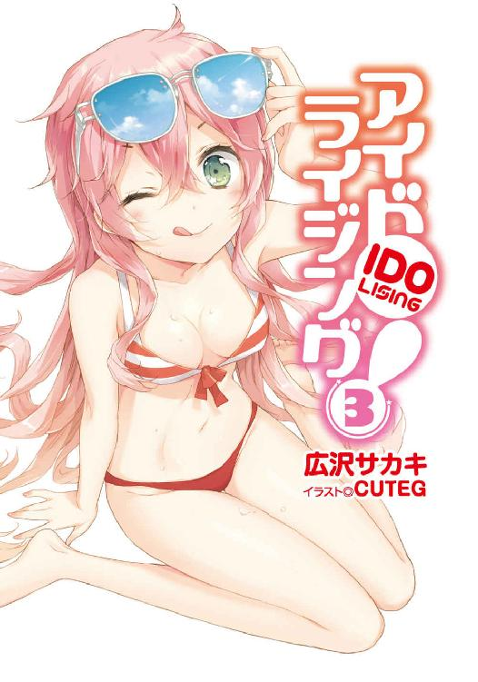
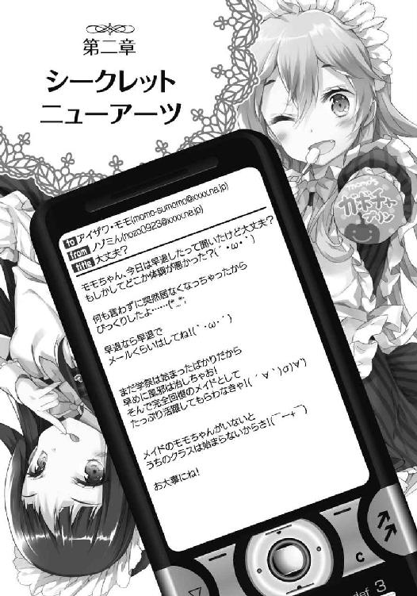
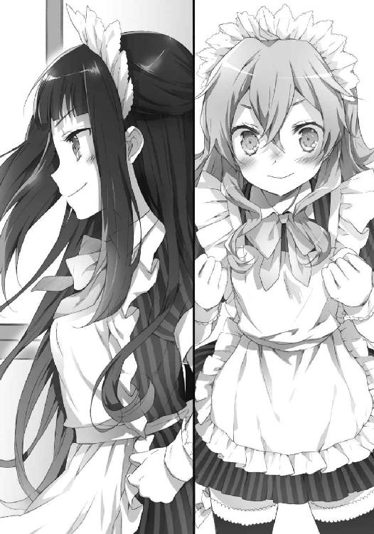

| アイドライジング！(3) (電撃文庫) | |
| 広沢サカキ | |
| (2014) | |



本書（電子版）に掲載されているコンテンツ（ソフトウェア／プログラム／データ／情報を含む）の著作権およびその他の権利は、すべて株式会社ＫＡＤＯＫＡＷＡおよび正当な権利を有する第三者に帰属しています。
法律の定めがある場合または権利者の明示的な承諾がある場合を除き、これらのコンテンツを複製・転載、改変・編集、翻案・翻訳、放送・出版、公衆送信（送信可能化を含む）・再配信、販売・頒布、貸与等に使用することはできません。
東京湾上に建設された海上都市ニライカナイに、秋がやって来た。
暦の上では十月も半ば。夏の熱気はまるで幻のように消し飛び、代わりに本格的な冬を予感させる冷気が我が物顔でこのメガフロートを包んでいる。
朝吐く息も白く煙り、そして陽が落ちるのも早い季節だ。
辺りはすでに夕暮れ時を越え暗くなる頃合だが、私立鳴谷鶯高校にはいまだ煌々と明かりが灯っている。高校ならばもう部活の生徒達くらいしか残っていなさそうな時間帯だが、各教室は騒がしく廊下の往来も昼のそれと変わらぬほどだ。
「うんしょっと」
その中に、ダンボール箱を抱えて廊下を歩く少女が、いや美少女が一人。流れる水のような桃髪やきめ細かな肌といい、細部からはその天然素材の質の良さを感じさせる。そして何よりも目をひくのは１８１センチもあるその身長。しかも、ただ大きいだけでなく脚はすらりと長く、腰はきゅっとくびれ、頭もちんまりとしており絶妙なバランスを誇っている。名をアイザワ・モモという。
モモは学生証で器用にドアの電子ロックを解除した。面倒だがここはセキュリティの厳しい学校、仕方がない。
「今出来てる花紙のお花全部持ってきたよー」
声をかけながら自分のクラスである一年三組の教室に入っていくと、中ではクラスメイト達が飾り付けやセッティングのためにあくせくと動きまわっている。活気はいつもの倍以上だ。
「ご苦労さま、モモちゃん。それは教卓の上に置いておいてね」
細いフレームの眼鏡をかけた少女が出迎え、指示を出す。
「よいしょっと。ユキんちょ、この花って外看板の縁に貼っていいんだよね？」
「うん、セロテープ丸めて貼ってくれればいいから」
ユキんちょと呼ばれたこの眼鏡の少女はこのクラスの委員長だ。知的な雰囲気とその役職がぴったりで、非常にそれらしい。
「でも、ちょっと数が多いわね。あ、ノゾミん！ モモちゃん手伝って！」
「はーい。よぉしモモちゃん、一緒にやろうか！」
委員長に呼ばれてモモに近づいてきたのは、やや背の低いツインテールの少女ノゾミ。元気が有り余っているのかぐるぐると腕を回している。
「うん！」
委員長のユキとツインテールのノゾミ、この二人はモモの大事な友達だ。
転入してきた九月頃からちょくちょく話をし、色々な相談などをしているうちに自然と仲良くなっていった。今では学校生活をこの三人と、モモが強引に引っ張ってくるもう一人を加えた四人組で過ごす事がほとんどだ。
「もうすぐだね、学園祭」
ぺたぺたとセロテープを丸めながらノゾミ。
「うん。でも私アイドルの方もあって、あんましお手伝い出来なかったけど......」
申し訳なさそうにうなだれる。
モモは高校生でありながらアイドルをやっているため、部活に所属できないどころかこういう学校行事にも深くは携われない。
「いーのいーの。モモちゃんとオリンちゃんには当日お客さん集めのためにたっぷりがんばってもらうからさ」
「い、いいけど、私なんかがウェイトレスでお客さん来るかなあ......特注で衣装も作ってもらったけど、あんま自信ないよ......」
モモは不安げに呟きつつ、花の後ろにセロテープを貼り看板縁に押し付けていく。
「ええっとあれはウェイトレスじゃなくて────まあいいか。とにかく絶対お客さんは来るって。ユキんちょの企画力を信じて」
「ふっ、安心なさい。桃色ガリバー」
そこで舞い降りるような可憐な声。
振り向くと、そこには黒髪を伸ばした美しい少女が泰然と構えていた。
「オリンちゃん」
モモはその少女の名を呼んだ。強制参加が定番の、四人組最後の一人だ。
「あんたにはもともと誰も期待しちゃいないわ。当日、お客はこの私目当てに長蛇の列をなすことになるでしょうからね」
ハセガワ・オリンは髪をかきあげて高慢に微笑む。
自信過剰とも取れる言葉だが、整った顔立ち、白い淡雪のような肌、プライドの高そうな鋭い瞳はその自信を得るに相応しい実力の持ち主である事を裏付けている。それもそのはず、彼女もモモと同じくアイドルをやっているのだから。
「まあ、煌輝星祭は私が主役の学園祭と言っても過言ではないわ。私がこのクラスにいる時点で勝利は決まったも同然。宝船に乗った気でいなさい。ふっふっふ」
煌輝星祭。
毎年この季節に行われる私立鳴谷鶯高校の学園祭だ。鳴谷鶯の伝統行事であり、開催期間は一週間と長い。数ある学校行事の中でも最大規模のものだ。模擬店、展示、ライブ、ステージイベントなどなど内容は盛りだくさん。アイドル達が大勢通う学校という事もあって、規模も運用額も他のそれとはまさに桁違いであろう。
そして今まさに、モモ達はその煌輝星祭の準備に追われているのだ。
「そうだね！ オリンちゃんがウェイトレスならお客さんはたくさん来るよ！」
しかしそんな好意的な発言をしたモモを、オリンはジト目で射抜く。
「......ウェイトレスねぇ」
「どしたの？」
意味が分からずに首を傾げるモモ。
「......ま、あんたがどういう認識でいるにしろ、どーでもいいわ。私の人気があればそれでいいんだから」
面倒だったのか、オリンは説明を放棄した。
「え？ うちのクラスは喫茶店でしょ？ それだったらウェイトレスでいいんじゃ......」
その他にあのような職種を何と呼べばよいのかモモには思いつかなかった。女給さんとでも呼ぶべきなのであろうか。
「モモちゃん、うちの出し物はメイド喫茶なんだよ」
そこでノゾミがそっと口添えする。
「メイド喫茶......」
馴染みのない単語を繰り返すモモ。
「んと、メイド喫茶って普通の喫茶店と何が違うの？」
「こう、見た目のインパクトが強いんだよ。あとは挨拶が違うだけで、ぶっちゃけあんま変わんないんじゃないかな。実際は私もよく知らないんだよね」
「ふっ、ノゾミは無知ねぇ。特別にこの私が教えてあげるわ」
そこでオリンは高らかに笑う。
「メイド喫茶には厳格な作法があるのよ。うるっとした瞳での上目遣い、裾をちょっと摑んで小さく握る拳、首を傾げる時の髪の揺らし方とか他にも注意すべき点が色々とね。一朝一夕で出来る技じゃあないわよ」
「そ、それはメイドの作法というかオリンちゃん得意の猫の被り方じゃ......」
「だって企画をまとめたユキはそれでいいって言ったわよ」
そこでオリンは委員長であるユキへと視線をやる。
「うん、オリンちゃんはそれでばっちりだと思うわ」
「ゆ、ユキんちょ、私そういう練習全然してないんだけど、大丈夫かな？」
モモが不安になりユキに尋ねると─────
「モモちゃんは天然系だから、ありのままでいいのよ」
「？？？」
返ってきたのは謎の笑顔と回答だった。
「うちのクラスにはアイドルが二人もいるんだから、直球勝負をかけて勝てるポテンシャルは充分だわ。ならば、単純にその魅力をプッシュしつつ二人の差異を明確に感じ取れる形がベスト。そこでメイド喫茶よ。天然系元気メイドと小悪魔系ぶりっ子メイド、二人のメイドタイプに差をつけて攻めれば死角はないはず。他の給仕係はちょっと地味めな感じにしといて、アイドルであるモモちゃんとオリンちゃんをきっちりうちのメインとして押し出す形よ」
そして自慢げに眼鏡をくいっと持ち上げる。どうやらこのメイド喫茶という企画はユキが全てを取り仕切っているようだ。
「うふふふふふ。煌輝星祭は一般人も入ってくるお祭り......ばりばり稼ぐわよ」
「七日間で何人の人間が私の元に跪きに来るのかしら。くっくっく、今から楽しみね」
委員長とオリンはそれぞれトリップし、不穏な妄想を膨らませている。
「ま、まああの二人は放っておくことにして......やっぱり学園祭、わくわくしちゃうよね！」
ノゾミは二人を視界に入れないようにして、モモへと笑いかけた。
「うん、なんたって高校生活で初めての学園祭だもん！」
モモは一年生の二学期からこの鳴谷鶯に転入してきた。つまり地元山形の高校でもまだ学園祭というイベントは体験したことがないため、どうしたって期待は高まってしまう。
「しかもここは名門鳴谷鶯！ 模擬店とかも中学とは比較にならないくらい豪華で、美味しい食べものがたくさんあるって評判だしね！」
「私、吹奏楽部のホルンまんじゅうが楽しみ！」
「私も！ あとは水泳部のブーメラン焼きと、茶道部の洋風あんみつと......あっ！ そうそう、毎年恒例の体操部のリボンクレープは絶品らしいよ」
「うう、おなかすいてきたよ～。絶対一緒に行こうね！」
「もちろん！ 食べ歩き楽しみだね♪」
こちらはこちらで健全な想像だ。欲望に忠実という意味では、先のユキやオリンとあんま変わりはないかもしれないが。
「楽しみだなあ、学園祭。えへへ......」
モモは自らが握る花のようにぽわんぽわんな想像を繰り広げては、笑みをこぼしていた。
鳴谷鶯の学園祭、煌輝星祭の開催はもう目の前だ。
「モモちゃん、隠したってダメ。お姉さんには分かるんだから。ほぅら、ここでしょう？」
一人の美女はするりと接近して、とろける息を漏らした。高貴でいて放蕩を誘う魔女のような声音は、扇情的な魅力に満ちたその姿に似つかわしい。情熱的な赤い髪、切れ長のシャープな瞳、そして口元に浮かべるのは蠱惑。
タキ・ユウエンという紅い美女だ。
「そ、それ以上は......だ、ダメですっ......」
モモはたゆたう色香にさらされて身をよじる。タキと比較するとモモの美しさは洗練されたものでなく素朴さの残った優しげなもので、魔女の毒牙にかかるにはうってつけの純朴な村娘といった感じだ。
「うふふ、震えちゃってカワイイんだから......」
タキは紫煙をくゆらせるように甘い吐息。右手が五指を立て、モモの白く細い腕を這っていく。さながら獲物を物色する蜘蛛のように。
「ひゃうっ」
「ふふ......」
タキはさらに間合いを縮めて、今度は足を絡ませる。モモの純白のふとももの間に自身の足を割り込ませて、プリーツスカートの裾を広げていく。
「んっ......ダメっ......だめぇ......」
タキの檻からは逃げられず、視線だけでもとモモは顔を背ける。
「あん、そんなとこ見せたらダメよ。食べちゃう♪」
露わになったモモの白い首筋をなぞるように、タキは唇を押し付けてその美しい形を歪ませる。
「ひうっ！」
「ガマンするからいけないのよ？ さ、身を委ねて......」
そしてモモに押し付けられる双丘の感触。豊かに育ったその大きさ、柔らかさは服の上からでも極上のものだと分かる。
「いや......いやあぁ」
モモは小さくぷるぷると顔を振る。
「分かっているでしょう？ もうモモちゃんは私に逆らえないって事も」
「──────っ⁉ それは......」
口ごもる。否定できなかった。
「分かってるのならば、どうして抵抗をするの？ 怖いことなんてなにもないわ。すぐ終わるから、ね」
さらに攻勢へと傾くタキに打つべき手を失したモモは、すがるような視線を傍らの人物へと向ける。
「さ、サイちゃん」
だが、いつも優しいはずのサイの表情はなぜか暗く沈痛なもので────
「─────ごめんなさい、モモちゃん。私じゃもう、どうすることも出来ないの......」
そして、サイは目を伏せて残酷な事実を告げた。
「タキちゃんの、望むとおりに......」
「そ、そんな......」
信頼していた人物へ伸ばした綱すら無残に切り落とされた。
絶望が、モモを襲う。
「さあ、もう耐えるのも限界でしょう？ あきらめて、楽になりなさい」
「い、いや............そんなの、そんなのいやあっ！」
モモの悲痛な叫びが響き渡る。
「あきらめて──────────────────渡しなさい！ モモちゃんがその手に持つ、鳴谷鶯学園祭の特別招待チケットを！」
そう言って、タキはモモが高々と掲げた右手に持つチケットをびしっと指差した。
「い、いやですぅ！ ......これだけはっ......」
モモはその１８１センチという高身長を活かし思いっきり手を伸ばして、タキの魔手からチケットを死守していた。
「ほら、もう！ ずるいわよモモちゃん！ 背の高さを使うなんて！ 抵抗しないの！」
それに必死で手を伸ばし、タキはモモと密着している状態だ。
「うぐぐ......だ、ダメですぅ......タキさんが鳴谷鶯に来たら、大変な事になっちゃいます......主に女子生徒たちが被害を被るという意味で......」
煌輝星祭初日、朝方。
ここは株式会社ミニテックス、アイドル事業担当キムラ別室のオフィス。もう数分ほど二人のこの攻防は続いている。
事の始まりは早朝。タキからの『どうしても、お願いしたいことがあるの。モモちゃんにしか頼めないことよ。場所はミニテックスで』とのメールを受け取り、素直に応じた結果このような展開になってしまったというわけだ。
「むむ、まったく強情なんだから......」
タキは業を煮やしたのか、ふうと息を吐き一度戦線から離脱する。
ちなみに彼女の服装は秋めいたもの。明るい色のＴシャツの重ね着、その上にかっちりしたベスト、そして太めの黒白ボーダーニットのふんわりしたボレロを羽織っている。丈の短いサロペットから覗く美脚が眩しい。足元はシンプルなホワイトブーツだ。
「い、いえ、これは渡すわけには......」
対するモモは制服だ。上は胸に校章の入る純白のブレザー、スカートは生地を厚くした夏服と同じチェック柄のものだ。中のブラウスはもちろん長袖で、ベストやカーディガンは各々自由なものを着用してよい事になっている。
制服にしては明るめの色調で、トラディショナルさを残しつつもとてもオシャレだ。
「仕方ないわね......」
そう言うと、タキはこほんと咳払いをし腰に手を当てて─────
「......桐浜のゴミ処理場の炉」
ぽつりと呟いた。
「はうっ⁉」
痛いところを突かれ、モモはびくっと震えた。
「桐浜電鉄のゴミ処理場の炉を止めたせいで、ニライカナイの主要交通網であるシャトルトレインに電力が供給出来なくなって、一時的に運転を見合わせるという前代未聞の事態に陥ったのよねえ。影響は甚大だったわあ......」
思い出すのもつらい、といった体でタキはため息をひとつ。彼女は桐浜電鉄という企業に所属しているアイドルだ。その時の影響や被害規模などは事細かに把握していることだろう。
「あの、えとえと、それは......」
「そんな一大事に発展することを承知の上で、モモちゃんの涙ながらの懇願を聞いてあの炉を止めたのは、果たして誰だったのかしらねえ......」
わざとらしく虚空を見つめるタキ。
「............た、タキさんです......タキさんのおかげです......」
モモはうなだれながら事実を自分の口から告げた。これは決して避けることの出来ない大きな借りだ。
「そうでしょうそうでしょう。じゃあ、チケットちょうだい♪」
タキは笑顔になって両手をモモに差し出した。
「あの、あの、でも......」
それでも渋るモモに、タキは再びモモに接近し口説く。
「下がっちゃった桐浜電鉄の株価を、私がアイドライジングで活躍して回復させるのはなかなか大変だったのよ？ その他もろもろ数えきれないほどの損害を学祭の招待券一枚でチャラに出来るんだから、むしろ安く済むと思うべきじゃないかな？」
「ぶっちゃけるとその通りよ、モモちゃん。桐浜のあの損害を学祭のチケットでなんとか出来るなら破格よ」
「サイちゃん......」
そこでサイの声が割って入る。
「もう、モモちゃんてば私の知らないところで無茶して。モモちゃんがシャトルトレインを止めたって話を聞いた時は卒倒しかけたんだから。最悪の場合私は辞表を......あら、なんだか前にもこんな話をした事があるような......？」
思い出そうとして首を傾げるサイ。
「......う、うう......仕方ありません......」
モモはついに観念して、タキへと招待チケットを渡した。
「よしよし、いい娘ね。モモちゃん」
タキは満足げにそのチケットにキスをすると、口元をそれで隠し視線を送る。
「んー、でもこのチケット一枚だけでチャラってのはさすがに安すぎるかな」
「ええっ⁉ じゃ、じゃあ、どうすればいいんですか？」
そこでタキの瞳がキラリと光る。
「学園祭が行われる今日から一週間、モモちゃんは私と学祭デートしてもらいます！」
「え、ええええええええっ⁉」
明らかに嫌そうなモモの悲鳴がオフィスに響き渡った。
「それくらいのサービスはしてもらわないとね。アイドルの集う高校、鳴谷鶯での学園祭でモモちゃんとデートなんてっ！ あぁん、楽しみ過ぎる♪」
「............わ、分かりました」
モモは歯を食いしばりながらその条件を飲んだ。
「その代わり、他の女子生徒に手を出しちゃだめですよ！ ぎ、犠牲は私だけに！」
そしてきっぱりと告げる。自分が身を捧げる事で他への被害が抑えられるなら、と考えての了承だ。
「安心して。モモちゃんみたいな極上の娘をほっぽり出して他の娘の相手なんかする訳ないじゃない♪ ま、目の保養はするかもだけど。じゃあ、すぐに車を持ってくるから正面玄関で待っててねー♪」
タキは熱烈な投げキッスを贈ると、踊るような足取りでオフィスを後にしていった。
嵐が過ぎ去り、モモは疲弊しきった戦士のようにその場に崩れ落ちる。
「うう、楽しみにしてた学園祭がまさかこんな形になるなんて......」
「モモちゃん、これは自分のワガママのせいなんだから自分で責任取らなきゃ。これで済むのは安いくらいなのよ。がんばって」
「分かってます......分かってますけどぉ......でも、うう......」
モモは涙ながらに、大きく大きくため息をついた。
楽しみにしていたバラ色の学園祭は、かくして一瞬で闇へと塗り替えられたのだった。
と、そんなわけで───────────
「はあ、朝から気分がもやもやです......」
「ほらほら、しゃきっとなさい」
モモとサイはミニテックスの正面玄関に到着していた。もうそろそろタキ・ユウエンは近くの駐車場からここに車を持ってくる。
この場から、モモをさらっていくために。
「どんなに落ち込んでもやる事に変わりはないんだから。デートを楽しんでいらっしゃい」
ぽん、とサイに背中を叩かれてモモは視線を向ける。
「......サイちゃんは私が他の女の人とデートしてもショックじゃないの？」
「え？」
「やきもち、やかないの？」
その弱々しい声音を聞いて、サイはくすりと微笑んで続けた。
「まったくもう、本当に甘えんぼなんだから。モモちゃんはアイドルでしょ？ 私が独り占めは出来ないわ。こうやってモモちゃんと一緒に生活できるだけで、私は幸せよ」
その言葉を聞いた瞬間、モモは顔をぱあっと輝かせた。そしてサイをぎゅむっと抱きしめぐるぐると回転し始める。
「んもう！ なにいってるの！ 朝も夜も昼も、いつだって私はサイちゃんだけのものだから安心して♪ いつでも私を好きにしていいんだよ！」
「た、高い！ 怖い！ モモちゃん放しなさい！」
そんなじゃれ合いを続けていると、遠くから車のエンジン音が聞こえてくる。やがてその音はだんだんとこちらに近づいてきて、目の前に小型の車が現れた。
「タキちゃん、来たみたいね。さ、行きましょう」
近づくと、それはちょっと丸めの可愛らしい車だった。ライオンが横を向いているエンブレムが、おそらくメーカーの名を表しているのだろう。
「ぺ、ぺう......」
「プジョーって読むのよ、モモちゃん」
さらりとサイからの指摘が加わる。
そこでちょうどがちゃりとドアが開き、タキが降りてきた。
「お待たせお待たせ。では、オウダさん。学祭の間、モモちゃんは私が学校まで送っていく形でよろしいですか？」
「ええ。よろしくお願いね、タキちゃん」
サイとタキは軽く会釈を交わす。
「さあ、モモちゃんどうぞどうぞ」
タキは助手席のドアを開けてモモを招く。
「じゃあ、いってきます......」
「がんばってね、モモちゃん」
モモは今生の別れかのごとく儚げな表情をサイに見せた後、ひとまず誘われるがままに乗車した。
乗り込んで、まずは内装を見回す。
窓の形も、カップホルダーも、ダッシュボードも当然ながらサイの車のものと形が違う。
ラジオの操作も、シートベルトの位置も、座るシートのその感触も。
そしてなにより、いつもと違う人の匂いがする。
ちょっぴり特別な感じだ。
「さてさて、じゃあ行きましょうか」
タキは運転席に乗り込むと、すぐには車を動かさずモモに熱い視線を向ける。
「ああ、麗しい制服姿のモモちゃんが、今私の車の助手席に座っている......この征服感にも似た感情......甘美だわ......」
「はううっ......」
早速の洗礼にモモは恐れおののく。
「むふふ。では、楽しい楽しいデートスポット、鳴谷鶯高校まで向かいましょー」
タキはサイドブレーキを下ろし、ゆったりと車を発進させた。
まずミニテックスの通りを抜け、大きな通りに出る。ここから車を一時間ほど走らせれば、鳴谷鶯に到着するだろう。
「向こう一週間、天気は晴れらしいよ。良かったね、せっかくの学園祭だもんね」
ハンドルをくるくると回しながら、タキは話しかけてくる。
「は、はい。よかったです」
「なにか途中で買ってくものある？ 学校に入ったらなかなか外に出られないでしょ。今のうちよ」
タキに言われてモモは頭の中をもう一度漁ってみる。
大道具、小道具の準備はほぼ終わっているし、細やかな飾り付けも昨晩で済んだ。持ち帰りの作業はないし、肝心の衣装も全て学校から持ち出してはいない。
「ええっと......特にないはずです」
「そう、それならよかった。お、ちょっと渋滞っぽいね」
大通りに入るなりタキの車は停車してしまう。長く連なる車の列に仲間入りだ。
「日曜だから平気かと思ったけどダメね。いや、むしろ今日だからか」
カーナビを操作しタキは道路情報を集め始めた。
「渋滞抜けたら高速に乗ったほうがいいっぽいね。そういえば朝ごはんは食べた？」
「はい、朝は食べました。毎朝私が作ってるんで」
「まあモモちゃん料理できるの？ いいわねぇ、すごくポイント高いわ」
「もともと家事は好きなので......」
「う～ん、素晴らしい」
意外にもタキとこのように会話をするのは初めての事だった。
今までタキからのアプローチといえばセクハラじみたスキンシップがほとんどであり、このようなやり取りは新鮮そのもの。
というか、ボディタッチなしにコミュニケーションが取れる事を初めて認識した。
（......私、タキさんのこと怖がりすぎたかな）
アイドルとしては大先輩な上、彼女は《オペラ・オービット》というアイドライジングでも最上級のランクグループに所属しているトップアイドルだ。やり方は少し過激だが、モモは彼女に非常によくしてもらっていると言っていい。苦手意識があるとはいえ先輩と後輩、年上と年下としての礼節はわきまえなければならない。
「そ、そういえば」
そこを踏まえ、今度はモモの方から話を振ってみる。
「エリザベスマッチの予選って、今日からですよね？」
「ええ、今日から一週間ね」
エリザベスマッチ。
アイドライジングのトップであるクイーンとその挑戦者が、頂点を賭けて戦う試合。シーズンを締めくくる最終決戦だ。そしてその挑戦者となるアイドルが、今日から一週間かけて行われる予選を経て決定する。
来シーズンの《オペラ・オービット》入りが確定しているムラサメ・キジョウ、ウルシダニ・ユカリ、そしてタキ・ユウエン。この三人で一週間かけて試合を行い、もっとも成績の良い一人だけがクイーンであるマツリザキ・エリーへの挑戦権を得られるというわけだ。
ちなみにこのエリザベスマッチの予選が行われる一週間だけは、アイドライジングが毎日開催される特別日程となっている。
「エリザベスマッチの予選はいつも鳴谷鶯の学園祭と同時期にやるのよね。ちょうど両方共一週間開催だし、観光客もいっぱい来るのよ」
「なるほど、だから道路もこんなに混んでるんですね」
「昼は鳴谷鶯の学園祭を楽しみつつ、夜はアイドライジングを観戦するっていうのがこの時期の観光ルートの鉄板ね。エリザベスマッチに並ぶニライカナイの大イベントの一つだから。エリザベス予選の旅行パックとか一年前くらいから予約取らないとダメなくらいよ」
「す、すごいですね............でも、タキさんもそんな大事な予選に出るのに、昼間は私とデートとかしてて平気なんですか？」
エリザベスマッチの予選はアイドライジング最高位の順位戦。どのアイドルも己の全てを賭す試合だ。切磋琢磨し強さの頂点を極めんとするガチバトル派アイドル、その順位戦というシチュエーションを利用した盛り上がりを重視するエンターテインメント派アイドル。各々が築きあげてきた力と演出、そしてバトルドレスを武器に最高の舞台で舞い、観客を魅せる。
まさに一年間培ってきた力を見せる集大成の場なのだ。
「まあ、私はそんな上昇志向強い方じゃないしねー。ここまで来たらいつも通りの力を発揮するだけよ」
タキは首を回しながら答える。
「それに、モモちゃんとこうしてデートしてみたかったのよ。普通にお話ししたこともあんまりなかったでしょう？ あなたのこと、もっと知りたかったから」
そして優しげに微笑んだ。
「そう、ですか......」
かつてないほどに会話がスムーズに流れたことで不安要素がやや解消された。そして、これはタキに借りを返すという意味合いのデートである事を思い出す。
（............失礼な態度ばっかりじゃいけないよね......苦手なのは変わらないけど、楽しい時間を過ごしてもらわなきゃいけないもん！ うん！）
胸中で頷いて、がさごそと自分の鞄からお弁当箱を取り出す。今日はサンドイッチを主体とした洋風弁当だ。
「タキさんは、朝ごはん食べましたか？」
「ううん、まだだけど？」
「よかったら、私のお弁当少し食べます？ どうせ今日は模擬店でたくさん食べちゃいそうなので......」
瞬間、タキの目の色が変わる。
「モモちゃんの手作りお弁当⁉ 食べる食べる！ 嬉しい～！」
（喜んでもらえてよかった。こういう感じならデートもうまくやっていけそう......）
ちょうど道路は渋滞中。今のうちに食べてもらえばよい。
モモが弁当箱をタキに手渡そうとすると......。
「あ～ん♪」
「え？」
その艶めかしい唇を開いて近づけてくるタキ。
「あ～んして♪ 私運転中だからさ」
モモは硬直した。
（ど、どうしよう......これくらい、するべきなのかな？）
やや恐怖を感じはするが、車中の会話はいたって自然な流れだった。まして相手は大先輩アイドル。ちょっぴりこういうふれあいイベントがあったからといって、極端に意識し過ぎて回避するのは失礼かもしれない。
（ええっと、でも、今までが今までだし......うう、どうすれば......）
「さ、早くしないと車が動き出しちゃうわ♪」
「あ、ええと、は、はい！」
催促され、モモは思わずサンドイッチを差し出した。
「ぱくっ」
タキはすぐさま小さくかぷり。そしてそこから凄まじい速さで一気に進軍した。すぐさまモモの指先は侵略される。指を包む温かで官能的な感触。淫靡に湿った唇。
「ちゅっ」
そしてちろりと舌先が触れる。
「ひうっ⁉」
モモは飛びすさるようにして指を引っ込めた。
「あぁん♪ モモちゃんの指をもっとちゅっちゅしたかったのにぃ♪」
「はわわ......」
外気に触れひんやりとした指先が、背筋を寒くさせる。
冗談めいたセリフとは裏腹に、あの行動は確実に狙っていた。隙あらば愛欲に溺れさせようと常闇から誘う魔女、それ以外のなにものでもなかった。
あと数瞬でも遅かったら果たしてモモの指はどうなっていただろうか。
「もう一回、モモちゃん。あ～ん♪」
あれほどの行為がまるでなかったかのように、あっけらかんと続きを要求してくる。艶めかしく開く口腔はまるで地獄の釜、冥府の門のよう。
誘惑に満ちた魔女との遊戯は始まったばかりだ。途中退席は出来そうにない。
（や、やっぱり私この人......苦手かもぉ......う、うう......）
★ ★ ★
モモは自分の教室に入るなり、がくっと膝をついた。
「ど、どうしたのモモちゃん⁉」
慌てて近くにいたユキが駆け寄ってくる。
「うう、ユキんちょ......私もうダメかも......ぺろぺろが、ちゅっちゅが......うう」
息も絶え絶えにモモ。いつも血色の良い顔が真っ青だ。
「モモちゃんに一体なにがあったの⁉」
「ちょっと桃色ガリバー、そろそろ開始時間なんだから遊んでないで急ぎなさいよね」
その寸劇に呆れ顔で突っ込んできたのは、メイド服を纏ったオリンだ。
やや長めの清楚な漆黒のワンピース、それと対をなすような汚れのない純白のエプロンには丁寧な刺繡が施されている。そして頭部を飾るのは騒がしくない程度のフリルが付いたカチューシャ、これ以上ないと言えるほどのかっちりしたエプロンドレスである。フェティッシュな魅力溢れるこの系統の服装は正統派美少女であるオリンが着こなせばまさに完全無欠の可憐さだ。
「ふわあ......オリンちゃん、かっわいー‼」
オリンの格好を見て、モモはみるみるうちに元気を取り戻していく。
「ふっ、当然でしょ。この私を誰だと─────」
「オリンちゃん！」
モモは回復するや否やオリンの背後からぎゅうっと飛びついた。
「な、なによ。くっつかないで重たいんだから！ それにせっかくのメイド服にしわが出来ちゃうでしょ！」
「ダメなの！ 今の私は急速にオリンちゃん分を摂取しないとダメなの！ すう、はあ」
「私の頭上で深呼吸するな！」
オリンはその場でぐっと飛び跳ねて、モモのあごに頭突きをかます。
「はぐっ」
脳が振動し、さすがにモモはその拘束を解いた。
「いいから早く着替えろ！ このバカ！」
「はう......気力を回復しようと思ったのに......」
ようやく調子を取り戻し、モモは辺りを見回した。
「わあ、もう形になってる」
机は二つ合わせて白いテーブルクロスを敷き、程よい間隔で配置。カーテンも重厚なものへと変え、店内の飾り付けも造花をあしらって華やかだ。
喫茶店の雰囲気はかなりよく出ている。
「あ、とってもいい匂い」
良い紅茶の香りが漂ってくるのは教卓側、長机を並べてあるこちらがキッチンとなっているようだ。
「ふふ、でっしょー？ やっぱり紅茶のいい香りがするとお客さんが寄ってきてくれそうだからね。味見も兼ねて先に入れておいたんだ」
ノゾミはキッチンで紅茶の準備をしていた。丸い陶器製のポットから湯気が立ち、朝の肌寒さを溶かすような馥郁たる香気が漂っている。コーヒーの方は準備中だが、大きめのコーヒーサイフォンを見るにこちらも気合が入っている。付け合わせの軽食を温めるためのオーブンも完備とかなり本格的だ。
どうやら喫茶部分の準備は万全らしい。
「はーい！ みんな、集合して！」
委員長のユキが手を叩いて集合をかけた。クラス全員がキッチン前に集まると、ユキは眼鏡の縁をきらりと光らせて語り始める。
「さて、もうそろそろ開始の時間よ。待ちに待った煌輝星祭、長い一週間が始まるけど、みんなが今まで積み重ねてきたことの集大成。精一杯.........楽しみましょう‼」
『おーっ‼』
掛け声と共にぐっと拳を突き上げると、クラス全員で大きく声を合わせた。
「さあ、一年三組のメイド喫茶、開店よ！」
★ ★ ★
この私立鳴谷鶯高校はニライカナイで活躍するアイドルが数多く通う学校だ。当然のことながらセキュリティはかなり厳しい。出入りの頻繁な校門、昇降口、各教室、通用口にまで電子ロックがかけられているほどに。なにせ日本経済を繁栄に導くか没落の憂き目に遭わせるか、その行く末を双肩にのせているのは他ならぬアイドルなのだ。当然の対応と言える。と、なればその学園祭の人気は推して知るべし。
はっきり断じよう。
この煌輝星祭の入場チケット、超が付くほどのプラチナチケットである。
まずチケットを購入するためには書類審査を受けなければならない。国籍、年齢、身元、年収、学歴その他諸々個人情報を隅々までチェックされそれをパスした者に購入が許される。そうなると当然ながら当日券は存在せず前売券のみで、一人につき購入できる枚数は一枚のみ。そしてこの入場チケットは開催中七日間の任意の一日にのみ利用できる。七日間のうちのたった一日しか入場できないとはケチくさいと思われるかもしれないが、なにせこの期間は日本全国から一気にアイドルファンが押し寄せるのだ。ニライカナイに存在する学校で一番の敷地面積を誇る鳴谷鶯といえど、その割り振りでないとさすがに処理しきれない。そしてなによりも、一人につき一日限定入場にする事によってなるべく多くのファン達に煌輝星祭を楽しんでもらうという意味もあるのだ。
この若干面倒な仕様にもかかわらずチケットは毎年瞬殺。そしてこの徹底した購入体制を敷いていてもこの時期の鳴谷駅前にはダフ屋が声を張り、目を疑うような買い取り額のチラシがまかれ、ネットオークションでは偽物が何百枚という単位で流通する事になる。そしてまたそれに騙される人も後を絶たない。
このような風物詩的な軽い社会問題になるほどに、この煌輝星祭の入場チケットは多大なる影響を巻き起こすものなのだ。
「それじゃ、私はこれから学園祭を見てきますんで」
助手席に座るサイは、モモからもらった特別招待チケットを手にドアのロックを外した。
ちなみに、鳴谷鶯全校生徒に配られる特別招待チケットは煌輝星祭開催期間中いつでも何回でも入場できる。タキが躍起になってモモから奪おうとしていたのはこれが理由だ。
「........................」
運転席に座るユウガクの返事はない。
ここは鳴谷鶯の駐車場。
サイは自分一人で学祭に来るつもりだったが、ユウガクが運転して送ると言ってきかなかったためこのような形となっているのだ。
「帰りはタキちゃんの車でモモちゃんと一緒に送ってもらう事になってるんで、この社用車は今日自由に使ってください」
そう言い残して、サイはするりと助手席から降りた。つられるようにしてユウガクもなぜか運転席から降りる。
「それじゃ、行ってきます」
サイが背を向けようとしたその時。
「サイちゃん！」
ユウガクは今までになく真剣な声を張り上げ─────
「チケットゆずってくれたのむ！」
恥も外聞も地位も、三十代の男が持つ一切をかなぐり捨てて土下座した。
「ちょ、ちょっと突然なにしてるんですか⁉ 頭をあげてください！ しかも学祭チケットほしさに上司が部下に土下座なんて！」
「いいや、君がゆずってくれるまで頭をさげるのをやめない！」
漢らしいのか女々しいのかよく分からないセリフだ。
「タキちゃんにチケットあげる事は室長も了承したじゃないですかあ！」
「それがモモちゃんの持つ招待券のラスト一枚だなんて知らなかったんだよ！ それを知ってればユウエンちゃんには別のモノで手を打ってもらうよう策を講じたさ！ ああ、本来なら俺がモモちゃん、サイちゃんと夢のダブルデート出来るはずだったのにっ......」
ぎりりと拳を握り込む。血の涙でも流してしまいそうな勢いだ。
「じゃ、じゃあチケットを貸し借りするっていうのはどうですか？」
「貸し借り？」
サイの提案を聞いて、ユウガクは面を上げた。
「この特別招待チケットは七日間有効のものですよね？ だから、二人で一枚のチケットを貸し借りして日にちずらして使うんですよ。さすがにお互い毎日来るわけじゃないですし」
「な、なるほど！」
この方法でいくのならば特別招待チケット一枚で、かわりばんこにさえすればいくらでも入れることになる。
「名案！ なーんだ、なんか悩んでたのがバカらしくなっちゃった。それでばっちりじゃないか。じゃあ、今日はサイちゃんが楽しんでくるといいよ。俺はまた別の日に来るからさ」
「ええ、万事解決ですね」
サイ達はとりあえず煌輝星祭の入場口へと足を向けた。
そしてサイの手の甲に機械が当てられ、ぱしゅっと軽い音を立てると英数字の組み合わさったコードが打ち込まれた。
「この肌に打ち込まれたコードが一週間通じてのあなたの入場番号になります。入場時にスキャニングいたしますのでチケットと合わせて生徒にご提示ください。ちなみにこの特殊インクは一週間過ぎると消えますのでご安心を」
生徒会役員らしき役職の女子生徒から、この仕組みについての解説を聞かされる。
なるほど、確かにこうすれば招待チケット一枚につき一人しか利用できない。
「......あの、煌輝星祭って毎年こうやって厳重に管理してるんですか？」
「いいえ、毎年やり方は違いますよ。一年経つと対抗策を作られてしまいますから」
万難を排すために毎年方法を変えているとは厳重どころの話ではない、鉄壁だ。さすがはアイドルが通う鳴谷鶯。
浅はかなチケット貸し借りの方法など、通用するわけがない。
「......ちなみにこれって取り消しとかは？」
「出来ません。ご了承ください」
予想通りの回答が返ってきた。
「..................あの、ごめんなさい、室長......」
隣で真っ白になっているユウガクに、サイは申し訳なさそうに告げた。
「.......................................‥.................................そんなっ」
「もう私の肌に捺印されちゃいましたし、どうしようもないですよね......」
女子生徒は取り消しは出来ないと言っていた。ならばもうこのチケットはめでたく一週間丸々サイしか使えないチケットとなったわけだ。
「な、なぜ俺はさっき今日入場したいって言わなかったんだ......俺のバカ......」
★ ★ ★
さてさてこちらは煌輝星祭の中。
手作り感に溢れた飾り付けの校門をくぐると、入場口の生徒会役員から分かりやすい案内図が手渡される。お目当てがない人のために地面には矢印で大まかなルートが描かれており、それに従ってまず中庭に出ると活気に溢れた出店がお出迎えだ。
ここに並ぶのはほとんどが運動部の出し物。それぞれ部活の特色を活かした出し物に、各部員たちが元気よく声を張り上げて客寄せしている。ここで勢いに負けて腹ごしらえをした後の行き先は校内か、もしくは体育館前ステージなどの野外イベントの方面となる。だが煌輝星祭一日目である今日は、野外イベント開催の予定がないので基本的に校内へ向かう人がほとんどだろう。そして校内にあるのは文化部の展示、そして各クラスの模擬店だ。
もちろんその中にモモのクラスの模擬店があるのだが────
「ユキんちょ、あんまりお客さん来ないね」
モモはやや残念そうにユキへと話を振る。
「うーん、出だしで稼いでおきたかったんだけど、ダメね。呼び込みが足りないのかしら......」
ユキは目論見が外れて困惑している様子だ。
とはいえ、別にがらがらなわけではなく適度に店内の席は埋まっている。しかしメイド喫茶と銘打っているのに客は女性客中心、まったりとした空間になっていた。これはこれでよいのだが単純にもう少し客数が欲しい。
「モモちゃーん」
そこで廊下に響く魔女の声。
「はうっ⁉」
モモはびくっと体を震わせて振り返る。
「あぁん♪ 本当にメイドやってるぅ♪ 私もモモちゃんにお世話されちゃおーっと♪」
やはりそこにいたのは予想を裏切ることのない人物、タキであった。
「も、もう来たんですね。もっと他のとこゆっくり回ってくれてよかったのに......」
「言ったでしょ？ モモちゃんを置いて他の娘と遊ぶ時間なんかないって。そんな事よりほらほら、メイド喫茶といえば恒例の挨拶があるじゃない」
カモン、と片手で煽ってくるタキ。
「お、お帰りなさいませ、ご主人様......どうぞこちらへ......うう」
「うむうむ、至福の時ね。美少女メイドはやはり人類のロマンだわ。ん～、メイド服もとっても似合ってるわね♪」
背後からねっとりとした視線を感じつつも、モモは仕事を全うするために席へと案内する。
「ほ、本日は何をお召し上がりになりますか？」
「モモちゃん♡」
顔を真っ青にしてぽろっとボールペンを取り落とすモモ。
「うそうそ。ロイヤルミルクティーとスコーンもらおうかな」
タキは本気なのかからかっているのか、くすくすと笑いながらメニューを戻した。
「はう......なんか心臓に悪いよぉ」
もらった注文を伝えるため、モモはキッチンへと向かう。
「ね、ねえモモちゃん。あれってもしかしなくても、タキ・ユウエン？」
すると、キッチン担当であるノゾミが信じられないようなものを見たかのような面持ちで話しかけてきた。
「？ うん、そうだけど......」
「きゃー！ 私大ファンなんだ！ ね、ね、モモちゃんお願い、サインお願いしてきて！」
両手をぎゅうっと握られる。こんなに必死なノゾミを見るのは初めてだ。
「え、目の前にいるんだから普通に頼めばいいのに......」
「あ、あの《オペラ・オービット》の一人だよ？ き、緊張してそんな事言えるわけないよ......大ファンだもん......」
熱を帯びた顔を両手で包みながらノゾミ。いつもツインテールを振り乱す元気っ娘が、今はまるで恋する乙女のようだ。
「じゃあ、私が頼んであげるから一緒に行こうよ」
「えっ、ちょっと待って。心の準備が────────」
「モモちゃん」
そこで委員長のユキから鋭い声がかかる。
「あ、ユキんちょ。少しだけノゾミんをキッチンから外してもいいかな？」
「いいわ。でも、その代わり────────」
ユキは頰を赤らめつつ、すちゃっとどこから用意したのか色紙を取り出した。
「私の分もお願い......タキ・ユウエン、大ファンなの」
「そうだったんだ。じゃあ二人とも挨拶すればいいよ。一緒に行こう」
友人たちの意外な一面に驚きつつも、モモは二人の手を引いてタキの元へと向かった。
「あの、タキさん」
「なあに？」
「私の友達がタキさんのファンなので、サインと握手をお願いしたいんですけど」
そう言って、モモはノゾミとユキの背中を押してあげる。
「もちろんいいわよ。あなたたち？」
「は、はい！ いつもアイドライジング観てます！」
「あ、あああの、これにサインをお願いします......」
タキはさすがに馴れているのか、慌てることもなく凜とした態度で用意された色紙にサインを記す。そして軽やかに握手。
「ありがとう、二人とも。これからも応援よろしくね」
「は、はい！ エリザベス予選頑張ってください！」
「あの、私タキさんの写真集とかも持ってて───」
そのやり取りを、モモは少し離れたところで見守っていた。
（ノゾミんとユキんちょ、すごく嬉しそう......）
まさかあの二人があんなにも熱烈なタキファンだとは知らなかった。
今までタキのすごさは《オペラ・オービット》という肩書きやサイから聞く情報だけであったが、身近な人物にまでこうも影響を及ぼしているのを見ると実感する。
（やっぱりタキさんって、すごい人なんだな......）
しかし、モモは鵜吞みには出来なかった。まあ今までされてきたセクハラを考えれば当然のことではあるが。
（ファンにも優しいし、ものすごく綺麗な人だし、アイドライジングでも強いし、頭もいいと思うけど......でも、でも！）
なんだか、どうしても飲み下せない。体が拒否してしまうのだ。もはやこれは本能と言っていい。
「モモちゃんも、私のサインと握手欲しいのかな？」
じっと見守っていたモモに、タキが微笑みかけてきた。
そしてはっと気付く。いつの間にかノゾミとユキはキッチンに戻り、せっせと自分の仕事をこなしている。今はモモ一人でタキを凝視していた形だ。
「いえ、とくに」
ぷいっと顔を横に背けるモモ。
「うふふ、私のことじっと見つめちゃって」
「それは、タキさんが私の友達に変なコトしないか心配で......」
「あ！ もしかしてヤキモチ？ んもう、可愛いんだから！ 言ったでしょう？ 私はモモちゃん一筋よん♪」
「ひゃんっ！ だ、ダメですおさわりは禁止です！ あー、ほらほら！ ご注文の品が来ましたよご主人様！」
★ ★ ★
ユキがサービスして随分濃くなったロイヤルミルクティーとノゾミが張り切りすぎて少し焦げているスコーンをお腹に収めると、タキはゆっくりと立ち上がった。
「では、いよいよ楽しい楽しいデートへと繰り出しましょうか、モモちゃん♪」
モモはお腹にぐっと力を入れて、タキと向かい合う。
「......覚悟は決まりました。じゃあ、私とりあえず着替えてきますんで」
「いいのよ、そのままで」
「え？」
そう言うと、タキは強引にモモの腕を取って一年三組を飛び出した。
「では、しゅっぱーつ♪」
「わ、私メイド服でいいんですか......？」
「コスプレしたモモちゃんとデート出来る数少ないチャンスだもの。しかもメイド服。これを逃す私じゃないわ。ほらほら、もっと見せつけちゃう感じで、ね♪」
タキは腕を組み、ぎゅむっと豊かに育った胸を押し付けてくる。
「まずは有名な体操部のリボンクレープとやらを食べに行きましょう。中庭ね」
勇ましく進んでいくタキと、それに引っ張られるように渡り廊下を抜けていくモモ。
１８１センチの高身長であるモモと、まさに今日から《オペラ・オービット》の一人としてエリザベスマッチの予選へ挑もうとするタキ・ユウエン。
このカップリングで道行けば、当然ながら周囲から降り注ぐのは注目と好奇の視線だ。
「あ、あれ、タキ・ユウエンじゃね？」
「うわあ、私本物はじめてみたー！ 美人！」
「アイザワ・モモと一緒だ。デビュー戦やったから仲良いんだなあ」
「予選、がんばってくださーい！」
タキはしっかりとファンの声援に応えつつ手を振る。
「ほらほら、モモちゃんもしょんぼりしてないで笑顔笑顔」
「え、笑顔？」
「だってほら、せっかくメイド服着て校内歩いてるんだから、自分のクラスの宣伝にもなるんだし」
「な、なるほど。確かにそうですね」
言われてはっとするモモ。タキの力もあってこその事だが、メイド姿で練り歩くだけで声をかけられるこの注目度。このチャンスを活かして一年三組のメイド喫茶をアピールすれば、客足を伸ばす手助けになるはずだ。
「一年三組でメイド喫茶やってまーす。よろしくお願いしまーす」
モモが声を出すと、人々は振り向いてくれたり、手を振ってくれたりする。
効果はありそうだ。クラスの情報などを書いたプラカードなどを持ってきたほうが良かったかもしれない。
（デートをしつつも自分のクラスの宣伝ができるなら......）
「一年三組のメイド喫茶、みなさんのお越しをお待ちしてまーす！」
俄然やる気を出して声を張り上げた。こういう事は繰り返す事で結果に結びつくはずだ。
「そうそう、その調子よ、モモちゃん」
タキはさらにモモへと身を寄せて、絡みつくように腰に手を回す。
「ふ、ふぇ......」
そして非常にゆっくりと肌との接触面積、視線の熱量それぞれの数値を緩やかに増加させていく。巧妙な手口だ。
「い、一年三組のメイド喫茶......よ、よよよろしくお願いしまぁす！」
まるで自分を鼓舞するかのごとく、モモは笑顔を引きつらせつつも震えた声で宣伝文句を叫んだ。
（な、中庭に行くだけでこんなに大変だなんて......）
このデート、やはりそう軽やかにはいかないようだ。
「おおー、さすが人気ね。人が並んでるわ」
中庭は運動部系の出店が集められているだけあって、たくさんの人でごった返していた。お昼時という事も拍車をかけ静謐な校舎内とはまるで正反対、渦巻く熱気が場を支配している。
その中でも長めの列をなしている出店のひとつが、体操部である。ここの出し物はリボンクレープという甘味だ。その名の通りいわゆるクレープなのだが、体操の演目であるリボンを模した薄い飴がくるくると螺旋を描いて飾られている。
「なーるほど、リボンクレープっていうからなんのことかと思ったら。凝ってるのね」
列に並ぶこと約十分、タキとモモに順番が巡ってきた。
「味もたくさんあるし。モモちゃんはどれにする？」
「うーんと、チョコバナナで」
「じゃ、私はダブルストロベリーにしようかな」
注文して数分程度で熱々のクレープが二人の手元に届けられる。
リボンを模しているはずの飴細工はきれいなものは確かに優美なリボンのようであるが、大半はどこかバランス悪くへんてこりんで、ドリル状だったり針金状だったりした。この辺、学生主体のお祭りらしさが溢れている。
とりあえず二人は出来立ての熱々クレープにかぶりつく。
「ん......おいしいわね」
「はい、この飴がパリパリしてておいしいです」
クレープの柔らかい生地の食感と飴のパリパリした食感の違いが面白い。リボンというネタだけで作成したかと思いきや、予想以上に甘味としての完成度が高い。
「うーん、たかだか学祭とか思ってたけど意外。このつぶつぶのストロベリーアイスとふわふわのストロベリームースも普通に出来がいいわね。これなら、チョコバナナの方も期待できそうね」
「そうですね。チョコたっぷりでとってもおいしいです」
クレープをかじるモモを見つめ、タキはにやりと笑う。
「......モーモちゃん♪」
そしてモモへと流し目。
「ひとくちちょーだい♪ モモちゃんの食べかけのトコがいいな♪」
「...............................................................むしゃもぐぱくっ」
その視線を感じた瞬間、モモはクレープを一気に口の中に押し込んだ。
「ああっ⁉ ひどいわモモちゃん！」
「わらひ、はやぐいなんれふ」
もぐもぐとリスのように頰を膨らませながらモモは無理矢理返答した。ぱりぱりの飴が頰の中に刺さる痛みに耐えつつ、なんとか咀嚼し嚥下する。
「むむ、モモちゃんってば照れてるのね。いいわ、チャンスはまだあるもの。次は吹奏楽部のホルンまんじゅうを食べましょう」
続くは体操部の向かいにある吹奏楽部。ここも毎年体操部と肩を並べるほどの人気を誇る出し物がある。それがこのホルンまんじゅうである。見たまんま楽器のホルンの形をしたちょっと大きめの大判焼きなのだが、管の集中する本体の部分と音が出るベルの部分に別々の味が入っている。つまり一個で二種類の味が楽しめるというわけだ。
「中身は小倉、チョコ、カスタード、いちご、抹茶、ツナマヨ、ウインナー、カレーの中から二種がランダムに入っています。楽しみながら食べてくださいね」
そう言って大きめのまんじゅうが紙袋にて渡される。ランダムとは若干手抜きなようにも思えるが、一口してから味が分かる面白さはお祭りならではだ。友人と分け合えば楽しいし、なによりこのボリュームで百円は安い。
「..................」
モモは受け取ったまんじゅうを見て推測した。
おそらくまた、タキから『ひとくちちょーだい♪』攻撃が来るはずだ。それを回避するためには、食べかけという状態を作らずに完食するしかないだろう。とはいえホルンまんじゅうはさすがに一口で食べきれるほど小さくはない。
（ここは............がんばって一気に食べ切る！）
モモは覚悟を決めて、直径十センチほどのまんじゅうに思いっきりがぶっといった。
「もぐもぐ......」
本体の部分の味は小倉だ。あんが甘さ控えめでとてもおいしい。だが悠長に味を堪能している暇はモモにはない、終わりまで間断なく食べ続けなければならないのだから。もともとモモが食いしん坊な事もあって、あっさりと小倉の領域は終わりを迎える。緩衝材とも言える二種の具材を区切るプレーンな部分をもぐっといくと......
「......む」
ベルの部分の味は不運なことにカレーだった。あずきの濃厚さが残る口内に、スパイシーな油っこさが混じり合いえもいわれぬ気持ち悪さを醸しだしてくれる。さすがに勢いの良かったモモの口が止まる。
だが、こんな中途半端な部分で止めたらどう考えてもタキの餌食になる。ここはもう脇目もふらず前進するのみ。この行軍に退却という言葉は存在しないのだ。覚悟を決めて一気にカレーの部分を侵略していく。口の中がかつてないほどの不協和音に満たされる。味が真逆なのにこってりしたこのコンビはかなりきついが、ひたすらにもぐもぐする。なんか涙が出てきた。それぞれは非常に美味しいもののはずなのに、一気に食べるとどうしてこうなってしまうのか。なにかしらの飲み物でもあればかなり楽だったのだが、あいにく持っていない。
もはや精神力のみで最後の一欠片を無理矢理口に押しこんで、咀嚼もろくにせずごくりと飲み込んだ。口の中が気持ち悪い。
「うう......なんとか完食した......」
ミッションコンプリートしたモモは達成感よりも疲労感に襲われていた。
「......せっかくだからそれぞれ味わって食べたかったよ......」
しょんぼりとうなだれていると、ちょうど目の前でホルンまんじゅうを買うカップルを見つける。仲睦まじい。
そして、彼氏のほうがホルンまんじゅうをぱかっと手で割って、片方を彼女へと差し出していた。
「......あ、そういうものなんだ」
どうやらこれは一つを二つに分けて食べ合うという、カップル用の食べ物らしい。タキもその狙いでホルンまんじゅうを買いに来たのだろう。
「！ そ、そうか！」
それを見て気付く。間接キスを防止するためには、ホルンまんじゅうを手で割って食べればよいだけの話だ。一気に食べる必要などどこにもない。
「..................................................................」
果たして自分はなんのために苦しい思いまでして、わざわざ味をごちゃ混ぜにして一気喰いなどしたのだろうか。バカだ。バカ丸出しだ。
「うう......」
驚愕の真実を目の当たりにして更なる疲労感が、いや徒労感がモモにのしかかる───────と、そこで肝心のタキがあまりにも静かであった事に気付く。
デートなのに、今までなんのリアクションもないのは変だ。
「？ あ、あれ？ タキさん？」
周囲を見回しても、タキの姿が見当たらない。あまりにもホルンまんじゅうに夢中になりすぎて気付かなかった。さっきまですぐ近くにいたはずなのだが......。
「どこに行ったのかな......」
モモは、タキを探すため騒々しい中庭の波の奥へと分け入っていくことにした。そう遠くへは行ってないだろう。
学園祭初日ということもあって、やはり生徒たちのテンションは非常に高い。
鳴谷鶯にはアイドルが在籍するため、当然ながらその学園祭の一般人来客数は他校と比にならないほどに多い。そのため、どこのクラスも部活もこぞって利益率の高い模擬店をやりたがるのだ。そしてその売り上げはきちんとその団体の収益になり、クラスならば打ち上げ費用、部活ならば活動費になる。そうなると自然と模擬店への気合の入り方も違ってくる。過剰なまでに生徒たちの間で呼び込み合戦が加熱し、この情熱的な騒がしさが生まれるというわけだ。
もちろんその中を歩くモモにも色々な勧誘が来るが、今の状態で胃になにか入れることはちょっとはばかられる。うまく避けて移動しつつ、モモはその身長を使って遠くを見渡す。
すると。
「......あ、いた！」
中庭の端っこの方だ。赤い髪の人物を遠巻きに人が囲んでいるのですぐ分かった。
さっそくそちらに向かうことにする。
「そうか......中庭の模擬店には三年一組が......」
タキは校内の案内図を広げて、なにやら考え事をしているようだった。
「タキさん......どうかしたんですか？」
モモが声をかけると、タキはようやくこちらに気付いた。
「ああ、ごめんね。ちょっと気になるところを見つけてさ」
案内図を折りたたみ、そして微笑む。
「モモちゃん、ちょっと三年一組の出店に向かいましょう」
「うーん、本人がいるといいんだけど......」
タキは中庭をうろつきながら目的の出店を探す。
「お、いたいた」
そして見つけた三年一組の出店は純和風然とした装いの模擬店だった。脇に立てかけてある看板には『ほっと抹茶ミルク』と筆文字が躍っており、入口は優しげな緑の暖簾が飾っている。字面から連想されるように女性客の多い出店のようだ。
「こんにちは」
暖簾をくぐり、タキは店にいる女生徒に声をかけた。
「！ タキさん......」
周囲の生徒と談笑していたその少女はタキを見るなり佇まいを直した。そしてすっと竹のように背筋を伸ばして一礼。
「ご無沙汰しております。お忙しい中、わざわざうちのクラスに来ていただけるとは恐縮です」
揺れる黒髪ボブカットの隙間から届く声音は、やや高い凜としたものだった。
「堅苦しい挨拶はなしよ」
「いえ、年上に敬意を払うのは当然ですから」
「相変わらずねえ」
面をあげると、その美貌が露わになる。
黒目がちの瞳、その清冽さがまずなによりも印象的だ。そして人の手の入っていない清流のように澄んでいて、しかし安易に近寄る事を許さない雰囲気がある。すっと精密に測ったかのように真っ直ぐな鼻筋になにかの戒めのように固く結ばれた薄桃色の唇、黒眉も凜々しく所作も細やか。実年齢より遥かに高い精神性を備えているのだろう。
武士。
彼女を一言で表現するならばこの単語をおいて他にはないだろう。
「お、おいあれ！」
「きゃっ！ タキ・ユウエン！」
「えー⁉ あの模擬店って！」
「まさか煌輝星祭でこの二人が絡むとはな」
「エリザベス予選の時期にあのツーショットが見れるなんて、超ラッキー！」
周囲の生徒達はなぜかタキと、この凜とした美少女の組み合わせを見て騒ぎ始めている。
（この人、有名な人なのかな......確かにすごいきれいな人だけど......）
モモは目の前の美少女が誰なのか分からないため、周囲の状況から置いてけぼりにされてしまう。
「こちらは......？」
その凜とした美少女から声をかけられて、モモは思わずぴんと背筋を伸ばす。
「この娘はアイザワ・モモちゃんよ」
タキからの説明を受け、彼女は小さく頷いた。
「アイザワ・モモ......ああ、お噂はかねがね。大躍進されている新人アイドルの方ですね。私は三年一組のムラサメ・キジョウと申します。以後お見知りおきを」
「え、あ、一年三組のアイザワ・モモです。こちらこそよろしくお願いします」
黒髪ボブの少女、ムラサメ・キジョウに丁寧に頭を下げられて、モモもそれに応じた。
（ええっと、ムラサメ・キジョウさんってどこかで──────あっ！ エリザベスの予選に出てるアイドルの人だ！）
すぐさま思い当たる。
タキと同じく来シーズンの《オペラ・オービット》入りが確定しているアイドルだ。無論今まさに行われているエリザベスマッチの予選にも駒を進めており、いずれタキとも戦うはずのアイドライジング最強の一角。
そして─────
（確かキジョウさんって、勝利ポイント一位で予選入りしたんだよね......）
エリザベスの予選に出場するにはシーズン中勝利ポイントを稼ぎ、アイドライジングのランキングで上位三位に入らなければならない。そしてキジョウは今シーズントップの成績を残して予選入りを果たしている。ちなみにマツリザキ・エリーは現クイーンなので予選には参加せず、勝ち上がってきた挑戦者と年末に試合をするのみだ。
（戦績で言えば、タキさんよりも上なのか......）
周囲のざわめきはゆっくりと収まっていき、次第に二人の動向へと注目が集まっていく。モモも周りの生徒達と同じように固唾を飲んでタキとキジョウのやり取りを見守る。
「じゃ、ほっと抹茶ミルクっていうのを二つ」
ライバルとも言える相手を目の前に、平然と注文するタキ。
「はい」
キジョウはことことと煮た抹茶ミルクをひしゃくのようなもので掬い、発泡スチロール製のコップにたっぷりと注いだ。そして、火傷に気をつけてと言葉を添えて二人に差し出す。
「......毒とか入ってたりして」
タキはくんくんとほっと抹茶ミルクの匂いを嗅いで一言。
「私がそんな卑怯者に見えますか？」
「冗談よ、怒っちゃイ・ヤ♪」
「────タキさん」
そこでキジョウはその凜とした声を一層硬くし、名を呼んだ。
「長く《オペラ・オービット》に所属する百戦錬磨のアイドルであるあなたとこの舞台で戦えること、光栄に思います。どうかこの一週間、胸を貸していただければ、と」
そして、すうっと稲穂のように頭を垂れる。
その様を見て、タキは薄い笑みで向かい合う。
「もっと肩の力を抜いて、リラックスしたほうがいいわよ。本番では痛くしないほうがいい？」
「いいえ、全力で。私は加減が出来ません。そちらもそのつもりで」
「若いって暴力的ね。ま、私は激しいのも大好きだけど♪」
「お互いが全力で力を出し合う事を暴力とは言わないでしょう。もちろん節度ある試合を心がけますので」
「うふ、そうやって真面目って顔してる人ほど、舞台の上では激しく乱れちゃうのよねぇ......楽しみだわ♪」
「私も、心待ちにしております故。では」
キジョウはペースを乱されることなく、会話を締めくくった。
「行きましょ、モモちゃん」
「は、はい」
こうして、《オペラ・オービット》二人の邂逅が終わると、周囲が一気に沸騰するように騒々しくなる。
「うーむ、まさに前哨戦って感じだったな」
「いやー、いいもん見れたわ。しっかしタキと言い合えるなんて肝座ってるなキジョウは」
「きゃー！ タキ様ぁ！」
「タキ・ユウエンは実力的に充分クイーン狙えるからな。いつもエンタメに徹してるけど、今シーズンはタキで決まりだ」
「いやいや、勢いで言ったらムラサメ・キジョウよ。女子高生アイドルでエリザベス予選まで残れるのはそうそういないわ。エリザベスマッチに出るのはキジョウよ」
「ウルシダニ・ユカリもなー、波にさえ乗れれば敵なしなんだが......」
「乗れるか乗れないかはその時次第だからな、ユカリは」
「どうあってもエリーの牙城は崩れないよ。彼女はレベルが違う」
「そうかしら？ 三度目のジンクスってね」
「まあ今シーズンは《オペラ・オービット》常連のミハルとツバキが下半期からの出場で上位に食い込めなかったからな」
「ああ、今シーズンは予選に出るアイドルは絞りやすかったよ」
「確かにあの二人がいたら今シーズンはもっと荒れただろうな」
話題は止むことを知らない雪崩のように、次々に生徒達の間で崩壊を起こし続けている。
「せっかく学祭に来たんだからね。多少は盛り上げておこうと思ってさ」
そう呟いて、ほっと抹茶ミルクをすするタキ。
「な、なるほど。こういうのも必要なんですね......」
タキはデートをするにしても、様々な影響を考えて動いているのだろう。これでセクハラ魔人でなければ普通に感心するところだ。
「........................」
そんなモモの様子を見て、タキは立ち止まった。
「？」
「............えいっ」
「ひゃうん⁉ ど、どうして今のタイミングでおしりを触るんですか⁉」
わきわきと手を動かしながらタキは首を傾げる。
「あれー？ なんかもうモモちゃんの中で私は好感度マックスかと思ったのに。あとはスキンシップを経た後のベッドインで愛を育むだけかと......」
「もう、なんでふざけるんですか？」
「ふざけてないわ！ 私はいつだってモモちゃんに対しては本気よ！ 見る⁉ 私の迸るような本気っぷりを見る⁉ そしたらっ、そしたらっ─────こうよっ！」
「ふわあっ⁉ そ、そこはダメぇ⁉」
「もう、モモちゃんたら照れ屋さんなんだから。結局恋人らしいデートをする約束だったのに果たせなかったわね」
「うう、いつの間に『恋人らしい』という条件が......？」
二人は夕暮れの鳴谷鶯の駐車場に向かい歩いていた。
あの後も多種多様、各種各様ある出店を踏破し舌鼓を乱れ打った。当然その度に迫り来るタキの猛追を、モモは辛うじて切り抜けてきたがそれももう限界。心身ともに消耗してしまいもうダメだと思ったところでちょうど学祭の終了時刻となり、今日のデートは幸運にもお開きとなったのだ。
「まあいいわ。学祭は一週間あるんだし、焦らずにじっくりいきましょ♪」
「な、なんかすごい疲れました......」
初日でこの有様だ。おそらくこれから学園祭の間、タキにじっくりねっとりたっぷり迫られることだろう。もはやこの先に待ち受けるのは、モモの張り詰めていた緊張の糸が限界へと達しぷっつりと切れそのまま純潔も......といった未来しかない。おそらくタキはそれを見越しているからこそ、現状から無理に強行策には出ていないのだ。
おそらく、もうタキの脳内では王手がかかっているのだろう。
「むふふ。私の帰宅を裸エプロンで迎えてくれるモモちゃんに、軽いキス。モモちゃんの照れつつも『今夜もモモをたくさん可愛がってください♪』なーんて、おねだりを聞かされた日には、もう......もうっ！ お風呂もご飯もそっちのけでまずはそのモモちゃんのやわらかくてはずかしいトコロを─────っああ、一週間後が楽しみだわ......私のテクなしじゃ生きていけないくらいトロトロにしちゃうんだから。ぐふふ」
............いや、なんかもうタキの脳内ではだいぶ先の事までもがシミュレーションされているらしい。イロイロと先走ってる感じだ。
「わ、私どうなっちゃうの......？」
漏れ出している妄想の切れ端を聞くだけで、モモの震えは止まらなくなってしまう。
今日から始まった煌輝星祭、どうやら波乱に満ちた日々となりそうだ。
★ ★ ★
そして続く煌輝星祭二日目。
校内の廊下では、女子生徒に囲まれるタキの姿があった。
「あ、ああのタキさん！ 昨夜のエリザベスの予選見ました！」
「とってもかっこよかったです！ しかも、あのウルシダニ・ユカリ相手に余裕の勝利だなんてすごすぎです！」
女子生徒たちは羨望と憧憬をふんだんにあしらった賛辞を撒き散らしている。
エリザベスマッチの予選は三人のアイドルで総当たり戦を行う形だ。それを二回こなすので計六戦、一週間の開催期間中一日につき一試合ずつ開催されていく。
日程は完全ランダムに決められ次のとおりだ。
一日目 タキ・ユウエン対ウルシダニ・ユカリ
二日目 タキ・ユウエン対ウルシダニ・ユカリ
三日目 ムラサメ・キジョウ対ウルシダニ・ユカリ
四日目 タキ・ユウエン対ムラサメ・キジョウ
五日目 ムラサメ・キジョウ対ウルシダニ・ユカリ
六日目 タキ・ユウエン対ムラサメ・キジョウ
そして最終日七日目は女王エリーと見事エリザベスマッチへの切符を手にしたアイドルが祝勝パレードとしてニライカナイを巡回するという締めくくりだ。ちなみに三名のアイドルの勝利数が並んでしまった場合の延長試合を行う予備日でもある。
昨夜は初日だったので、対戦カードはタキ対ユカリ。終始ペースを摑めなかったユカリに対し、タキは着実に状況を優勢に傾け危なげなく勝利した形だ。
「どうもありがと。まあユカリちゃんは調子にムラがある娘だからね、余裕だったのは運が良かっただけよ」
余裕を見せつつ、タキはモモの方へと戻ってきつつファンに爽やかな笑顔。そこでまたきゃーっと黄色い声が上がる。
「す、すごい声援。もう何人目だろう......」
今日のタキは数歩歩くたびに声をかけられているような状態だ。先程の女子生徒でもう十組を超えているだろう、昨夜のエリザベス予選の効果は絶大だ。
「お待たせ、それじゃ行きましょうか」
しっかりがっちり腕を組むタキ。
「きょ、今日は一体どこに？」
デートコースは今日もしっかりと練りこんであるのだろう。悪寒を覚えつつ、モモが尋ねると返ってきたのは意外な言葉だった。
「今日はまず、アイドルとしてのお仕事をこなしましょう」
そしてタキに案内された先は、体育館に隣接された屋内温水プール場だった。
そこに立てられている看板は─────
「『新作水着発表会』......ですか」
煌輝星祭なのに、なんだかビジネスチックな催しだ。
「そ、まあ鳴谷鶯はアイドルの通う学校だから、ビジネスイベントが切っても切り離せないというか商売っ気が強いっていうか。まあとにかくたくさん人が集まる機会だから、若い女子生徒や女性層に宣伝目的のイベントを仕込んだりするのよ。私はこれにモデルとして出なくちゃいけないの。開催日時は今日と六日目だったかな」
「そうだったんですか。じゃあ、私はなにをすれば？」
よくぞ聞いてくれましたと言わんばかりに、タキはその唇を歪める。
「ここで、ちょっとした余興としておしりずもうをやるのよね」
「おしりずもう？」
なんとも『新作水着発表会』とは趣の違いすぎる言葉だ。
「そ、まあせめて学園祭らしいことをって事でね。これの主催が一代で財をなした女傑なんだけど、もう女子高生大好きな人でね。毎年若い娘がまぐわうのを見て楽しむっていう大層アレな趣味の持ち主なのよ」
まるでどこかの誰かを想起させる。
「ちなみに観客関係者ですら男子禁制よ。まあ主目的はファッションショーだからね、男の人相手に水着の宣伝してもしょうがないから」
「な、なるほど」
なんとなく、モモは察して後ずさり。
「つまり......女性しかいないから、おしりずもうでかわゆく玉のように初々しいアイドルにちょーっぴり過激なことしても許されるのよねえ......」
「はうっ......」
妖しい視線に射ぬかれ、モモはびくっと体を震わせる。予想通りの展開、いや予想よりもひどい展開に思わず涙目になってしまう。
「で、でも、参加予定のない私が急に入るのはやっぱりいけないかなって......」
「安心して。アイドルならば飛び込み参加も可能だから。ちゃんとねじ込んであげるわ」
「で、でもアイドルのお仕事だったらサイちゃんに確認とらなきゃいけないですし......」
「この新作水着発表会は《オペラ・オービット》の私が出るくらいに歴史あるちゃんとしたものよ。モモちゃんのアイドル活動にとってもきっとプラスになるわ。会社的に拒否する理由もないと思うけど」
「ええっと、でも、でも......」
「これはアイドルのお仕事でもあるし、デートの一環でもあるのよ♪」
そこから切り返す言葉を、モモは持ち合わせていなかった。
おしりずもうの行われている屋内温水プール場、その室内は十月とは思えぬほどの熱気で溢れかえっていた。衆目の熱狂はアイドライジングもかくや、といったところ。タキが言っていた通り客は女性のみだ。普通に新作の水着を楽しみに来た者もいれば、おしりずもうとやらのイベントを楽しみに来た者もいるのだろう。
やけに長大なそのプールサイドにまとわりつくようにしている女子たちは場に狂おしいほどの熱気をもたらしており、イベントの開始をおおいに盛り上げている。
中央にある温水プールは四方をガラスで囲まれており、やや周囲よりも一段高く設計されている。そのプールの中では水の上に浮かぶマットの上でアイドルたちがおしくらまんじゅうのような事をしており、片方がヒップアタックによってプールへと叩き落とされる光景が繰り広げられていた。おしりずもうとはどうやらそういうルールの競技のようだ。
『さあ、秋だ！ 水着だ！ おしりずもう大会！ 実況は毎年おなじみミツキ・マリノでございます！ 水着大会なのに観客すら男子禁制というこの生殺し企画！ 女子だけでいちゃいちゃしてなにが楽しいのか⁉ 愚問！ 楽しいに決まってる‼ 超弩級にかわいい女の子のくんずほぐれつは男子だけのものじゃない！ 古来女の子はとびっきり可愛いものに目がないものなのです！』
そしてアイドライジングかと思うようなノリノリな実況は、まさかのその本人ミツキ・マリノのものだった。煌輝星祭のこのイベントには毎年お呼ばれし実況を届けているらしい。
『さあ、今年のスペシャルゲストは昨夜のエリザベス予選でも八面六臂の大活躍を見せてくれた《オペラ・オービット》のタキ・ユウエン！ このおしりずもうでも襲いかかるうら若きアイドルたちをあれよあれよと辱めており、サービス精神旺盛な演出が猛威をふるっております！ その淫猥な手つきはまさに神業！ ヒールなタキらしいスタイルはまさにおしりずもうにうってつけ！ 新人アイドルの可憐な花弁を散らしに散らしまくっております！』
タキの水着はちょっぴり露出度が高めのビキニ。メリハリのついたボディラインが視線を惹いて離さない、まさに大人の色気に満ち溢れているといった感じだ。
『さて、いよいよ次の飛び入り参加者がラストの挑戦者となります！ 彼女は果たしてタキ・ユウエンを打ち破れるのかっ⁉ さあ、ご登場くださいっ！』
そして、マリノの紹介とともにプールに現れたのは─────
「よ、よろしくお願いします......」
既に涙目になっているモモだった。身につけているのはいわゆる一般的な紺のスクール水着だ。ある意味で非常にモモらしいチョイスと言える。
そんなモモの姿が見えた瞬間、プールの水面がざわめき立つほどの歓声が室内に響き渡った。
『な、なんと！ 最後の挑戦者は話題の新人アイドル、アイザワ・モモだあっ‼ デビュー戦、リベンジ戦と因縁のある二人がここに来ておしりずもうで再戦！ これは面白いカード！ 注目の最終戦です！』
モモはざぶっとプールに身を沈め、中央の真円に形作られたマットまで波をかいて進む。
「モモちゃん、待ってたわよ」
その言葉とともに、タキはそっとモモへと手を伸ばした。それは慈愛に満ちた天使の施しにも、奈落へ誘わんとする悪魔の契約にも見えた。
「お、お手柔らかにお願いします......」
とりあえず手を借りながら、メインステージであるマットにあがるモモ。
『アイザワ・モモ、スクール水着とはかなりレベルが高いですね！ これは来年から鳴谷鶯で採用される予定の新しいスクール水着ですね。ひと足お先にお披露目、といったところでしょう！ しかし、露出が少ないにもかかわらずキュートなまんまるおしりのラインは隠しきれません！ まるで窮屈なスクール水着を押し返さんばかりのこの桃尻を武器に、勝利をつかむことは出来るのかっ⁉』
冴え渡るマリノの煽りの中、恐る恐る立ち上がるとその不安定さに驚く。まるで直立できない。二人も乗っているせいもあるが、マット自体も濡れており全くと言っていいほどふんばりがきかない。足場は最悪だ。
『今年のおしりずもう大会、因縁のアイドル対決というファイナルに相応しいものとなりました！ さあお二人とも準備はよろしいですか？ では、秋だ！ 水着だ！ おしりずもう大会飛び入り参加の最終戦......試合開始っ‼』
「とうっ！」
まず先手を打ったのはタキだった。ぴたっとおしりをあてて、押し出しを狙ってきた。
「あわわ」
てっきり思いっきりおしりを突き出してくるかと思い身構えていたモモは不意をつかれた。いきなり姿勢を崩され不利な状況に追い込まれるが、あきらめずに土俵際で粘りを見せる。
『さあ！ 突き合いでなく、押し出しの形となりました！ さっそく形の良いおしりがぶつかりあって歪んでいく！ いいぞ！ みんながそれを待っている‼ しかし、形勢は明らかにモモに不利ですね！』
確かにやや大きめのタキのヒップに、細いモモで対抗するのは難しい。このおしりずもうに関して使用する二人の武器、それぞれに長所がある。
モモのおしりの長所はなんといっても弾力だ。着用しているスクール水着越しからでもくっきりと浮かび上がり美しいラインを強調し、むしろスク水という強い束縛があるからこそそれを押し返す事で弾力の強さが見て取れる。モモは特に考えなしにスク水を選んだのだろうが、自身の魅力を引き立てるのにかなり良いチョイスと言える。
そしてタキ・ユウエンも負けてはいない。肝心要のおしりは平均より少し大きめだ。しかし豊満でいてシルエットは崩れることなく、健康的なモモに対してタキは撫で回したくなるような色気の強いものとなっている。以前タキはモモのおしりを絶賛していたが、彼女のものもまた賞賛に値する仕上がり具合だ。
モモのおしりが弾力のある瑞々しい葛餅であるならば、タキのおしりはもち米を搗いたふっくらお餅のようなもの。タキの包みこむようなボリューミィな攻勢を、弾力のみでぷりりと跳ね返すモモの小尻。眩しいほどの二人のやわこい白肌がくにくにっと形を歪めている。二人のヒップの押し出しあいは、まさに筆舌に尽くし難かった。
しかし、踏ん張るモモの状況はなかなか好転しない。姿勢が安定しないからだ。
（も、もう少し重心を低くしないと......っ！）
基本的にこの競技は背の高い方が不利になる。足場が不安定なため、重心が下にある背の低い方にどうしても分があるからだ。特にモモは背が高く足も長い。こういう形でこのプロポーションが裏目に出るとは意外だった。
このままではモモは押し負けてしまう。
「ほらほら、このままじゃ負けちゃうわよ？」
続けてタキは密着させていたおしりを離し、今度は思いっきりぶつけた。
『お次は打って変わって激しい突き合いだ！ 水を珠にして滑らせる弾力がぷるんとぶつかりあう！ なんとも素晴らしい！ アイザワ・モモ、もう少し頑張ってこの嬉しい状況を長持ちさせてもらいたいところ！』
なんとか持ちこたえるがこちらの足場が悪く、うまいこと張り合えない。力を出そうにも体勢を立て直すチャンスがない。
タキのふっくら餅が打ち付けられるたびに、モモの葛餅はやや赤らんでいく。弾力では決して負けていないのだが、質量の違いがこの差を生み出しているのだ。そしてまた押し付けるような押し出し。緩急をつけての攻撃にモモの葛餅は弄ばれもう限界だ。もっちりとしたタキのお餅が、そのままモモの葛餅を取り込むかのように粘っこく追い詰めていく。
（まともに張り合っても勝てないっ......）
何戦もこなしたからなのか、タキはこの競技のコツをよく分かっている。
「これで終わりよ！」
タキは勝負をかけて思いっきりおしりを振りかぶった。
（そうだ......真正面から挑んで勝てないなら、いっそ！）
モモも無理な姿勢ながらも待ち受ける体勢を整える。そして迎え撃とうと桃尻を構え─────向かってきたタキをするりと横にかわした。
「ああっ⁉ しまっ！」
タキは自分の勢いが制御できずに、そのままバランスを崩す。プールへと落下していくその瞬間、苦し紛れにモモの水着の肩紐を摑んだ。
「はわっ⁉」
モモはその場で落ちないようにしゃがみ込んで台座にしがみつく。そしてタキがプールに水しぶきをあげると同時に──────────
「ふみゅあああああああああああああああああああ⁉」
モモの水着は強引に引っ張り伸ばされて、おしりの間に思いっきり水着が食い込んだ。そしてぷりりんと弾けるようなおしりがまろび出て、衆目の前に白桃が晒される。
続けて、モモも勢いに負けてプールの中へと転落した。
『おおっ⁉ アイザワ・モモの美尻が丸見え！ ナイスサービスシーン！ これには会場も大興奮だあっ‼ 誘いをかけてうまくタキの攻撃をかわし、自滅へと持ち込みましたあっ‼ 土俵際の粘り、見事な逆転勝ちです！ 今年の優勝はまさかの飛び入り参加、アイザワ・モモに決定ですっ‼』
高らかな結果の声と共に、熱気あふれる会場から拍手喝采が贈られた。
★ ★ ★
（やられた......やっぱ、モモちゃんはここぞって時の強さがあるな......）
タキは水中に落ちつつも、冷静に試合の状況を分析していた。
（むう、残念......もう少しおしりの感触を楽しみたかったけれど、まあそれは今夜にでもとっておくことにしましょうか......）
そろそろ水面に顔をあげようかというところで、タキの瞳に映る人影が一つ。
（......？）
それはもちろんモモだったのだが、様子が変だ。
（モモちゃん......？）
浮上しようともがいているが、何かのせいでそれが出来ていない。口から結構な空気を吐いており、かなり苦しそうだ。
（まずいっ！）
タキは慌ててモモに近寄り、その原因を探る。理由はすぐに判明した。上に浮かんでいるステージから垂れ下がる鉄製のワイヤー、それを底に引き止めておく留め具にモモの水着が引っかかっている。そのために浮上できないでいるようだ。
（これを外さないと！）
タキは留め具を外しにかかる。留め具は大きめの洗濯バサミのような構造をしたもので、バネによってワイヤーを挟み込んでいるようだ。そこまで大掛かりなものではない。力任せでいけばなんとかなるだろう。
（ふっ！）
しかし古いせいか、両手で押してもなかなか開かない。水中で、しかも女性の力だと厳しいのだろう。
（もうっ！ 時間がないのにっ！）
タキは留め具を底に押し付け、それを思いっきり踏みつけるようにして力を入れる。その甲斐あって、ぎしぎしと軋みながら留め具はゆっくりと開いていく。
（や、やった！ モモちゃん、今のうちに！）
モモは、その隙に引っかかっていた水着をなんとかして取り外した。
（よし、これで────────────）
そこで油断し力を緩めた瞬間、
ばちんっ────────────
（っ‼）
留め具は、とらばさみの要領でタキの右足を容赦なく挟み込んだ。足の甲を食いちぎられるような、強烈な痛みが襲う。
（しくった！ これは............）
なんとかもう一度留め具を踏みつけて、右足を引きぬく。足自体は少し赤くなった程度で目立った外傷はない。アイドルとしてそれは喜ぶべきことだろう。
だが、この鈍い痛みには覚えがある。
（まずい............）
★ ★ ★
「ぶはっ」
モモは水面から顔をあげると、またもやすぐに潜ろうとした。
（タキさん、あの留め具に......）
目の端でその瞬間を捉えた。あのままではまずいだろう。すぐに助けに行かなければ。
そう思った矢先、水底からタキが浮上してきた。
「タキさん！」
「大丈夫よ、なんともないわ」
心配そうなモモに、いつもと変わらぬウインク顔で応じるタキ。
「で、でも今......足、挟まれて......」
タキは、おろおろするモモの唇を人差し指で押さえた。
「それは秘密。さあ、まだおしりずもう大会は終わってないわよ。最後の挨拶まできちんとやらないとね」
モモの背中を押すようにして、タキはプールの昇降ハシゴまで泳いでいく。
『意外や意外な結末！ 終始優勢であったタキ・ユウエンは最後の最後詰め甘く自滅！ 対するアイザワ・モモは土俵際で驚異の粘りを見せ、見事相手の油断を誘った形ですっ！ やはりタキ・ユウエンとアイザワ・モモはデビュー戦から相性が悪いご様子！ 見事期待の新星アイザワ・モモが、今回のおしりずもうの勝者となりましたっ‼ 皆様、新世代おしりクイーンに盛大な拍手をっ‼』
タキはその後も至って平然とインタビューを受け、観客の笑いを取り、黄色い歓声をあげるファンたちに応じるその笑顔の一端にすら、先の事故を微塵も滲ませる事はなかった。
そしてイベント終了後、二人は更衣室へと向かっていた。
「ふう、まあなんとかやり切ったか......」
タキの額には脂汗がびっしりと浮かんでいる。この汗の量は、水の仕事でなかったらごまかせなかっただろう。
「ど、どうしてそんな無理してまでイベントを......」
「私を見に来てくれた人がいる。ならば、応えなければならないわ。それがアイドルってものなのよ、モモちゃん」
そう答えるタキの顔色も、どことなく悪い。
「......タキさん、肩を貸します」
「お、悪いね。モモちゃんと肩組めるなんてらっきー......」
こんな時でもタキは冗談を忘れなかった。
「そんな事言ってる場合じゃないですよ！ すぐに救急車呼んで......」
「いやー、それはちょっと......」
モモのその言葉に、タキは難色を示した。
「な、なんでですか！」
「今夜はエリザベス予選があるから、あんまりオオゴトにはしたくなくてさ............っとと」
地面が濡れているせいか、片足けんけんで進むタキは足を取られバランスを崩してしまう。
「タキさん！」
そこでモモはタキの体をそっと支え、そのまま近くのベンチに座らせる。
そこで気付いた。
タキの右足の甲は、腫れ始めている。分かりにくいが左足と比べれば一目瞭然だ。外傷がない状態でここまで腫れるとは相当だろう。
「わ、私、やっぱり救急車呼んできます！」
モモはすぐさま身を翻し、駆け出していく。
「あ、ちょっと───────」
タキの言葉が聞こえなかったのか、モモはそのまま走り去っていった。
「..............................これは......骨がいったな......」
苦々しく、吐き捨てるようにタキは呟いた。

「これ以上ケガが悪化したらどうするつもりなの‼」
轟いた怒号に、モモはびくっと体を震わせた。
自分に向けられた言葉ではない。
目の前にある診察室の中で繰り広げられている会話だ。おそらくタキのプロデューサーの声だろう。
「────だからって────」
「────またそんな無茶を────」
続けて時折会話が聞こえてくるが、全容は聞き取れない。
ここはニライカナイ中央病院。もう深夜と言っていい時間、院内は暗く静まりかえっており非常灯の灯りだけが薄ぼんやりと灯っていた。この遅い時間帯に病院となれば本来救急外来に回されるのだろうがタキ・ユウエンはアイドル、おそらくかかりつけの医者がいて待機させていたのだろう。
モモは診察室の真正面にある総合待合室の椅子で、じっとうつむいていた。もう一時間ほど、ずっと。
「私の......せいだ......」
その体勢のまま、もう何度目だろうか、モモは言葉を漏らす。
涙はとうに涸れた。どうしても顔があげられない。ただひたすらにタキのケガが少しでも軽いことを祈るほかなかった。
総合待合室には他にも一人、入院患者が椅子に腰掛けている。ヒマ潰しなのか携帯で今夜行われたばかりのアイドライジングの解説番組を視聴しているようだ。イヤホンでの視聴だったが、漏れた音声はモモの耳にも入ってしまう。
『────という事で、先程行われたエリザベス予選、タキ・ユウエン対ウルシダニ・ユカリの第二戦をダイジェストで御覧いただきました。結果はタキ・ユウエン、あと一歩のところで敗北でしたが......解説のアンドウさん、どう見ますか？』
『相変わらずスピードを活かしたパワフルな動きでしたね。伝家の宝刀であるナイトライダーのキレも非常に良かったです。そしてなによりヒールらしいパフォーマンスの健在が、今回も彼女を象徴してくれました』
『相変わらず、観客を沸かせる魅せどころを熟知した戦い方でしたね』
『ええ、そこはさすがの一言です。ベテランならではの匠の技と言っていいでしょう。ただ......少し気になるところがありましたね』
『気になるところ、ですか？』
『ええ。決着の瞬間、アクセルスマッシュの時ですね。ユカリの一撃は、確かにタキの一瞬の隙を突いた見事な一撃です。しかし、ここで食らってしまうのが、彼女らしくないミスに思えますねえ。普段ならばこのタイミング、相殺出来たはずだと思うんです』
『なるほど、確かに右足をかばうようにも見えますし......まるで、ケガでもしているかのようですね』
『確実に拾えるはずの第二戦を落としてしまった事は、後々響いてくると思いますよ。ぜひとも勝利をつかんで欲しかったですね。残念です』
『ファンの声援には応えるも、結果は出せず。エリザベス予選第二試合目はベテランヒール、タキ・ユウエンが辛酸を舐める形となりました。では、続いて明日のエリザベス予選第三試合ムラサメ・キジョウ対ウルシダニ・ユカリですが───────』
その後も、番組は進行していく。
「私のせいで......負けたんだ......」
モモは呪詛のように、その言葉を繰り返す。
「モモちゃん......あんまり自分を責めないで」
傍らにいるサイは、モモの背中を撫でつつ軽く抱きしめた。
「もういいわ！ 好きになさい‼」
そこで突然鋭い言葉が聞こえると、しゃっとカーテンが開かれる。
出てきたタキのプロデューサーはこちらに目を向けると......
「────────どうぞ中へ」
それだけ言い残すと、ずんずんと細い肩をいからせて立ち去ってしまった。
「サイちゃん、モモちゃんの側から離れないであげてね」
「は、はい」
佇んでいたユウガクは、サイの耳元でそう囁くと慌ててタキのプロデューサーを追いかけていった。
そしてモモとサイは同時に立ち上がってすぐに診察室へと入っていく。カーテンを閉め、パーティションを抜けるとそこにいたのは────────
「あ、お二人とも。こんな遅くまですみません、ご心配をおかけしました」
いつもと変わらぬ様子でベッドに腰掛けるタキ・ユウエンだった。
だが立てかけられた松葉杖と右足を包むギプスが、普段とは違う異質さを強制的に感じさせてくれる。
「あの、それ......」
モモが泣き疲れ、ややしゃがれた声で右足に目をやると────
「ん？ ああ、大げさに巻いてあるだけよ。松葉杖も本当はいらないし、そこまで大したケガじゃないわ。これよりひどいケガなんて昔いくらでもした事あるから」
「あの、この度はうちのモモが取り返しのつかない事をしでかしてしまい......本当に申し訳ありませんでした」
サイは深々と頭を下げた。
「そんな、やめてください。私もはしゃいじゃってたし、おしりずもうに無理矢理誘ったのは私だもんね？ モモちゃん？」
こんな時でもタキは優しかった。しかし、今この現状ではその優しさは罪悪感と名を変えてモモの胸に深々と突き刺さる。
「で、でも......でも......」
「タキちゃん、やっぱり今夜の試合無理して出ないほうが良かったんじゃ......？」
サイが尋ねると、タキはゆっくりと首を横に振った。
「いえ、鎮痛剤でごまかせるなら私はギリギリまで試合に出るつもりです。私はさほどエリザベス予選とかクイーンとか興味がある方じゃないんですが......盛り上げる事だけはしておきたいので」
後ろ頭に手を当てて、ごまかすように笑うタキ。
鳴谷鶯でケガをした直後、タキはこの病院に搬送された。診断の結果、骨に軽いヒビが入っており全治一週間。安静を余儀なくされる形となったにもかかわらず、タキはケガを隠しエリザベス予選に出場した。
結果は各メディアが報じていたとおり、惜敗であった。
「でも......さすがにこれ以上はケガを悪化させるわけにはいかないって判断されて、エリザベス予選はあきらめることになりました。私のプロデューサーに怒られちゃってね」
怖いでしょあの人、とタキは苦笑して付け加える。
「私の、せいです......」
そこでモモがぽつりと呟いた。
「私を助けるために、タキさんはケガをして......それで大事な試合で負けちゃって......本当にすみませんでした......あやまって、どうにかなることじゃないですけど、でも......でもっ」
涸れたはずの涙が、また溢れてきた。
「これはモモちゃんのせいじゃないよ、顔をあげて」
「し、試合に負けちゃったんですよ？ ......それは、ケガがあったから......」
涙ぐむモモに、タキは優しく笑う。
「大丈夫。ケガがあろうとなかろうと、私がやるべきことは変わらないわ」
「そんな......だって、勝利しなきゃ、意味ないじゃないですか......それなのに......私の、私のせいで......っ」
そのまま立っていられずに、モモはうずくまってしまう。
「..................」
タキはそこであごに手を当てる。
「............ふむ、なーるほど」
そして後ろ頭をかきつつ、何かに納得したようだった。
「あの、タキちゃん。この事故について桐浜としては......」
そこで、サイが割って入る。
「ああ、そういうのはうちのプロデューサーがやってることでしょう。モモちゃんに非があった話じゃありませんし、然るべき形で通達がいくと思います。ケガ自体もそこまで重いものじゃありませんでしたから..................あの、それよりも......ですね」
こほんと咳払いをして、タキはサイにちらりと視線をやる。
「......学祭開催期間中である一週間、私がモモちゃんを借りていいっていう約束はまだ有効ですか？」
「え......ええ、もちろん」
ここで意外過ぎるフレーズの登場に面食らうサイ。
「......よしよし、それならオッケーかな」
タキは小さく頷くと、含みのある笑みを浮かべつつモモへと手を差し出した。
「じゃあ、モモちゃん。明日の夜、ドライブデートとしゃれこみましょう。ひとつお願いを聞いてもらおうかな」
★ ★ ★
煌輝星祭三日目。
一年三組のメイド喫茶には今日も今日とてゆるやかーな時間が流れていた。客の入りは相変わらず増減なく売り上げのラインはほぼ横ばいだ。
「うーむ、この穏やかさは問題ね......」
委員長のユキは腕組みをしてむむむ、と唸る。このまま手をこまねいていては特に盛り上がりなく煌輝星祭閉幕を迎えてしまう。なにかしらの策を講じなければならないだろう。
「ユキんちょ、偵察に行ってきたよ」
そこでメイド喫茶に響く元気な声。ツインテールのノゾミだ。その手には学祭案内図が握られており、偵察という言葉が示すとおりライバル店のチェックを行ってきたのだろう。
「ありがとう、ノゾミん......どれどれ」
端っこの机の上でばさっと案内図を広げて、二人は食い入るように見つめる。
「今回、模擬店で喫茶店やるところはさほど多くなかったんだよね。全部チェックしたけど、どこもお客さんの入り具合はうちと似たようなもんだったし......ただ......」
そこで、ノゾミは花丸をつけた店を指し示す。
「ユウゼンジ姉妹の双子喫茶......」
渋い顔をしてユキ。
ここはユウゼンジ・アレコ、ナギコの美人双子がいる二年のクラスの模擬店。この双子はアイドルとして活躍しており、以前モモ、オリンのタッグマッチで戦ったことがある相手だ。
「ここが大人気だったねー。制服がえっちだったんだよー。もうねー、ぼーんって胸を強調してて。男のお客さんがたくさん入ってたよ」
「ううむ、ストレートに色気で勝負をかけてきたとは。うちはメイド喫茶といえど純喫茶風だから、確かにインパクトでは負けてしまうわね......」
「インパクトかあ......」
二人は腕組みをしつつ考えてみるが、表情は険しいままだ。やはりそう簡単にいいアイデアというのは思いつくものではない。
「まあ明日は野外ライブがあるし、まずはそのお客さんを取り込めるように手を打っておきましょう。インパクトのあるアイデアは、みんなで考えるってことで」
「インパクトかあ...............あ、ねえねえモモちゃん」
「...............」
しかし、メイド姿で佇んでいるモモの反応がない。
「ねえねえ、モモちゃんってば！」
ノゾミが大きく体を揺すり、そこでようやくモモは気付いた。
「......へ？ あ、ごめん。なあに？」
覇気のない様子で応じる。
さすがのモモも今日は元気が出せないでいた。昨日衝撃的な事件があった後の今日だ。心ここにあらずといった状態になってしまうのは無理もない。
「タキさんがこの店に来てくれると、インパクトあると思うんだ。モモちゃんからまたお願いできないかな？」
「─────え」
ノゾミの何気ない一言が、モモを凍りつかせた。
「こら、ノゾミんはタキさんに会いたいだけでしょ」
「えへへ、バレたか」
ユキに注意され、笑ってごまかすノゾミ。
「それにタキさんはケガしてるのよ。いくらモモちゃんとつながりがあるからって、そんな事お願い出来るわけないわ」
「え？ タキさんケガしてたの？」
「さっき携帯のニュースで見たわ。右足をケガしてるんですって。骨にヒビが......」
「ケガをしていたから......だから昨日の試合負けたんだ......ケガして試合に出てたなんて全然気付かなかったよ......」
「ええ。タキさんなら絶対に勝っていた試合だもの。妙な感じはしたけど......」
ユキの言葉も重くのしかかり、モモの心はさらに軋む。
（..................タキさん）
ちなみにタキは今日煌輝星祭には来ないと連絡があった。今晩のドライブデートのための準備があるから、との事だった。
「ねえ、モモちゃん。タキさんのケガの具合、知ってる？」
「う、うん。エリザベス予選に出場するのは難しいけど、ケガ自体はそこまで大したものじゃないって......一週間位で治るって」
いっそあのケガは自分のせいだと打ち明けてしまおうかとも思ったが、それはタキにきつく口止めされている。
あれは私の不注意だから気にしないように、と。
ただ偶然悪いことが重なってしまったただの事故だから、と。
だが、こうしてユキやノゾミのファンとしての純粋な気持ちを聞いてしまうと、改めて事の大きさを痛感する。気にしないと開き直ることなど、とても出来ない。
「そっかー。アイドル生命に関わるケガじゃなくてなによりだけど......いつものタキさんの活躍が見られないのは、残念だなあ」
「そうね。それにエリザベスの予選っていう一番大事な時期にケガは、きっとタキさん本人が一番辛いわ......」
（ユキんちょやノゾミんがこんなに期待してたのに、私がそれを奪っちゃったんだ......）
それを思うだけで潰れそうになる。
だが、くじけてはならない。
（タキさんからの、お願い......）
そう、それを聞くまでは。
夜のドライブデート。
密でいて、不穏な響き。
（でも、私がしでかした事だもん......どんな事でも、応じてみせるんだ。ちゃんと、私自身が責任をとらなきゃいけないんだから！）
★ ★ ★
そしてその日の夜。
モモとサイは、タキの指示により鳴谷鶯高校に停めてあったプジョーに乗り込み鳴谷駅のロータリーにやってきていた。
こうさせたのは高校に置きっぱなしでいて、足のケガのせいで運転できない車をどうにかしたかったためだろう。そしてこの鳴谷駅でタキを拾う手はずになっている。
このままサイを運転手として、モモとタキの夜のドライブデートが展開されるのだろう。だが、それだけで済むわけがないという事は理解している。
果たして、今夜のドライブデートの先にあるものはなんなのだろうか。
「こんばんは、モモちゃん」
不安を募らせるモモの耳元に、タキのくぐもった声が聞こえる。
慌ててパワーウインドウを開けると、車の外からタキは微笑みを向ける。
「お待たせお待たせ」
「あ、いえ。どうぞ」
モモはそう言って後部座席のロックを外すが、
「ああん、モモちゃんが隣に座ってくれなきゃイヤ♪ 二人で後ろの席に乗りましょ」
というタキの希望により、モモとタキは後部座席へと移動する。
松葉杖がいらない、という話はどうやら本当らしくタキの右足は頑丈に包帯が巻かれているだけだった。右足を庇うような動きを見せるものの、日常生活に支障はないようだ。
「やー、なんかすみません。ついでに車もなんとかしておきたかったもので」
運転席に乗り込んでいるサイに声をかける。
「ううん、これくらい気にしないで。それで、どこへ行けばいいのかしら？」
「あ、カーナビ操作してもらえます？ 行き先設定の......そう、五番目のとこに。そんなに長い距離じゃありませんから。お願いしますね」
タキはそう指示を出すと、腰を落ち着けた。そして隣のモモを見る。
「ま、さすがに未成年を深夜まで引っ張りまわすわけにはいかないか。でも、保護者同伴のデートなんてなんだかマヌケね」
くすくすと笑うタキに、モモは何も返答することが出来ない。
車はゆっくりと動き出しロータリーを抜け、すっかり暗くなった地上を疾走する。飾り気のない真っ直ぐな幹線道路、夜に浮かぶひんやりとしたそのレールに乗りスピードをあげた。プジョーの猫目が闇を裂いていくが周囲に走る車は少なく、人工的な川のせせらぎのような走行音だけがひたすらに続いていく。脇の防風林も風がないためざわめかず、心脅かすことはない。モモの不安を鎮めるように、また煽るように、ただただ静かだった。
やがて、ジャンクションに差し掛かる。
生活感のない、やけに強い工業的な明かりに満ちた場。等間隔に置かれた照明は安全のため周囲を明るくするという使命をただひたすらに全うし、天上に建設された巨大な高速道路、外門のような料金所、インターの看板を掲げる鉄柱の数々はまるで要塞がその堅固さを誇示しているかのようだった。
「高速に乗ったほうが？」
サイの問いにタキは肯定を返す。
「ええ、そっちのが速いです」
くるくるとハンドルをさばき、飲み込まれていくように車は螺旋の流れに乗る。
高速に乗り視点が上がると、遠くが見渡せた。エリザベス予選というお祭りの最中だからなのだろう、こんな深夜なのに遠く都市エリアには未だ光が煌々と輝いている。人々の雑多な騒ぎ声がここまで聞こえてくるようだ。
「ど、どこに行くんですか？」
静寂に耐え切れなくなったのか、モモは隣の美女に尋ねた。
「ヒミツ♪」
愉快そうな含み笑いをしてタキ。
そして高速を下りてすぐ、無機質な工場のような建物へと到着する。
工場のような、と言っても煙突があったりつなぎを着た作業員がぞろぞろいたわけではない。いわゆる大量生産を目的とした工場というよりは、なにかの研究を行っている施設のようだった。無機質というのもあらゆる要素が画一化された建物の様子ではなく、排他的な潔癖さを感じる雰囲気としての無機質さだ。つまりファクトリーというよりはラボラトリーに近い。
その中からぱたぱたと白衣姿の男性が慌てて駆けてくるのが見える。若いが、ボサボサの頭と眼鏡をかけたなんかどんくさそうな人だ。その男性はこちらへと近寄ってくると、こんこんと窓をノックしてくる。
「やあ、待ってました」
そう言ってドアを開けるタキ。そして、その眼鏡の男性から大きめのジュラルミンケースを受け取る。
その際、あんまり無茶しないでくださいよ、と気弱そうな口調で念を押されるが────
「おーけーおーけー」
と、タキは全く緊迫感のない感じで答えていた。どうやらここに寄った用件は荷物の受け取りだけだったようだ。
「よーし、これで準備よし」
ドアを閉めながらタキは満足そうにケースを撫でる。
「そ、それは......」
不安げに尋ねるモモの耳元で、タキはそっと囁いた。
「ヒミツの道具よ。決して無数の注射とか、ギャグボールとか、複雑な締め方をする革のベルトとか、一見用途の分からなそうな形状をした金属の道具とかじゃないから、安心して♪」
その吐息と単語のダブルで、モモの全身に鳥肌が立った。
「次はどこへ？」
「じゃあ、私の自宅へ行きますか。行き先設定は一番です」
サイにそう返答する。
奇妙で怪しげな道具を入手し今からモモを連れて家に帰るということならば、もはや連想されるのは一つの事象しかない。
「ええっと、まさか......」
モモの危機かと思いサイが口を出すが─────
「あら、モモちゃんは一週間自由にしていいんですよね？」
「そ、それはそうだけど......」
タキの少し強い語気に、抗えるはずもなく沈黙した。
今モモの身体は完全に真っ当になんの疑いを挟む余地もなくタキの掌中にあるのだ。
（夜、タキさんのおうちに連れていかれる......おもちかえり......）
モモは、自分の人生の終わりを覚悟した。
（でも、私の責任だ......出来るだけのことを、しなきゃ......）
タキのケガが重いものではなかったとしても、あまりにも時期が悪すぎる。
最新鋭の技術を搭載したバトルドレスを身に纏い、アイドルたちが日々熱い闘志をぶつけ合っているのも、全てはこの総決算であるエリザベス予選に出場するため。一年間というシーズンを通し、拳を磨き、舞い演じ、誰もがこの高みを目指しているのだ。
アイドライジングのクイーン。その称号を手に入れるために。
エリザベスマッチの予選中にケガをさせたという事は、そのアイドルにとって最高最大であるチャンスを奪ってしまうという事だ。
（......なにをしても、償いきれないよ。私、タキさんの元でずっと働くのかな......）
仮に下働きをしたとしても、おそらく単純な損害額で言えば一生かかっても返済できないであろう。そうなるともう、親に会うことも出来ないかもしれない。
（お父さんお母さん、親不孝者でごめんなさい......）
走馬灯のように思いを巡らせるモモを乗せ、車は住居エリアへと入っていく。
★ ★ ★
「──────あ、そこに駐車してください」
その言葉で、モモの意識が体へと戻ってきた。
どこをどのように走ったかはほとんど覚えていないが、どうやら目的地であるタキの自宅へと到着したようだ。
車から降りると、そこは地下駐車場だった。構造自体は一般的なものだが、やたらと無駄にだだっぴろく、駐車してあるのは高級車のみだ。
「さあ、お楽しみの時間の始まりだわ」
タキは一人ですたすたとフロアの中心にあるエレベーターへと向かうと、モモたちを誘うかのように手を差し伸べた。
「今からトクベツなお部屋で、トクベツなコトしましょ♪」
「......た、タキちゃん！」
タキの微笑を見て、サイは声を荒らげた。
「なんです？」
そして、何かの強い決意を秘めた表情で続けた。
「もし、今回の責任を、その、モモちゃんの身体で支払ってもらう事を考えているのなら......それはどうか改めて欲しいの......こっちの都合なのは、分かっているんだけれど......」
一息おいて────────
「そ、そういう、その......せ、せっせせ性的な償いでよければ、その、私の身体を、いくらでも好きにしていいから......だ、だからお願い！」
その場で土下座した。ごちっと額を地面に付ける。
「私が代わりになります！ だから、どうかモモちゃんだけは！」
「そ、そんな！ 私が悪いのにサイちゃんがそんな事する必要ないよ！ タキさん、私が悪いんだから私がドレイになります！」
モモは慌てて駆け寄って、サイの傍らに膝を突く。
「いいえ、モモちゃんはまだ若いわ。未来があるもの。それに、モモちゃんの身体にキズをつけるような事があったら、プロデューサーとしてお父様やお母様に申し訳が立たないわ......タキちゃん、満足するかは分からないけど、どうか私で許して......」
「そ、そんな......」
モモは現実が受け入れられないのか、ただ首を横に振るばかりだ。
「ふふ、最近気付きましたけどオウダさんって背は低いのに体つきはグラマーですよね。好きなだけ弄んでいいと聞いて、正直ちょっとムラムラしました」
タキのその色の混じる言葉に、びくっとサイの体が震える。
「......私で満足してもらえるなら、それに越したことはないわ」
言葉は覚悟の籠もったものだが、しかし地面に突くサイの手は震えている。
「うわああん！ やめてよサイちゃん！」
モモはついに、サイに覆いかぶさるようにして泣きついた。
「いいのよモモちゃん......責任をとるのが大人の役目だもの......」
「だめだよぉ！ 私なんかのために！ 私が、私が身体を差し出すよぉ！」
わんわんと泣き喚くモモだが、ここでタキが容赦する理由はない。
「うーん、でもエリザベス予選を潰されたという状況だけで考えれば、二人とも私の手元に置いたとしてもお釣りが来るかしら？」
「そ、それは......」
もっともな指摘をされ、サイは言葉に詰まる。
「ふふっ......でもま、今回はそうじゃないですよ。言ったでしょう？ モモちゃんは悪くないって。さあさ、土下座なんてやめてこっちへどうぞ」
タキは場を仕切り直すように笑うと、今度こそエレベーターのボタンを押した。
三人がエレベーターに乗り込むと、タキは階層の記されたパネルを開き操作を始める。そしてカードキーを通し指紋の認証を行うと、エレベーターはがくんと動く。どうやら降下を始めたようだ。しかし乗った階は地下駐車場で、その下の階は表記されていないが......。
階層を示す電光表示板は地下の表記のまま動かず、そして揺られること数分。
「ここは......」
到着した場所を見て、モモとサイは息を吞んだ。
そこは、純白の綾時橋ドームだったからだ。
いや、正確に言うのならば細部は異なりサイズも二回りほど小型だが、いわゆる設計思想としては綾時橋ドームのそれと同じだ。
つまりここは────────────
「ここ練習場なの。私専用のね。いつでもトレーニング出来るようにしときたかったから。今まで誰も入れたことないのよ」
「す、すごい......」
「ひ、広いですね。確かにこれなら思う存分練習できるかも......」
個人用のアイドライジング練習施設というわけだ。さすが《オペラ・オービット》に数えられるアイドル、技術の研鑽には余念がないということだろう。しかしそれにしても、規模が違いすぎる。
「よっと」
圧倒されているモモとサイをよそに、タキはさきほどどこかの施設で受け取ったジュラルミンケースを開く。その中に入っていたのは銀色の服だった。シックな色合いの、落ち着いた白銀色だ。
「これは......バトルドレス？」
サイはなんとなく形状から推察してみた。人間が着れる形であり、この珍しいデザイン。答えは一つしかない。
「そうです。名前は『ヘヴンスター』」
タキの言葉に、サイは首を傾げる。
「ヘヴンスター......聞いたことないわ」
「それは当然です。桐浜の新技術を搭載した新型のバトルドレスですからね。試作型なんでまだ正式に採用されるかは不明ですがね」
どうやら途中で寄った施設は桐浜の研究所だったようだ。
「き、桐浜の試作機？ そんな大層なもの、どうしてここに......」
全く意図が読めないモモとサイに、タキは満面の笑みでこう告げた。
「モモちゃんはこのヘヴンスターを着てエリザベス予選の残り二試合、私の代役として出場してもらいます。正体を隠す謎の覆面アイドル『シルヴァーナ』として、ね」
時が止まった。
そして、世界が白に包まれていく。
色も薄れ線も消え、様々な境が曖昧になり溶けていく。森羅万象が一つになり宇宙が幕を下ろす。そして再生。流転し、巡る世界。鮮やかな生命が個々の形と色を取り戻し始め、時代はようやくここへと戻ってきた。
『───────ええええええええええええええっ⁉』
モモとサイ、見事にハモった大絶叫がドームの中に反響した。
「いやあ、ヘヴンスターの使用許可を取るのがものすごく難しくてね。プロデューサーに怒鳴られちゃいましたよ」
先日の病院でのあの激しいやり取りの原因はこれであったらしい。
「そ、そりゃっ......そうでしょうとも！ 企業がバトルドレスを、しかも独自に開発中の試作機を他社の人間に見せるなんて！ あまつさえ貸して動作させるだなんて！」
サイは喉を引きつらせながらもなんとか言葉を吐き出す。
「まあ、設計を開示するわけじゃないですしね。でも、ヘヴンスターに関しての事は全て秘密にしてくださいね。この約束を破った場合は本当に本物の損害賠償を請求しますから」
「そ、それは......大丈夫、だけどっ......」
サイは頭の中で処理が出来なくなっているようだ。
「あ、あの、でも、私なんかが......」
大きくなりすぎた話についていけないのはモモも同じようだ。
「ちゃんと話はつけておくわ。私の方からね」
タキの笑顔は変わらない。
「で、でもでもエリザベス予選なんていう大舞台に私なんかが出ても......」
「舞台に立つのはアイザワ・モモじゃなくて謎の覆面アイドル、シルヴァーナよ。私の代わりに、たっぷり試合を盛り上げてね」
「で、でもでもでも」
「私の言う事、なんでも聞いてくれるわよね？」
モモとサイが返せる言葉は、なにもなかった。
★ ★ ★
本日のエリザベス予選のカードはムラサメ・キジョウ対ウルシダニ・ユカリ。おそらく綾時橋ドームで激しい戦闘が行われていることだろう。
そして時同じくして違う場所でバトルドレスを身に纏うアイドルが二人、対峙していた。
「モモちゃん、ヘヴンスターの着心地はどう？ サイズフリー仕様だから、モモちゃんでも平気だとは思うんだけど......」
ナイトライダーを着たタキ・ユウエンは、自宅マンションの地下にある練習場でぐっぐっと屈伸をする。
「はい。問題ないと思います」
目の前にいるのは光沢の少ない銀のバトルドレス、ヘヴンスターを装着したモモだ。
身を覆うのは丈の長いノースリーブのコート。きっちりと首元まで閉じられており、色調を合わせたグローブとブーツが手足を包む。露出が少ないかと思いきやコートの下半身部分には大胆にスリットが入っており、佇んでいるだけでもモモの魅力である美麗な脚線美を描く生足がしっかりと覗ける。健康的な色気に溢れる姿だ。
「なるほど、上のメット部分で顔が隠せるのね。これなら覆面アイドルとしてイケるかも」
タキの傍らにいるサイは、ヘヴンスター頭部の構造を見て納得した。
モモの頭部はハットを意識したような特殊な形のヘルメットで飾り、特徴的な桃髪は全てその中に収められているのだ。顔も上半分だけはバイザーで隠れているため、相貌は分からないだろう。
「......でも、モモちゃんの場合身長でバレるのでは？」
サイはこそこそっと隣のタキに尋ねた。
モモの身長は１８１センチ。女性としては類を見ない高さだ。他のアイドルと向かい合ったりすればおそらく一発でバレてしまうはず。
「ま、身長はどうしようもありません。でも、正体がバレバレであっても『覆面アイドルが新型バトルドレスを着てエリザベス予選に突然参入！』っていうシチュエーションがおいしいわけですから。覆面を被っているっていうその意味合いを、アイドライジングのファンは推し量った上でノってくれるでしょうしね」
「言われてみれば、それもそうね」
確かにアイドライジングは演出が重視されるショーの場でもある。某ネズミ遊園地のマスコットが着ぐるみだからと言っていちいちそれを指摘して回る人がいないように、これもまた舞台装置の一つ。ことアイドライジングの観客に関しては、そのショーであるノリをよく理解出来る人種である。心配の必要はないだろう。
「では、まずヘヴンスターの説明よ。そのバトルドレスの特性は超加速」
モモの全身を眺めてタキ。
「超加速......ナイトライダーみたいなものですか？」
「いいえ、ナイトライダーは瞬間的に最大加速を得るタイプでしょう？ ヘヴンスターは限定的な時間において擬似的な超加速状態を得るっていうものよ。ま、言うよりもやってみるほうが早いでしょう。特性は両拳を合わせる事で作動出来るわ。やってみて」
言われてモモは自身の拳に注目してみると、グローブには半分に分割された円が描かれていた。拳を握り込み合体させてみる。
「こう、かな？」
両拳をくっつけると真円が構成される。
《ヘヴンスター》
響く起動音。その円をなぞるように赤い光線が迸り、やがてそれはモモの全身へと力を呼び起こすかのように走行していく。ナイトライダーの発動とよく似ている。
「よーし。じゃあ、えいっ」
タキはどこからかすっと取り出したエアガンでモモの顔面に狙いをつけると、ためらいなく撃った。
（！）
突然の事に驚くモモだが────────
（............あれ？ 遅い......）
エアガンから射出されたにもかかわらず、向かってくる弾は非常に遅かった。真正面からじっくり見つめられるほどに。
モモはのたのたと接近してきたそれを、難なく指でつまんだ。
《─────ドラッグアウト》
そしてヘヴンスターはその超加速状態の終了を告げる。
「⁉ すごいっ‼」
サイは目を疑った。モモが飛んできたＢＢ弾をつまんでしまったのだから当然だ。
「着用者自身の生体神経に作用し、反射速度を極限まで上げるっていうバトルドレスよ。だからモモちゃんにはさっきの間だけ周囲の現象が全部遅く見えてたんじゃないかな？」
「は、はい。確かに、ＢＢ弾の動きがすごくゆっくり見えました」
モモは驚き、つまむＢＢ弾をじっくり眺める。
「つまり神経を鋭敏化させて相対的に超加速状態を作り出しているって事よ。人間の行動とはつまり全て神経の反応。反射速度があがれば、自然に行動自体も加速化するわ。そしてその加速状態が維持できるのは外部時間で三秒間のみ。気をつけてね」
隣で説明を聞き、サイは大きく頷いていた。
「なるほど。桐浜がこんな技術を持っていたなんて......」
「桐浜では自動車の市場にも進出しようかって話が持ち上がってましてね。エコを謳いつつ電気自動車で一般的な家庭用車両市場に参入するか、完全にレース用チューンしたワンオフを開発し有名なレースに出場するか......とね。まあ来年あたりから前者の路線でいく事になったんですが、これはボツになった後者の企画の中で生まれた技術の一つです」
タキは広げてあった簡易型の机にごとっとエアガンを置きながら続ける。
「本当は繊細で緻密な操作を要求されるレーサーの負担を、少しでも軽減するためのシステムを開発していたんですけど、その途中でこれが生まれましてね。そしたら技術部が面白がっちゃって、元々の研究そっちのけでバトルドレスを先に作っちゃったんですよ。暇なときにテストパイロットとして使い心地をレポートしてよって言われてたんですけど......まさかこんな形で役に立つとは思いませんでした」
サイは何かを考えるようにあごに手を当てた後、呟いた。
「ヘヴンスターの特性から考えると......バトルスタイルはヒットアンドアウェイが基本になるということ？」
「鋭いですね。その通りです」
「ヒットアンドアウェイ......ええっと、つまり攻撃して逃げるってところまでを自分が超加速状態の時に行うって事ですか？」
モモの明察を、タキは首肯した。
「その通り。今日はその練習をたっぷりしましょう。私が相手になってあげるから、攻めてきてごらんなさい」
タキは歩いてモモと距離をとると、くいくいっと手招きをした。
「え......で、でも、ケガの翌日なのに動いて大丈夫なんですか？」
「へーきへーき。突っ立ってるだけだし、ナイトライダーの特性は使わないから。私はそんなにやわじゃないわ」
そして、挑戦的な笑みを浮かべるとこう続けた。
「ナイトライダーが使えない私に一撃でもアクセルスマッシュを当ててみなさい」
「アクセルスマッシュを一撃当てる......」
それはつまりアイドライジングの実戦ルールと同じということになる。
「さあ、出来るかしら？」
タキは穏やかな笑みのまま、構えを取る。いつもと同じ悠然とした構えだ。
（............タキさんは足をケガしてるし、特性であるナイトライダーが使えない。私はヘヴンスターっていう相手より速く動けるバトルドレスを着てる......）
これはモモにかなり有利な条件だ。
（確かにタキさんは強いアイドルだけど、ここまで条件がいいなら......私だって！）
今まで自分が培ってきた力を信じ、モモは力強く頷いた。
「いつでもどうぞ」
《ヘヴンスター》
早速特性を発動させる。このヘヴンスター、どれほどまでの代物なのか試させてもらうチャンスだ。まずは先手を打つべく、ダッシュでタキへと向かう。
近づいてくるタキは構えを変えているが、その一挙手一投足がしっかり見て取れる。ヘヴンスターの特性は絶大だ。
（─────タキさんの動きが遅い！ これならっ......）
モモはそのまま一直線に突き進む。そしてスピードのある正拳を放つが、あっさりと左手で受け止められる。
（⁉）
完全に入るはずだったパンチを受け止められて、モモは驚愕する。しかし、そのまま摑まれる事は避けたい。即座にタキの間合いから離脱したところで......
《─────ドラッグアウト》
高速世界の時間が切れる。
「動きが直線的過ぎる。バレバレよ。スピードに任せればいいってもんじゃないわ」
平然とタキ。いくら動きがストレートで予測しやすいからといって、あの超スピードから繰り出される攻撃をこうも簡単に防御できるものなのだろうか。
（............もう一度）
モモは一度深呼吸をして、きっとタキをにらむ。
《ヘヴンスター》
モモの体が、誰もが追いつけない超高速の世界へと没入する。
（直線攻撃がダメなら、フェイントを入れればっ）
まずは接敵するその勢いをのせて上段に右フックを放ち─────途中で軌道を変えて腹部を狙う。しかし、それも肘によって叩き落とされる。
（だめなのっ⁉）
またも間合いを取り、その瞬間にドラッグアウト。仕切りなおしだ。
「定番のフェイントだとどんなに速くても結局読まれるわよ。特に私やキジョウちゃんのような戦闘慣れしている相手だとね」
《ヘヴンスター》
しかし、あきらめずにもう一度特性を発動。再三のトライ。
（もっと細かくフェイントを入れれば反応できないはず！）
今度は相手の懐に飛び込みつつ目線、足の運び、体勢、拳の振り、様々な範囲に気を使ってのフェイントを仕掛けてみる。
これならば。
《─────ドラッグアウト》
唐突に遅くなる世界。強制的に加速は遮断される。しかも、タキの間合いの範囲内で。
「⁉ しまっ！」
「時間切れね」
そこを逃さずタキの手刀が一閃。胸部にずむっと重い一撃が見舞われる。
「フェイントを細かく入れるのは悪くないアイデアだけど、ヘヴンスターは時間にして三秒間よ。動きは最小限にね」
「ぐっ」
続けて即座に右膝を掌底で打ち抜かれ、移動手段をまず封殺される。姿勢を崩したモモの二の腕を鞭のようにしなる左フックが襲う。
「相手の間合いの中でヘヴンスターが切れたら、それは即ち敗北だと知りなさい。これは最悪のパターンよ。さあどうするの？」
されるがままは避けたいところだ。手を繰り出すしかない。
ひとまず真正面にパンチを放つがそれは手を添えられて軽く避けられた。その上腕を絡め取られ急接近。密着しての肘が腹に打ち込まれる。
「げほっ」
軽い動作に見えてのキレのある一撃だ。タキの連撃は続く。
「ほらほら、キジョウちゃんの拳はこんなもんじゃないよ」
（に、逃げるにはヘヴンスターで────っ）
両拳を合わせて特性を発動させようとするが、その間を裂くように右ストレート。そして連なって見えるほどの連続した拳。
「特性を使うなら相手の隙を狙いなさい。ほら、こうなったらどうするの？」
（こうなったら......ええと───もう、これしか手段がない！）
《アクセルスマッシュ》
一か八か、モモはベルトのボタンを押す。そして右拳を光り輝かせると突進するようにストレートを放つ。
「それよ、悪くないわ」
《アクセルスマッシュ》
タキも同じくアクセルスマッシュの発動。モモのそれを相殺し、そこで距離を取る。
「アクセルスマッシュならば、相手は必ず相殺を狙うでしょう？ その状況状況で相手の行動選択肢を狭める手を覚えて。それをちゃんと効果的に使いなさい」
ぴしっと的確でいて厳しい口調だ。こんなタキの姿は今まで見たことがない。初めて触れるタキの一面だ。
そして、この強さに触れるのもまた初めての経験だった。
ほんのわずか間合いにいただけなのに、何も出来なかった。それどころか逃げることで精一杯。間合いにいるということはこちらのチャンスでもあるはずなのに。
「モモちゃん、お返事は？」
「は、はい」
「声が小さい！ まだまだいくわよ！」
「はいっ‼」
★ ★ ★
そしてこの猛特訓は深夜まで及び、終わる頃には新品だったはずのヘヴンスターがいい具合に使い込まれた雰囲気を醸し出すほどだった。
その着用者であるモモは地面へと倒れ伏したまま動かなかった。ただぜえぜえと胸が上下しているところを見ると、スタミナ切れだろう。
「───ま、こんなとこか」
タキはふう、と息を吐くだけで特に疲労している様子はない。
数時間もの間、モモはただひたすらに圧倒された。
結局アクセルスマッシュどころかパンチの一発すら当てることが出来なかった。ヘヴンスターの超加速状態を使っても、ダメージというダメージは与えていない。
体に鞭打ってなんとか起き上がる。
（─────────ぜ、全然敵わない......）
モモは自分の拳を見つめ、思わずうなだれる。
このわずかな時間で思い知らされた。
自分にこれだけのアドバンテージがあっても、埋まらぬ力の差があることを。しかもタキにはまだまだ余力がある。アイドライジングの最高峰《オペラ・オービット》に所属するアイドルはやはり強い。
「もうあきらめた？」
タキから、試すような言葉がかけられる。
「..................いいえ」
頭をぶんぶんと振って、気持ちを強く持ち直す。
タキを敗北に追い込んでしまった自分。
そんな自分に、タキは新しいバトルドレスを用意してまでチャンスをくれたのだ。
これがタキの望むことなら全力で取り組むまで。ここに来る前から自分に出来る事はなんでもする、そう心に決めてあるのだから。
「もう一回お願いします！」
モモは震える膝に力を入れて、よろよろと立ち上がった。
「タキさんが直々に相手してくれるこの機会に、めいっぱい頑張って強くなります！ そして絶対、絶対絶対キジョウさんに勝ちます‼」
「─────────うんうん、ここまでは予想通りかな」
生まれたての仔馬のように立ち上がるモモを見て、タキは満足そうにぽつり。
「よし、そっちがやる気ならたっぷり絞ってやるか」
そしてモモを目の前にして唇を歪めた。
しかしそれはいつものように妖艶なものでなく、不思議と晴れやかなものだった。
★ ★ ★
翌、煌輝星祭四日目。
意外なことに、昨日までの控え目な客足っぷりが噓であるかのように一年三組のメイド喫茶は大繁盛していた。
原因は昼前に行われたライブイベントだ。ライブは屋外の特設ステージにて行われたのだが、そこから校舎側に戻ってくる途中に校内に入れる渡り廊下が存在する。そこから一番近くにある喫茶店が一年三組のメイド喫茶だったというわけだ。
ライブで消耗した体力、嗄らした喉を癒すためにライブ客は続々とメイド喫茶に入店。ユキがそこを見越して季節外れの冷たい飲み物を充実させていたことも大きく、一年三組の面々は嬉しい悲鳴をあげる事となっているのだ。
「いらっしゃいませー！ じゃなかったおかえりなさいませー！」
「一名様ご帰宅でぇす♪」
「本日は何をお召し上がりになりますか？ ええっと、冷たいハーブティーにスコーン......」
「えぇ～こっちのアップルパイよりも、クラブハウスサンドイッチを注文してくれたほうがオリン嬉しいなっ♪」
「スコーンにはクロテッドクリームのトッピングですね。あ、ご一緒にかぼちゃプリンはいかがですか？ 手作りなのでおすすめです！」
「おいしくなあれ♪ オリンがたくさんお願いしたから、これでばっちりですぅ♪」
「お、おいしくなーれ！ ......あ、あのおいしくならなかったらごめんなさい......」
「一名様ご出発でぇす♪」
「ありがとうございましたー！ じゃなかったいってらっしゃいませー！」
一年三組のメイド二人は、まるっきり方向性の違う一面を見せながらも奮闘していた。回転率こそ良くないもののそこは客単価の高さでカバー出来ており、一年三組は模擬店売り上げを急激に伸ばしつつあった。
そしていつにもましての大混雑をなんとか捌ききって迎えた昼下がり。未だ人は絶えないものの落ち着いた流れになってきた店内で、モモ、オリン、委員長のユキの三人は飲み物片手に軽く一服していた。
「オリンちゃんのメイド、板についてるわね。オリンちゃん目当てのお客さんだけで結構いたんじゃないかしら」
「当然。人心掌握術は十八番だもの」
ユキに褒められ、鼻を高くするオリン。さすが猫被りに一家言もつだけのことはある。
「うんうん、さすがオリンちゃんだよ」
モモもアイスティーを口に含みつつ、感嘆の言葉を漏らした。
「ふふ、そういうモモちゃんもいつも以上に張り切ってたわね。大活躍よ」
「だって、今まで学園祭のお手伝いあんま出来なかったからね！ たくさん頑張らなきゃ！」
モモは力こぶを作るポーズをとって、満面の笑み。
タキの件でうまく気持ちの処理ができずに昨日は落ち込んでいたが、修行を通じて心は決まった。自分のやるべき事ははっきりと明示されているのだ。それならばもううじうじ悩んではいられない。全力投球するのみだ。
「そうだ、アイスコーヒーとか今のうちに淹れとかないと。冷やす時間もあるしね。あとはスコーンとかのストックがないなら買い出しの時に頼まなきゃだし、ついでにお茶っ葉も......」
モモはやる気をみなぎらせ、仕事を指折り数えるほど。
「桃色ガリバー、あんたそろそろお昼の休憩に行ってきなさい」
しかし、そこでオレンジジュースのストローから口を離しオリン。
「え、でも、今もまだお店混んでるし......」
ラッシュが引いたとはいえまだまだ店内の席は満席。ここで給仕が一人抜けるのは結構キツイはずだ。
「ったく、よく考えなさい。まだ今日はこの後ライブが二回あんのよ？ そのラッシュ時にこそあんたと私がいなくちゃダメでしょーが。今はその時に備えて体力回復するのがなにより大事なことよ。行ってきなさい」
「そうね。この状態ならまだなんとかなるし、これからいつ忙しくなるか分からないもの。今のうちにお腹になにか入れてきた方がいいわ」
オリンの理知的な判断にユキも同意する。
「二人がそう言うなら......じゃあ、簡単にお昼ごはん食べてくるね」
そう言って踵を返そうとした時、
「み、みんな大変！」
ちょうど同じタイミングで教室に入ってくる人影がひとつ。ツインテールのノゾミだ。
「かぼちゃプリンが足らないの！」
そして、切迫した表情で告げる。
かぼちゃプリンは一年三組全員で考案したものだ。メイド喫茶のメニューの中でも自信作であり、かなりの人気商品でもある。
「え、かぼちゃプリンってたくさん作り置きしてなかったっけ？」
モモは首を傾げた。
そのかぼちゃプリンは軽食メニューの中で唯一手作りのため手間がかかる。そのため前日から結構な量の作り置きをしてあるのだが......。
「さっきのラッシュでストック分も全部無くなっちゃってさ......今家庭科室のオーブン借りてキッチンスタッフ総動員で急いで作ってるんだ。それでもまだ手が足りなくて......出来れば料理の得意な人、誰か空いてたら貸してくれないかな？」
ノゾミはぱんっと両手の平を合わせて懇願する。
「ううん、困ったわね......こっちも給仕スタッフは現状でギリギリだし......」
そうこうしているうちに、教室外の待合列には既に人が並び始めている。ライブの波もお昼時の波もこなしたが、今度はおやつとしてのラッシュが始まろうとしているのだ。そうなるとまたもやこのメイド喫茶は地獄と化す。人員を無駄に割いている余裕はない。
「で、でも、かぼちゃプリンは人気商品だし......」
しかし、だからといってここで人気商品であるかぼちゃプリンを提供できなくなるのはあまりにも手痛い。売り上げに直接影響してしまうだろう。
「じゃあ、私が手伝うよ」
そこでモモは名乗りを上げた。
「で、でもモモちゃんはずっと働き詰めだったし......」
ユキの心配そうな視線を、モモは明るい表情で吹き飛ばした。
「ううん、これくらい平気だよ。それに、お料理なら力になれるし」
確かにモモは盛り付けには難があるが、毎日朝食を作っているだけあって腕前は確かだ。経験者が一人でも増えればキッチンの段取りも相当に良くなるだろう。
「本当に⁉ ありがとう！ モモちゃん」
ほっとした顔のノゾミと共に、モモは家庭科室に向かった。
そしてその家庭科室は、既に戦場と化していた。
てんやわんやの掛け声が飛び交い、もはや三ッ星レストランのランチタイムさながら。他のクラスでもキッチンやオーブンを使いたい模擬店があるらしく、順番待ちをしている生徒たち全員が殺気立っている。
「こっちだよモモちゃん！」
ノゾミに案内されて、モモは慌ててその後を追う。
「今、まだプリン蒸している最中で......かぼちゃもうまく煮えなくて困ってるの！」
クラスメイトから現状を聞きながら、モモはエプロンを纏う。
「なるほど......えと、かぼちゃは煮るんじゃなくて、電子レンジ使うといいよ！ 水少し入れて五分くらいやれば充分だから！ 出来たらどんどん潰してミキサーにかけちゃって！ 今蒸してるプリンの出来具合のチェックは手の空いてる人が見ていこう！ 竹串使ってもいいから、ちゃんと中確かめて！」
「うん！」
「分かったわ！」
はきはきとしたクラスメイトの返答に、モモは頷く。
「私は今からカラメル作るから！」
モモは的確な指示を出し、すぐさま鍋に砂糖を入れて火にかける。
（よし、今は集中だ！）
このかぼちゃプリンは大量生産向けにかなり手順を省略し、ある程度大雑把でもなんとかなるようにレシピを作ってあるが、どうしても繊細な感覚が要求される部分がある。それがこのカラメルだ。砂糖を水で煮詰めるだけだが火加減が非常に難しい。
（集中集中......）
モモはじっとふつふつと沸き立つ鍋の変化を見つめる。
（ここだ！）
色が濃くなり始める直前、火から外し氷水を張ったボウルに鍋ごと浸ける。じゅうっと急速に鍋は冷やされて、色はほどよい茶色で止まった。香りもバッチリだ。
「よし」
この作業、かなり神経を使う。
色が茶色くなってからは一気に変化し、冷ますタイミングが遅いと真っ黒に焦げてしまう。かといって早すぎればただの砂糖水だ。余熱なども計算しタイミングよく冷まさなければならない。これはある程度慣れている人間でないと難しい。しかもこのかぼちゃプリンは、プリン本体の甘さを控えめにしてカラメルで甘さを加える形になっている。普通のプリンよりも大量にカラメルが必要なのだ。
（あ、プリンの出来具合も見なきゃ！）
慌ててオーブンを見る。こちらも色ツヤともにベストの出来だ。
「よし、プリンＯＫだよ！ あげて！ カラメルも出来てるから盛り付けお願い！」
「分かった！」
モモからの声に応じるノゾミ。
そして一年三組の女子生徒たちは蒸しあがったかぼちゃプリンにたっぷりのカラメルと生クリームを添えて、急いで教室へと運んでいく。
その後も、モモは神経をすり減らしながらひたすらカラメルを作り続けた。
「みんなお疲れさま！ もう大丈夫よ！」
ユキが家庭科室にその伝達を届けたのは、結局日も暮れ、煌輝星祭も終了へと差し掛かる頃だった。
瞬間、わあっと一年三組の生徒の間から歓声が上がる。
「よ、よかったぁ～」
かぼちゃプリンの立て役者、モモも胸をほっとなでおろした。
「モモちゃん本当にありがとう！」
その場にいた一年三組の面々はモモに拍手を送り、飲み物を差し出した。
あの後モモはかぼちゃプリンの調理に勤しみつつもメイドとして給仕のピンチも手伝い、結局休憩なしのぶっ通しで働いた。休憩なしは他のクラスメイトも同じ事だが、功労者という意味ならばモモをおいて他にはいないだろう。
「来てくれて大助かりだわ」
「本当、モモちゃんがいなかったらどうなっていたことか......」
「えへへ、そんなこと......ふわあ」
モモは緊張から脱したせいか、思わずあくびをひとつ。
「あら、寝不足？」
「うん、ちょっとだけね」
煌輝星祭もこの忙しさであり、昨夜は深夜までヘヴンスターでの修行だ。体中あちこちに叩き込まれた攻撃は重く、今でもややじんじんと痛むほど。疲労は確実に溜まっている。
（だけど......）
エリザベス予選に出場し代役をこなすという、これ以上ないほどに重大な任務。大きすぎる使命だがへこたれてなどいられない。
（私、もっとがんばらなきゃ！ たくさんがんばって、メイド喫茶もエリザベスの予選も、ちゃんとやりきってみせるんだ！）
結局修行中タキに一矢報いることは叶わなかったが、それでもヘヴンスターの特性のクセや使用法はだいぶ体に叩き込めたはず。
そして今夜のエリザベス予選はタキ・ユウエン対ムラサメ・キジョウ。
モモが覆面アイドル、シルヴァーナとして舞台に立つ時だ。
★ ★ ★
その日の夕方。
とある高級マンションの一室に携帯の着信音が鳴り響く。バイブレーターが小刻みにベッドのヘッドボードを叩く様は、神経質な女王が召し使いを呼ぶ金切り声のようだ。
「はーい、はい。よっとっと......」
その部屋の主人であるタキ・ユウエンは器用に左足で片足けんけんしながら、ベッドへと向かっていく。そして豪快にベッドへダイブ。
携帯にそっと手を伸ばし相手を確認すると────────
「おや......これは意外」
思わず呟いた。液晶にはまさにアイドライジングの女王である、マツリザキ・エリーの名前が表示されていたからだ。
「もしもし。珍しいね、エリーちゃんから電話をかけてくるなんて......」
『先ほどの桐浜の公式発表見ましたよ。あれはなんの真似ですか？』
ちょっぴりうきうきしつつ出たタキに、淡々とした調子で声を被せてきたエリー。電話でも相変わらずの調子だ。
「なにって、見ての通り。私は足をケガしちゃったから、代わりに覆面アイドルを投入しますって内容そのまんまよ」
『ありえません』
「いや、でも今夜のチケット払い戻しは無期限で受け付けるようにしてあるし、その人達向けの無料優待イベントもやる事にしたわ。フォローは欠かさないようにしたから大丈夫よ。悔しいけど、この足でファンを満足させることは出来ないと判断しての発表だから」
『そこを問題視しているのではありません。その代打で出場する謎の覆面アイドル、シルヴァーナ......あれ、アイザワ・モモでしょう』
一発バレだった。
「まあ、エリーちゃんは身内の人間だからね。情報筒抜けか」
『私でなくとも、ステージに立てば身長でモロバレでしょう。今度はなにを企んでいるんですか？』
「私の狙い、分かってるでしょ？ エリーちゃんならさ」
『............まあ、ある程度までは見当がつきますけど』
見透かされたのが癪だったのか、エリーはツンとすまして答える。
「これは一種の賭けでもあるんだよね。成り行きとはいえ、エリザベス予選まで使うことになっちゃったから」
『わざわざ覆面アイドルにしたのは？』
「そっちのが盛り上がるでしょ。普通に代打のアイドル出すよりはさ」
そこでエリーから呆れたようなため息が返ってくる。
「モモちゃんはさ、アイドライジングを勝敗っていう狭量な視点でしか見ていない。だったらまず、その頭をかち割ってやらないとね」
『確かにそうかもしれませんけど......』
「モモちゃんの頭をかち割るなら、エリーちゃんがやりたかった？」
『......そういうわけでは、ありません』
やや苛立ちの混じるエリーの返答。
「頭をかち割ったその先は......まあ賭けかな。でもモモちゃんは真っ直ぐな娘だから、きっと見つけ出してくれると思うんだよね。自分なりの答えってやつをさ」
『相変わらず、アイザワ・モモを過大評価してらっしゃるようですね』
「そうかな？ 私は信じてるよ。私が望むことと、モモちゃんがやりたいこと、きっと一致してるってことをね」
エリーは何を言っても無駄だと悟ったのか、言及を止めることにした。
『......とりあえず、用件は済みました。ではこれで──────』
「ああ、そうそう。言い忘れてた」
『？ なんです？』
「電話、ありがとね。私のこと心配してくれたんでしょ？」
そこで一瞬だけ、エリーは口ごもる。
タキは、エリーのこういうところを気に入っていた。それは単純に気持ちをうまく出せない稚拙さやその子どもっぽさを愛しく思う安易な庇護欲でなく、これが自分の前でだけ見せる感情の綻びだからだ。きっと信頼をおく者の前でだけ見せる甘えのようなもの。やや浮き世離れした少女に残る、その年齢に似つかわしいかすかな人間味。
それを感じるたび、安心する。なかなかこれで目が離せない娘なのだ。
『──────では忙しいので、この辺で』
まるで何事もなかったかのようにエリーは告げる。
「うん、またね」
タキは優しく微笑みながら電話を切った。
★ ★ ★
設置された時計の針は、そろそろ夜九時を示そうというところ。
綾時橋ドームの控え室、キムラ別室の社員であるユウガクとサイは落ち着かない様子で開始時刻を待っていた。
全く予期しなかった形で迎える、誰もが待ち望むショータイムの幕開けを。
「まさかこんな事になるとはね......」
ユウガクの呟きに、サイが頭を下げる。
「すみません。私がしっかりしていれば......」
「いや、今回の件はうちに責任はないよ。あれはプールの整備ミスなんだから、新作水着発表会の主催側の落ち度さ......ただうちのモモちゃんを助けてくれたんだから、出来る限り協力はさせてもらうよ。モモちゃん自身もそうしないと落ち着かないみたいだしね」
「理解が得られて嬉しい限りです。今回は、私の好きなようにやらせてもらいますよ」
ユウガクの言葉に、タキは満足そうだ。
そこで更衣室のドアの音が鳴り響く。
「お待たせしました。準備完了です」
ヘヴンスターに着替えたモモが、更衣室から姿を現す。特徴的な銀のノースリーブコートに特殊メット、こうなった今モモはモモではない。シルヴァーナという名の覆面アイドルだ。
「ええっと、じゃあ最後にもう一度対戦相手の事をおさらいするわね」
サイはファイルを取り出すと、それをめくり声に出した。
「ムラサメ・キジョウ、鳴谷鶯高校の三年生。弱冠十七歳でムラサメ流古武術師範代を務める本物の武道家よ。バトルとしてはインファイター。若くして頭角を現しアイドライジングでは参加以来常に上位の成績をキープ、今シーズンではついにエリーに次ぐ若さで《オペラ・オービット》入りを果たしたわ」
それを一枚めくってサイは続ける。
「所属企業はクオリアルという、電子機器製作を主力としたエレクトロニクス系の会社ね。バトルドレスは灯拳饗。特性は空間に特殊映像を映しだして拳の幻を見せるというものよ。これは試合映像で見たわね？」
「はい。試合映像だとちょっと把握しにくかったですけど、どういう特性なのかは理解してます。でもそれ以上に、キジョウさんは動きが鋭くて速かったです。拳や脚の振りだけじゃなくて、身のこなしもキレがあったというか......」
鑑賞した過去の試合映像を思い出しながらモモ。
「キジョウちゃんはガチガチのガチバトル派だからね。そのバトルスタイルと灯拳饗の相性がすごく良い。《オペラ・オービット》の中でも実力派なの」
「はい。間合いに入ったら、そのまま一気に試合が持っていかれてました......」
キジョウの壮絶なラッシュが始まってそこから逃げ出せたアイドルは、鑑賞した過去試合の中には誰一人としていなかった。
「だから、タキちゃんとの練習以上に間合いには気を使うのよ。そしてヒットアンドアウェイを基本とし、普通の攻撃に織りまぜてアクセルスマッシュを放ちなさい。接近するのはあくまでヘヴンスターで超加速状態にある時のみ。そして、その時間内に離脱までをきっちり行うこと。これを絶対に守ってね。今回は、スピード勝負よ！」
「はい！」
（相手は《オペラ・オービット》の一人、全力をぶつけなきゃ！）
言われたことを頭に叩き込み、モモは高鳴る胸を抑えた。
決意を固めたところで、備え付けの電話が鳴る。
いよいよだ。
「では覆面アイドル、シルヴァーナ。いよいよお披露目よ、盛り上げてね」
タキの言葉にモモは、いやシルヴァーナは頷く。そして、二人のアイドルはアイドライジングの舞台へと向かっていった。
『我々が見上げる夜空にてきらめく星々、アイドル。その中でも一際高い位置にて輝く三つの星がございます。それらは彩り豊かに、儚げに、また力強く自らの輝きを放っているアイドライジングでも最上のもの。しかし、その星々は訴えるのです！ まだ足りない、と。目指すのです！ さらなる高みへの到達を！ 頂点という、この世の天上にて光り輝くために‼ みなさんこんばんは！ アイドライジングのアナウンサー、ミツキ・マリノです！』
マリノは熱弁をふるいつつ、今宵もアイドライジングの幕開けを叫ぶ。
無数のライトで照らされた綾時橋ドームは観客たちの熱狂で以て支配されていた。その猛ったような勢いはいつにも増していて、観ているだけでこちらをその坩堝へと誘っていくようだった。
『さて、大注目のエリザベスマッチ予選も第四戦目となっていよいよ後半戦！ 対戦カードは超高速の騎士タキ・ユウエン対若き拳聖ムラサメ・キジョウでございます！ まずは今シーズン勝利ポイント一位、そしてエリーに次ぐ若さで《オペラ・オービット》へランクアップする事となった大注目女子高生アイドル、ムラサメ・キジョウの登場です！』
マリノの紹介を受けながら、和風のバトルドレスを身に纏ったムラサメ・キジョウは純白の舞台へと姿を現した。
バトルドレスの名は灯拳饗。袴をアレンジしたようなタイプのものだ。上は朱色の花が散る純正な着物。動きやすいようたすきがけをしたような形にアレンジされており、両拳には籠手のようなものが装着されている。唯一の露出と言っていい二の腕の白さが眩しい。そして下を飾る袴は藍色で、シルエットは大きいものの格闘を前提としたそのデザインはスタイリッシュにまとめられている。
『対するベテランヒール、タキ・ユウエンは負傷しているため今回試合には参加せず用意した代打アイドルが参加するとのこと！ しかし、これを事前告知しチケットの払い戻しを受け付けたにもかかわらず、申請は全体の十数％に留まっております！ さすがエンターテイナーとして名高いタキ・ユウエン、訓練されたファン達の期待度がうかがえますね！ この状況で一体なにかを見せてくれるのか⁉』
続いてナイトライダーを着たタキ・ユウエンが入場し、二人はドーム中央で視線を交わす。
『タキさん、残念です。私は万全な状態であるあなたと戦いたかった』
先に口火を切ったのはムラサメ・キジョウだった。
『そうね、私も不本意よ。ケガした状態じゃあ、エリザベス予選を楽しみにしていたファン達の期待に応えることは出来ないからね。でも、今から登場するアイドルはなかなか期待できると思うわよ』
左手をすっと高く掲げ────
『来なさい！』
叫び、指を鳴らす。
《ヘヴンスター》
響く音声。
そして、入場口から吹き抜けてくる銀色の風。
観客たちが驚きの声を上げる暇もなく、その一陣の銀風はタキの目の前でつむじ風のように舞い躍る。
《─────ドラッグアウト》
その機械音が聞こえてから姿があらわになり、白銀のコートがふわりと床に落ちる。
『......私の名前はシルヴァーナ。この試合、タキ・ユウエンに代わり私がお相手します』
ボイスチェンジャーで変質した低い声でそう告げると謎の覆面アイドル、シルヴァーナはキジョウへと振り向いた。
直後、観客たちの怒濤の声援がドームを揺るがした。
『あ、現れたのは......なんとっ！ 銀色のコートを羽織るアイドルです！ 顔は......残念ながらヘルメットのせいで見えませんね！ 今のヘヴンスターという音声は恐らくバトルドレスのものであり、特性なのでしょう！ 目にも留まらぬ高速移動はナイトライダーを彷彿とさせますね‼』
『このアイドルの名前はシルヴァーナ......桐浜の試作型バトルドレス、ヘヴンスターを扱う謎の覆面アイドルよ。今日はこの娘が存分に相手をしてあげる』
タキがぽん、とシルヴァーナの肩を叩く。
『なるほど！ 本来の実力を発揮できないタキ・ユウエンは、代わりに試作型バトルドレスを着用した覆面アイドルを用意した模様です！ まさかこんな形で桐浜の試作型を拝めるとは意外や意外っ‼ かなり大掛かりな趣向に会場は大熱狂‼ しかし、エリザベスマッチ予選がこういう形へと急遽変更となり、ムラサメ・キジョウ側としてはどう考えているのかが気になるところですが......』
『─────かまいません』
キジョウの返答は、感情の籠もらぬさらりとしたものだった。
ただその視線だけは痛みを感じるほどに冷徹で、その射線上にいるモモをためらいもなくきれいに射抜いた。
（────────っ⁉）
ぞわり、とモモの背中に嫌なものが走る。今まで感じたことがないほどの、鋭利な寒気。
（今の......）
身震いしつつモモがキジョウを見やると、既に彼女の視線は下がっていた。
『ムラサメ・キジョウの許可も出たところで、二人はいよいよ向かい合います！ いやー、しかしこのシルヴァーナ、おっそろしく背が高いですね、まるで今大躍進中のあの新人アイドルのよう！ さあ、しかし顔は見えません！ 彼女は謎の覆面アイドル、シルヴァーナなのです！ では、ヘヴンスターとやらの力、見せてもらいましょう！ 注目のエリザベスマッチ予選第四戦！ 謎の覆面アイドル、シルヴァーナ対ムラサメ・キジョウ、試合開始！』
より一層声を張り上げて、ミツキ・マリノは高らかに試合の開始を宣言した。
キジョウはまず自らの拳を斜め十字に交差させると、軽やかに振り抜く。
《灯拳饗》
ドームに鳴り響く特性の名。
拳が、ゆらりとした幻想的な青い炎を纏う。
（灯拳饗......生で見るのは初めてだけど、あの炎が陽炎みたいに揺らめいて幻を見せるんだよね......）
そして腰を落としやや拳を下げ気味の構えをとった。そこから微動だにしない。まるで初めからそこにそう創り上げられたオブジェのように、ずしっと重みのある待ちだった。
（よし、待ってくれるなら好都合だ。ヒットアンドアウェイがやりやすくなる......）
モモはぎゅっと両拳を握り込み、合わせた。
《ヘヴンスター》
走る赤光が白銀のコートを彩っていく。
モモは孤独の世界へとその身を沈める。誰も追いつけない、超加速の世界へと。
『奇しくも拳が特性発動のキーとなる二人のバトルドレス！ おおっと！ まずは......覆面アイドルシルヴァーナが動いたっ！』
即座に接近。やはりキジョウの動きは遅く見える。だが動きが予測されていたのか、拳は既にこちらに打ち放たれていた。数多の幻とともに。
（反応が速い！ 完全に読まれてる！）
蒼拳は、無数に、あらゆる角度から、確実に自分の体の各所を捉えて向かってきている。
（──────ダメだっ！）
一手すら放たずに、モモは見切りをつけて間合いから離脱した。相手の間合いの中でヘヴンスターの効果時間が切れる事だけは絶対に避けなくてはならない。
先ほどと同じ場所へと戻った瞬間、
《───────ドラッグアウト》
機械音が終わりを告げ、通常の世界へと戻る。
『キジョウの灯拳饗が空振り！ ほんのわずかな接敵でしたが、実質なにが行われたのかはっきり見えませんでしたね！ おそらく特性はナイトライダーと似た加速系のバトルドレスかと思われます！ 一瞬の隙を突き一撃で仕留める！ まさに蝶のように舞い蜂のように刺す、といったバトルスタイルが基本となりそうですね！』
マリノの解説を聞いて、モモは黙考する。
（ヘヴンスターの特性をキジョウさんは知らなかったはず......だけど、反応された）
全くの初見であったにもかかわらずあの反応、若くして培ってきた格闘経験と非凡なる才能のなせる技であろう。灯拳饗を扱うキジョウは本物の武闘家。反射速度も戦闘のセンスも常人とは比べ物にならないほどに卓抜していると見ていい。
（そういう人に、無駄に何度もヘヴンスターを見せるわけにはいかない。相手に情報を与えるのは、こっちが不利になっちゃうもんね......）
モモなりの状況判断であるが、これは非常に的確だと言える。
バトルドレスの特性を相手に知られていないという事は、アイドライジングでは大きなアドバンテージになる。攻撃手段が分からないゆえに対策を講じられるおそれがないからだ。特性が不明となれば相手も不必要に手は出さず、見極めるためにしばらくは待ちに徹する。いや、半ば強制的に徹させられる。
つまりこの試合序盤である今ならば、モモが完全に試合の主導権を握れるという事だ。
（まだ相手がヘヴンスターの特性を把握し切れてなくて、こっちが有利に動ける状態の時に一気に畳み込む。それしか私の勝ち目はないはず......）
やはりこの試合、スピード勝負だ。
《灯拳饗》
キジョウが再び双拳に蒼い幻を宿す。
《ヘヴンスター》
呼応するように、モモも赤い回路図の書きこまれた銀の衣をはためかせる。
再びの接敵を前に、息を吞む観衆。
（反応されるのは承知の上、そこからどうにかして隙を狙うしかない！）
モモは一気に最高速度で駆け抜けて、キジョウの懐へと飛び込んだ。
そして待ち受けていたのは、降り注ぐような拳の暴風雨。先の接敵よりもひどい、荒れ狂うような両拳の嵐。
（ここを、どうにかしてくぐり抜ける─────っ！）
モモは外界から切り離された高速の時の中で、全てを見極めようと集中するが────
（幻が─────見極められない！）
視界を覆いつくさんばかりに迫るその蒼い幻拳は、本物とまるで見分けがつかなかった。避けようにも突っ込もうにも、その隙である幻が分からない。判別がつかないのだ。
（いっそのこと迂回して背後に回りこむ⁉ スピードに頼れば出来るけど─────時間切れしちゃうっ）
またも一切の手出しが出来ないまま、モモは間合いを取るため引き下がった。
その瞬間。
（─────っ⁉ 今の！）
たったひとつ、挙動の変わった拳を目の端に捉えた。
《─────ドラッグアウト》
時間切れの音と共に、間延びしたような周囲の観客の声援が正しい再生速度を取り戻した。
『おおっとまたもヘヴンスターの攻撃は失敗！ キジョウは若くしてムラサメ流古武術の師範代を任されるほどの腕前、つまり本物の格闘家です！ このムラサメ・キジョウ相手では超高速を以てしても攻めあぐねてしまうようですね！』
マリノの実況を背に、モモはギリギリで視界に映ったビジョンを思い出す。
（──────今の拳............）
間合いから離脱する寸前、確かに見た。
明らかに他の拳とは違う、妙に直線的でキレのある拳を。ということは、あれが本物の拳だと考えていいだろう。
（動きをよく見ることさえ出来れば、幻と本物の判断が付くんだ！ でも、じっくり観察してる時間がない......）
突破の糸口を見つけたものの、どうしても完全には摑みきれない。
（ええっと、もう何度か接近を繰り返して確認したいところだけど、慎重になり過ぎて時間をかけちゃうとこっちの優位性がなくなる......仕掛けるなら今しかない）
モモは慣れない頭で必死に考える。一手一手を着実なものにするために。
《灯拳饗》
やはり、キジョウは待ちの一手を変えない様子。
（本物の格闘家相手に懐深く飛び込んでボディを狙うのはさすがに難しいよね。だったら、向かってくる拳にアクセルスマッシュを当てる方が危険は少ないはず。よし！）
算段を立てて、モモは覚悟を決める。
《ヘヴンスター・アクセルスマッシュ───────ワンダーヘル》
ヘヴンスター起動後、腰に付いているアクセルスマッシュのボタンを押す。必殺技の起動だ。常人では追いつけないスピードからのアクセルスマッシュは、ナイトライダーのブリリアントデザイアと同じように防ぎようがないはず。だが、相手は一撃すら決めさせてくれない練達した本物の武人。油断などはもってのほか。
（全力でいくっ！）
迎える三度目の接近戦。
モモは右手にアクセルスマッシュの効果を込めて、キジョウの間合いに突入した。押し迫る蒼拳の波を、モモは真正面から見極める。
（よく見るんだ！ 絶対に違う動きの拳がある！ これを当てれば勝ちなんだ！ 時間切れになってもいい！ 意地でも当てるっ‼）
モモは自分の体のあらゆる部分に同時に襲い来る幻から一時も目を離さずに観察した。
（どれだ⁉ ひとつだけ見てても仕方ない！ 全ての動きを、全体を把握しながら、違和感を探すんだ！）
そして見つける。
違和感のある、迷いのない、たった一つの拳を。
（これだ！）
モモは自らの光拳を、真っ向からキジョウの拳とぶつけた。しっかりと感触がある。今まで触ったことのないような、固い拳。
（やった！ これでっ────────）
しかし、キジョウの右拳もまた同じく光を宿していた。アクセルスマッシュの光を。
（⁉）
お互いがかち合わせた拳の光は、拡散し消失した。つまりそれはアクセルスマッシュが相殺されたことに他ならない。
間延びしたアクセルスマッシュの音声が、今になって聞こえてくる。
（い、いつの間に⁉）
目で追うとキジョウの帯に付属するきんちゃく、つまり灯拳饗のアクセルスマッシュの発動キーには既に手が掛けられていた。左手で。
（そうか、左手で接敵前から発動準備してたんだ！）
そしてキジョウは隙を逃さずにモモの腕を摑みにかかる。
（！ 逃げ─────）
瞬間。
《───────ドラッグアウト》
「⁉」
時間切れだ。
あまりにも長く間合いの中で行動しすぎたのだ。
これで相手の間合いでの行動が許される三秒が、失われた。
反射速度強化による擬似的な超加速状態が、誰も追いつけぬ孤高の世界が、圧倒的優位たる要素が、あまりにも強大過ぎる敵に渡り合える唯一の武器が、消失した。
超加速状態が解け遅れて周囲の音声が聞こえるが、もはやモモの耳には入っていない。やたらと力強く摑まれる右腕の痛みだけが、モモに目の前の現実を知らしめてくれた。
（まずい............まずいっ！）
さあっと血の気が引く。考えうる最悪のパターンだ。
（ヘヴンスターを────）
そこで、思考を強制的に中断するような痛撃。腹から背中を貫くような衝撃が襲う。
「ぐぅっ」
今までに味わったことのない強烈な左ブローだ。思わず体を折った瞬間、目前にまで相手の顔が迫る。
「なぜ、あなたなんかがここにいるの」
苦悶に歪むモモの顔を見ても、キジョウは顔色ひとつ変えなかった。
「アイザワ・モモ」
（顔が、バレたっ......）
試合前に感じたあの悪寒。
モモは、それが殺気だという事に今ようやく気がついた。
『おおっと！ 堅実なヒットアンドアウェイを狙っていたシルヴァーナですが、ついにキジョウに捕らわれる！ 欲を出したか、はたまたキジョウが一枚上手をいったか、どちらにせよシルヴァーナ最大のピンチ！ 武道家であるムラサメ・キジョウの間合いに入る事、それ即ち敗北に等しいことです！ この難局をいかに乗り越えるのかあっ⁉』
キジョウは弧を描くようなフックを再度繰り出した。全く同じ部分に、今度は内部を直接えぐられるような痛みが走る。
（‼ 一撃の重みが、違いすぎる！）
モモが距離をとると、キジョウは独特のステップで前に進みつつ素早い正拳突き。
（せめてガードを！）
モモは腕をあげて防御体勢をとるが、キジョウは一切構わずその上から正拳を見舞う。そしてためらうことなく連打。
「ここは、研鑽に研鑽を重ねたアイドルが立てる場所」
激しい拳のラッシュとは裏腹に、落ち着き払ったキジョウの言葉が混じる。
「辛酸を舐め、それでも戦い抜いた選ばれし者の舞台」
冷静でいて、強固な意思を感じさせる声。
「素人同然のあなたが立っていい場所じゃないわ」
重い重い、鈍器のような拳が確実に打ち込まれる。
キジョウはひたすらに正拳を繰り返す。
（いつもより......攻撃が重く感じるっ⁉）
それは無論キジョウの攻撃力の強さもあるのだが、いつものバトルドレスとの違いが如実に出ている証左でもある。
ヘヴンスターは超高速状態を得て、先の先をとる超攻撃型バトルドレス。その反面、防御面に秀でた点はない。対して普段モモが着用するトリックアーツは衝撃吸収に優れた素材で作られた防御力に長けたもの。ナイトライダーの一撃やアレコの強力な格闘戦に耐えられたのはひとえにあの防御力があってこそだ。
どちらも一長一短のバトルドレス。そのトリックアーツの恩恵をモモは今身を以て味わうことになってしまった。
（腕が、しびれっ......）
そしてついに、強烈なラッシュにモモのガードが弾かれる。
《灯拳饗》
そこでキジョウは特性を発動させた。
ヘヴンスターなしで見る灯拳饗は、まさに拳の分身であった。目が追いつかない。実物がどれかなど、追う余裕もない。
（み、見えな─────）
がら空きになったモモの脇腹に、会心の拳が突き刺さる。
衝撃をまともに受け止め踏ん張ることが出来ず、そのまま崩れ落ちるようにうずくまる。
「がはっ......けほけほっ」
キジョウはその様を、冷たい瞳で見下していた。
「立ちなさい。せめて、あなたにも覚悟があってこの場所に立ったのならば」
モモは震える膝を立て、ぐっと体に力をいれる。
（私は、タキさんの代わりなんだ！ こんなところでっ......）
これはアイザワ・モモとしての試合ではない。タキの代打、シルヴァーナとしての試合だ。こんなところで終わるわけにはいかない。
『おおっとシルヴァーナ立ち上がったあ！ いまだその身に宿る闘志は消えない！ ここから奇跡の大逆転なるかっ⁉』
（間合いに入っちゃったなら、こっちも攻撃するしかない！）
モモはぐっと気合を入れ、一転猛然と攻撃を繰り出した。
がむしゃらに拳打を放つものの、しかし全て軽い手さばきで軌道をずらされる。何度目かのそれを回避された際、そのまま懐に潜り込まれ肺に肘が突き刺さされる。
「ぐっ」
後ずさるが、ここは踏ん張るモモ。
（袴なら、ローキックは避けにくいはず！）
そう予測して放ったモモのローキックは、空を切っていた。
キジョウは後退し避けたモモの足に手を添えて、そのまま上に持ち上げて─────一回転。同時に軸足を払う。
「くあっ」
投げられて、背中から地面に叩き付けられる。
「まだまだっ！」
慌てて立ち上がるが、目の前のキジョウは既に行動していた。
「遅い」
そこでモモは足を踏みつけられていることに気付く。そして逃れられない至近距離からの拳撃の乱れ打ち。鋭く目に映らぬ拳速。突き刺さる重い鉄拳。
「このっ」
なんとかその合間を縫って下から突き上げるような拳を繰り出してみるが、回転するようにして懐に入られそのまま勢いを活かした掌底を脇腹に叩き込まれた。
弾かれるようにしてモモの体は白い舞台を転がる。
「なんて見切りやすい。なにも、なにもなってない」
キジョウは首を横に振りながら呟く。苛立ちが混じっているようだった。
（この距離ならヘヴンスターが発動できるっ！）
しかし両拳を合わせる前に、断首するかのような手刀によって片腕が払われる。
「間合いの測り方も、構えも、蹴りの姿勢も、拳の握り方すらなっていない。あるのはその体格と体幹だけ。積み重ねられたものが、なにもない」
（それならっ！）
その長い足をしならせてモモは回し蹴りを放つが、キジョウは向かってきた向こう脛に向かって思い切り拳を振りかぶり、蹴りを叩き落とした。
「っ‼」
強引極まりない一撃に思わず悶絶するモモ。
（こ、こういう時はひとまずアクセルスマッシュで─────）
相手が強すぎて、行動が全て意味を為さない。それならば、モモでも相手の行動を制限できる唯一の手を放つしかない。
《アクセルスマッシュ》
効果を込めた右腕を盾に間合いを取ろうとするが─────
《アクセルスマッシュ》
エッジのきいたキジョウの右回し蹴りが飛んできてあっさりと相殺される。そのまま目にも留まらぬ蹴撃の連続。強烈な下段蹴りに足を掬われる。
そして地へと転がされたモモの背に強力無比な拳が落ちた。
『い、一方的！ しかし、キジョウは決められるシーンであってもアクセルスマッシュを撃ち込みにいかない！ どんなに試合状況が劣勢であっても、アクセルスマッシュがどちらかに決まるまでアイドライジングは終わりません！ あえて......なのでしょうか⁉』
ルール上、アクセルスマッシュを受けシンデレラ・ベルが鳴ったその時が試合終了だ。それ以外での試合の終了はドクターストップのような特殊事例以外は認められていない。
つまり、アクセルスマッシュさえ決まらなければ試合が終わることはない。
そう、魔法の解けるベルが鳴らない限り姫は舞台で舞い続けなければならないのだ。足の爪が剝がれ落ち、立てなくなったとしても。腕が上がらなくなり、血を吐いたとしても。
「充分思い知ったでしょう。自分が分不相応な場に立ったということが」
キジョウは倒れ伏すモモに侮蔑にも似た視線を送る。
「くっ」
もう一度立ち上がろうと気張るモモ。
しかしその手は踏みにじられ、続けて呼吸を止めるかのような強烈なトーキックが水月へと見舞われる。
あえぎ悶えながらモモの体は数メートル転がって、そのまま沈黙した。
（だ、ダメだ......敵わない......）
本当に、一切何も出来なかった。突破口が何も見つからない。
こうもまざまざと実力差を見せつけられたのは、エリー戦以来だろう。そしてそのエリー戦にあった様々な幸運の要素が、今はなにもない。
抗おうにも、目の前の拳士に対して為す術がない。
倒れ伏すモモに、ゆっくりとした足取りでキジョウが迫る。
（この間合いなら、もう一度だけ......超加速が、できるっ......）
モモは、自らに残る最後の力をかき集めた。
《ヘヴンスター》
体力的にも、これが最後の超高速だ。特性の発動と同時に立ち上がる。
（これが、ラストチャン──────────っ⁉）
起き上がった瞬間、モモの目前には既にキジョウがいた。そして、その鋭い拳はモモの腹部に突き刺さっている。おそらくヘヴンスターを発動する前に、既に行動を完了させていたのだろう。
完全に、読まれていたのだ。
（っ⁉）
そして今までにない痛撃がモモの腹部を襲った。まとわりついた小さな虫に、一気に皮膚を食いちぎられるような壮絶な痛み。
「っっっっ‼」
まるで声にならなかった。自身で腹をかきむしりながら、芋虫のようにのたうち回る。
《──────────ドラッグアウト》
ヘヴンスターの超加速状態、つまり全感覚神経が鋭敏化された状態でモモは武道家の拳をもろに食らったのだ。気を失ってもおかしくはないほどの痛みであろう。
「無駄よ。なにをしてもね」
（ぐ......あ......）
想像を絶するような痛みを味わいながら、モモの意識はゆっくりと消えかけていた。
体が痙攣する。今まで味わったことのない痛みにうまく指先が反応してくれない。視覚までもがぼんやりし、聴覚すら曖昧だ。
「そろそろ楽にしてあげます」
キジョウはしゃがみ込みながら、今までになく優しく告げた。
そして腰に提げているきんちゃくを引く。
《アクセルスマッシュ》
「これで終わりです」
キジョウはその光り輝く右手で、モモの背中に触れた。
この試合中、もっとも柔らかなキジョウの感触を味わいながら───────シルヴァーナはシンデレラ・ベルを高らかに鳴り響かせた。
『決まったあああああああああああ‼ 今までのキレのある攻撃とは打って変わったキジョウの柔らかなアクセルスマッシュが、シルヴァーナに安眠を施すかのごとく静かにもたらされましたっ‼ あまりにも圧倒的な試合の結末は、その流れを裏切らぬもの‼ 若き拳聖ムラサメ・キジョウ、颯爽と飛び入り参加した謎の覆面アイドル、シルヴァーナを赤子の手をひねるかの如く叩き潰してしまいました‼ タキ・ユウエンとの試合が出来ないその鬱憤すらもぶつけていた様子！ ムラサメ流古武術師範代の名はやはり伊達ではない‼』
なんとか取っ掛かりをみつけ、マリノは実況を挟み込む。
『対するシルヴァーナはこの上ない大敗北‼ 序盤は優勢でもしやと期待をさせてくれましたが、さすがに《オペラ・オービット》には及ばなかった様子‼ 今シーズンのエリザベス予選、第四戦は驚愕の展開と苦悶の結末‼ 穏やかな今までの流れを裏切るかのような予想外の大嵐が襲うこととなりました‼』
マリノの勢いづいた実況で観衆はいつもの騒乱を取り戻し、綾時橋ドームは熱狂と声援に彩られていく。
「無様ね」
キジョウは冷徹にシルヴァーナを一瞥すると、静かに立ち去っていった。
★ ★ ★
しゃらららら、と流れるようなキャスターの音が綾時橋ドームのスタッフ通路に響く。
しかしその軽やかな音とは裏腹にそのキャスターが支えるのは不穏を予感させるベッド。そしてそのベッドの上に乗せられているのは───────────
「モモちゃん！ しっかりしてモモちゃん！」
サイの取り乱した声から分かるとおり、意識不明のモモだった。いまだ反応はなく、一方的に蹂躙されたボロボロの体は痛ましい。
「サイちゃん、落ち着いて。バトルドレスはそんなにやわじゃない。きっと大事ないはずだ」
「は、はい！」
ユウガクの言葉を聞いて、サイは気を強く持ち直す。
試合後意識を取り戻さないモモは担架によってステージから退却し、医療班の判断によりニライカナイ中央病院へ運ばれる事になった。
アイドライジングはエンターテインメント番組とはいえ機械の力を借りて行うもの、大きな事故に発展する場合も充分にあり得る。もしもの時すぐに対応できるように協会側と病院との連携は強固になっており、既に救急車は待機させてある状態だ。
サイとユウガクの二人は医療班と共にその救急車へと乗り込んだ。
すぐさま背部のハッチが閉められると、救急車はけたたましいサイレンを鳴らし綾時橋ドームから抜け出していく。
夜のニライカナイに響くサイレンはどんどん遠くなっていき、くるくると回る赤色灯はやがて闇に溶けこみ見えなくなっていった。
「モモちゃん......」
それを見守っていたタキ・ユウエンは、自らの胸を押さえながらぽつりと呟く。
そして、眼光を鋭くさせて踵を返した。
タキは目的地に到着すると、まずは小走りさせてしまった足を撫でた。
そしてきっと綾時橋ドームのとある一室をにらみつける。扉の名札部分には『ムラサメ・キジョウ様 控え室』とある。
一度深呼吸してから、ちょっと強めにノック。
「タキよ。開けてちょうだい」
念のため言葉も添える。
中でぱたぱたと足音が近づいてきて、扉はすぐに開いた。
「あら、タキさん」
キジョウは姿を確認するときちんと一礼。相変わらずの勇ましい表情に、特に試合の疲れは見られなかった。
「立ち話ではなんです。どうぞ中へ」
中へと招かれ、タキはずんと椅子へと座る。
「キジョウちゃん、今の試合やりすぎよ。事前に私の代わりにモモちゃんが出場する事になるって連絡は、協会から届いているはずでしょう」
いつもよりタキの語気は強い。
「もちろん、それは承知していました」
「だったらどうして？ 覆面アイドルっていうのも、アイドライジングを盛り上げるための装置の一つよ。そこを汲み取れないあなたじゃないでしょう。病院送りにするまで痛めつける必要なんてどこにもなかったわ」
「アイドライジングは私にとっては真剣勝負の舞台、誰であろうと全力を尽くすのみ。それが私を見に来てくれた観客に対する、私の流儀です」
キジョウは、目の前に座るタキの視線に全く臆することなく告げた。
タキ・ユウエンとムラサメ・キジョウ。
この二人はアイドルの在り方として、まさに対極にいる二人だと言えるだろう。タキは演出を重視し客を沸かせるエンターテインメント派アイドル、キジョウはストイックな本格格闘で魅せるガチバトル派アイドル。だがしかし、それらは決して優劣の付けられるものではない。それぞれのアイドルの主義であり主張なのだから。
「あなたのスタイルは分かるけど、あれはいくらなんでも──────」
「あのアイザワ・モモという娘......」
キジョウはそこでタキの言葉を遮った。そして続ける。
「ただ戦っているだけでした。アイドルだという自覚がまるでない。あれではガチ派だとかエンタメ派だとか、それ以前の問題です。力量差も把握せず、自分本位に力を振り回して戦っていただけ。きっと今までもあの恵まれた体格に任せてなんとかなってきただけだったのでしょう。アイドルとはそういうものではありません」
「その通り。だから今回私はあの娘に試練を与えたのよ。勝敗だけじゃない、アイドルとしての成長となる試練をね。キジョウちゃんもそこまで分かってるなら、どうしてあんな......」
憤然としたタキの言葉は収まりどころを失い、空に放たれていく。
やや重たげな空気が裾野を広げ、控え室を包む。
「つまりタキさんはアイザワ・モモに修行をさせたかった、と」
ぽつり、と水滴のようにキジョウは言葉を落とした。その声音は、今までと違う音色だ。
続けてその唇からもう一滴。
「でも......私はあの娘の修行に付き合いたかったわけではありません」
そして、石を穿つような雫。歯を食いしばるような一言。
「このエリザベス予選という最高の舞台で、あなたと戦いたかった......っ」
「っ」
痛烈極まりない一言だった。
「ただ、それだけだったのに......」
キジョウはそこで初めて、歳相応に表情を変化させた。それは意中の君に振り向いてもらえぬ悲しさを湛えた、黒髪の暖簾から覗く憂いの表情。
そこで、思い出す。
煌輝星祭の一日目、タキはキジョウのクラスの模擬店へと顔を見せに行った。その際のパフォーマンス、あれには周囲を沸かせるだけでなくキジョウの真意も込められていたという事だろう。
（学祭でのあれは......本気ってことだったのか......）
そして今回はモモにとって厳しい戦いになるということは承知していた。そのため必然的にモモのサポートにかかりっきりとなりじっくりと注力したが、そのせいでキジョウへのフォローがまるで出来ていなかったのだ。
「..................」
これは自分の不甲斐なさが招いた結末。反論出来る材料などない。
今の自分は試合に対して真っ直ぐな想いを秘める目の前の女子高生を慰めることすら、出来ないのだ。
「............そうだったのね......」
唇を嚙みしめると、タキはそっと立ち上がった。
「......悪かったわ。ケガをしたのは、私の自己管理能力の低さにある。期待を裏切ってしまって......ごめんなさい」
「い、いえ。私こそすみません......見苦しい姿を......」
キジョウは、そっと目元をハンカチで拭う。
その言葉になにも返さず、タキは扉の方へと進んでいく。
「......................................................本当に、ごめんなさい」
そしてタキは消え入るような声でたった一言そう言い残すと─────────
一度も振り向かないまま、逃げるように控え室を後にした。
★ ★ ★
ニライカナイ中央病院、アイドル専用の病室にて。
「モモちゃん......」
サイはベッドで眠りに就いているモモの頰を、そっと撫でてやった。
「よかった、なんともなくて......」
そしてほっと一息。
モモは日常の疲れが溜まっていたため、試合のダメージと相まって一時的な貧血を起こしただけであった。一晩ぐっすりと眠り食事を摂ればすぐに良くなるとの事だった。明日、念のため精密検査を受けて問題がなければそのまま退院の流れだ。
「どうかな？ モモちゃんの様子は」
そこで、軽薄そうでいて渋みのある声が響く。ユウガクが入室してきたのだ。
「室長」
「夜食買ってきたよ。お腹空いてるでしょう」
提げるコンビニ袋にはおにぎりとお茶のペットボトルが入っている。
「あ、すみません」
それを受け取りながら、サイは一つため息。
「どうしたのかな？ ため息なんてらしくない」
「いえ、その............試合があまりにも圧倒的だったので......」
サイは思い出してぽつり。
今夜のアイドライジングは、モモの試合史上初となる惨敗だ。しかも内容は目も当てられないほど手ひどいもの。モモのプロデューサーとして気が重くなるのは当然だ。
「今回はエリザベス予選ですから、厳しい戦いになる事は覚悟していました。多分勝てないであろうことも......ですが、まさかここまで力の差があるとは......」
そしてがっくりとうなだれる。
「エリザベス予選ともなると、どんなアイドルも気合を入れるからね。以前モモちゃんは《オペラ・オービット》の二人から勝利を得られたけど......タキ戦は正直譲られた勝利だったし、エリー戦ははっきり言って奇跡だ。本来の実力で言えばこんなもんさ」
「でも室長。この力量差、きっとタキちゃんほどのアイドルならば把握出来ているはずです......どうしてモモちゃんに代打なんて真似を......」
「......んー、まあ理由の一つとしては、ユウエンちゃんは今シーズンを覆面アイドル投入って形で盛り上げたかったんだろうね」
そこでユウガクは自分のあごひげをさすりながら語り始めた。
「......！ あっ、そういえば今シーズンの上位グループではあまり波風が立ちませんでしたね。九月に《オペラ・オービット》が決まるのも例年に比べたら早いですし......」
「理由は分かるでしょ？」
「今シーズンの上半期に《オペラ・オービット》の常連であるホダ・ミハル、レンドウ・ツバキが不在だったから、ですよね」
サイは淀みなく答える。
「そう。あの二人と、今の《オペラ・オービット》の四人、最低でもこの六人がいないと《オペラ・オービット》争いが盛り上がらないんだよ。他のアイドルは、正直言って一段劣るからね。上位四人がそのまま四つの席に座るなんてそのまま過ぎてつまらない」
ユウガクは自分用の缶コーヒーを開けて、ぐいっと呷る。
「そして今回予選に出た三人の状況も悪かった。ユカリちゃんが今回ノれない様子なのは周囲も薄々感づいてたし、そうなるとエリザベス行きはキジョウちゃんとユウエンちゃんに絞られる。そこでユウエンちゃんのケガなんておまけが付いたら、もうキジョウちゃん一択。今回のエリザベス予選は例年の盛り上がりに比べたらイマイチなんだよね。だから、彼女なりにアイドライジングの事を考えての行動でもあるんだと思うよ」
「なるほど......」
納得したようにサイ。
「しかし、これが理由の一つというからには他にも理由が───────」
「でもまあ、今となっては色々気を揉む必要もなくなっちゃったけどね」
そこで言いかけたサイの言葉を、ユウガクは断ち切った。
「え？ どうしてですか？」
エリザベス予選のタキ対キジョウ戦はあともう一試合、最終日に残っている。そのために色々と準備し、なすべきことがあるのではないだろうか。
しかし、ユウガクが放った言葉は予想を裏切るものだった。
「エリザベス予選の代打の話は白紙になった。ユウエンちゃんから連絡が来たんだ。『他所様のアイドルを病院送りにしてしまっては立つ瀬がない』ってね。だから第二試合は出場しなくてよし、シルヴァーナは晴れてお役御免ってことさ」
★ ★ ★
煌輝星祭五日目、朝。
開店準備中である一年三組のメイド喫茶に、怒濤の勢いで向かっていく女子生徒が一人。
「みんみんみみみみんみみみんな見た⁉」
女子生徒は季節外れの蟬みたいな鳴き声で教室に飛び込んできた。
「エリザベス予選だろ？」
「見たよ。シルヴァーナがアイザワだろ？」
やはりシルヴァーナの正体はこの一年三組でもバレバレだった。
「......んもう！ なんで先に言っちゃうのよ！」
自分から喋りたかったのか、女子生徒は憤慨しつつ落ち着きを取り戻していく。
「んなこと言ったって、鳴谷鶯にいてエリザベス予選見ないやついないでしょ」
「しかし、これで何人目だ？」
「十人目、かな」
どうやら既に何人か同じリアクションをして教室に飛び込んできていたようで、既にクラス内にいる面々は慣れた様子だ。
「いやー、しかし驚いたよなー」
「まさかの覆面アイドル乱入、まさかのシルヴァーナ......」
「そして、まさかのアイザワだったな」
「試合に出てるの見てびっくりしたけど、それ以上に仮面被ってもバレバレでちょっと笑えたな」
「１８１の身長の持ち主なんてそうそういないもんねー」
「でもさ、タキ・ユウエンの代打だなんてすごすぎだよね！」
「しかもムラサメ・キジョウが相手ってことは、エリザベス予選での女子高生アイドル対決だからな。いやー、やっぱ燃えるっしょ」
しかしクラス内の話題はまだまだ尽きることを知らない様子。
まあそれも当然だろう。自分のクラスにいるアイドルが、アイドライジングの最高峰である舞台に唐突に、しかも覆面アイドルとして乱入したのだから。
「ったく、あの桃色ガリバーはマツリザキ・エリーから試合申し込まれたり、シャトルトレイン止めたり、なんでこう毎回トラブルの渦中にいるのかしら......」
呆れたようなオリンの呟きを、ユキは聞き逃さなかった。
「ちょっと前にシャトルトレイン止まってた原因って、モモちゃんだったの⁉」
「そーよ。まあその時は私も一枚嚙んでたけどね。それで今回はエリザベス予選に覆面アイドルで乱入だなんて......どうなってんのかしらまったく」
「すごいタイフーンアイドルねえ」
「タッグマッチで思い知ったけど、付き合ってらんないわよマジで」
憤然と腕を組みながらオリン。
「────────────でもさ」
そこで、その噂話の濁流を堰き止める一言。
ノゾミの声だった。しかしいつも元気いっぱいなノゾミらしからぬ静かな声音だ。
「モモちゃん、今日学校休むって......」
モモは欠席という連絡が既に入っている。体調不良という事らしい。
一瞬で、クラスの熱気は冷え込んでいく。
「......まあ、試合後病院運ばれてたらしいし......」
「タキ・ユウエンの代わりは荷が重すぎるだろ......」
「学祭であんなに頑張りながらシルヴァーナもやってたら、しょうがないよ......」
「ヘヴンスターの練習もしてただろうしなあ......」
ややクラスメイトの言葉にも重みが増してく。
「きっと、私のせいだよ......」
ノゾミは、自分に重責を課すかのごとく呟きを重くしていく。
「だって、モモちゃんはタキさんの代打って事でしょ？ 私それを知らずにモモちゃんにずっとタキさんの話してた......また来てくれるように言ってくれないか、なんて脳天気にお願いしたりしてた......タキさんの活躍が見られなくて残念だとか言って......モモちゃんを追い詰めてたんだ......」
「そ、それは関係ないわ。ノゾミん」
ユキがフォローに回るが、ノゾミは強く首を横に振る。
「それにかぼちゃプリンの時だって、ずっとモモちゃんに頼っちゃった......休憩する予定のモモちゃん引っ張り回して......全部私がいけないんだ......」
それをきっかけに、水が波紋を描くようにクラスメイトたちに懺悔の輪が広がっていく。
「で、でもそれを言うなら俺らだって......」
「ああ、タキ・ユウエンが来てはしゃいでたし......」
「モモちゃんに大道具運んでもらったりした......」
「かぼちゃプリンの時、私たちがもっとしっかりしていれば......」
「私がメイド服を特注で頼んだりしたから、張り切っちゃったのかな......？」
一年三組の面々は、どんよりとその雰囲気を暗くしていく。
「........................あの桃バカ」
オリンは、誰にも聞こえない程度の小さな声で毒づいた。
★ ★ ★
モモは夢を見ていた。
長い長い、終わりのない夢を。
それは、溺れるような夢だった。
水中に突然放り出されて、そのまま苦しみ続けるような夢。
なんとかして抜けだそうとするが、もがいてももがいても周囲の水をかくだけで体が浮き上がらない。だんだんと、体全身に鉛が纏わっていくようだった。
その圧倒的過ぎる質量に、ただただ搦めとられていく。
抗いたいが、方法が分からない。絶対的に力が足りない。
ついに拒めずに、がぼっと大きく水を飲む。やがて体の内側からもどんどんと浸食される。
このままではまずい。
そう思い、ひたすらに上を目指す。薄ぼんやりとした光が見える方に、ただただ暴れるように手足を振り乱す。あと少し。そして、ようやく光の透ける水面に手が届く。
突き破るようにして水面から顔を上げ、ぞっとした。
その景色には、なにもなかったからだ。
助けとなる舟や、摑まる木の端も、向かうべき島すらも、なにもなかった。
遥か視線の先には、残酷なほどに整然とした水平線がひたすらに続くだけだ。
その事実が、絶望が、力を奪う。
わずかばかりの希望もない。
再び、なにかに引き込まれるようにして水中に戻される。
もう、息ができない。
水を飲み過ぎたのだろうか。
体中に入り込んで吐き出せない。
そのまま、意識すら吞み込まれるように水底に引きずりこまれて──────
★ ★ ★
モモは、サイのマンションでぼんやりと目を覚ました。
しかしいつものようにはっきりしない、頭の中にもやがかかった目覚めだ。
（きっと......寝過ぎたんだ......）
ふと枕元の携帯を手に取って確認してみると、夜の八時だ。
（変な時間に起きちゃった......）
病院での精密検査の結果、モモは健康そのものと診断されすぐに退院した。しかし、さすがに今日一日だけは安静にするように、とのサイからのお達しでずっと家で眠っていた。そして起床し今に至るというわけだ。
「......あれ？」
そこでメールの受信があった事に気付く。送り主はオリンだ。
『バカは風邪引かないっていうけど、体調が悪くなるって事はあるみたいね。鬼のカクランっていうのよね、こういうの。まあこっちのメイド喫茶はあんたなんかいなくても私一人で充分だから、ちゃんと休みなさいよ。別に心配してるわけじゃなくて、病み上がりのあんたが店に来ても足手まといになるだけだから言ってるんだから。勘違いしないように！』
「やさしいな、オリンちゃんは」
思わず頰がゆるむ。
「ん......」
ひとまずけだるい体に力を入れて、リビングへと向かう。
向かったリビングでは真ん中のテーブルに、サイがちょこんと座している。ノートＰＣを見つめるその顔は真剣だ。見慣れた顔を見て安堵が心に広がる。
「サイちゃん」
邪魔しては悪いかと思いつつ、声をかけてしまう。
「あら、よく寝れた？」
「うん」
モモはそっとサイに近づいていき、その背後からそっと抱きしめた。そのまま抱っこするようにして座り込む。
「もう、甘えんぼね」
「だってサイちゃんいい匂いがするんだもん」
ぐっとサイの肩にあごをのせて一緒にパソコンのディスプレイを覗くと、そこには今回のエリザベス予選の試合が再生されていた。
「もう、私シルヴァーナとして試合に出れないんだよね......」
タキからの連絡は既にサイから聞いていた。明日行うべきタキ対キジョウの第二試合、シルヴァーナとしてモモが出場する必要はない、と。
「そうね......タキちゃんから、もう出なくていいって言われちゃったからね」
「...............私、弱かったんだ......」
飲み込むには抵抗のある、苦く刺の多い実。
だが、これは受け入れなければならない事実だ。
キジョウ戦では、まるで力及ばなかった。精一杯の力で立ち向かっても、驚くほど何も出来なかった。あそこまで実力差を見せつけられたのは初めての経験だ。
（......ここまで、差があるなんて......）
そしてキジョウと同列の地位にいるタキやエリーが自分よりも弱いわけがない。以前の試合もおそらくは、花を持たされただけだったのだろう。
「......モモちゃんより強いアイドルは、もっともっとたくさんいるわ。これから少しずつ強くなりましょう。私もお手伝いするから、ね？」
サイは真横にあるモモの頭に、自分のものをこつんとぶつけた。
「タキさん、私が弱かったから愛想尽かしちゃったのかな......だから......」
少し涙声でモモ。
「ううん、それは違うと思う」
サイはそれを優しく否定した。
「モモちゃんには悪いけれど、たぶん、今回は勝てないなって思ってたから。さすがにエリザベス予選だからね」
「そ、そうだったの？」
意外な言葉を聞いて、思わずサイを見つめ直す。
「ごめんね、でも客観的に判断するのもプロデューサーの仕事だから。キジョウちゃんはモモちゃんよりもアイドル歴は長いし、実力も格闘経験に裏付けられているからね」
頭を撫でてやりつつ、苦笑するサイ。
「そして多分、タキちゃんもそれを分かっていたはず」
「え？ ............じゃあ、なんでタキさんは私に代打を頼んだんだろう......？」
あまりに力量差が大きすぎて勝敗が確定的だった試合。それならば、タキはなにを望んで自分にヘヴンスターを託したのだろうか。
「んー、その理由を考えてるのよね。そもそも今回ケガの責任をとってもらうって意味で、モモちゃんを試合に出したわけじゃないはずだから」
「でも、あのケガは私のせいなのに......」
儚げな声を聞き、サイは自身の頰をモモのそれと擦り合わせた。
「大丈夫、モモちゃんに責任はないわ。だって、本当にエリザベス予選という重大なチャンスを潰した責任がうちにあるなら、タキちゃんはこんなまわりくどい事せずにモモちゃんを自分のモノにしちゃうはずでしょ？」
「い、言われてみれば......」
ものすごい説得力だった。以前タキの家に車で運ばれた時てっきりそういう勘違いをしていたが、本当に自分が悪ければあそこでわざわざタキが気を遣う必要はない。
と、いうことは。
「今回はうちが出来る限り協力するっていう状況を使って、タキちゃんはなにか考えているはずよ。思い返してみるとケガを負っての試合直後だって、タキちゃんは怒っている風ではなかったわ。むしろ試合内容には満足していたし......あの様子からすると......」
そこで言葉を区切って、サイは続ける。
「たぶん、タキちゃんは......きっともっと、勝敗とは違う、なにか別の目的があってモモちゃんを試合に出したんじゃないのかなって思うの」
「別の目的......」
呟いてみるが、見当は全くつかない。
「きっとそれはモモちゃんにとってプラスになることだと思う。だから、どうにかしてそれを見つけたいなーって思って。それで試合動画を見てたの」
「そうだったんだ......」
試合にはもう出られない形ではあるが、どうしても考えてしまう。
（勝敗じゃない......こと......）
ディスプレイはケガ直後のタキ対ユカリ戦を映しており、その中にいるタキはいつもと変わらぬヒールアイドルを演じていた。
今回の件で痛いほど思い知らされた。
彼女が立つ地平は、自分ではまだ遥かに及ばぬ場所だったということを。
（でも......勝敗以外のことなんて、私にはわからないよ......）
あんなに近くにいたはずのタキが、なぜか今はひどく遠い場所にいるように見えた。
★ ★ ★
アイドライジングのクイーン、マツリザキ・エリーは夜遅くにもかかわらず外出していた。
爽やかなマリンワンピースに防寒の黒いレギンスを合わせ、足元は革のブーツ。そしてその細い体を暖めるのは紺の上品なピーコート、それと色を合わせたベレー帽がまるで人形のようで可愛らしい。
「......急に呼び出したと思ったら、なんですかここは」
エリーの声がやたら反響しているが、それもそのはず今彼女は地下へと向かって階段を下っているのだから。
「ま、ちょっと付き合ってほしくてね」
先導するタキ・ユウエンはひらりと答える。
赤いレンガで出来た階段には声と靴音のみが響き渡り、壁に設置されたライトからのぼんやりとした灯りは周囲の空気を濃密にしていくようだった。
やがて一番下までたどり着くと、二人を待っていたのは重厚な木製の扉。ぎいっと古い木特有の軋みを立てながらその扉を開くと、中は小綺麗なダイニングバーだった。薄暗い店内に光で彩られた大きなアクアリウムが浮かぶ幻想的な雰囲気の店だ。点在する棒状のネオンも、アダルティな世界観構築の手助けをしている。
「こういう場所なら、ユカリさんを連れてくればよかったのでは？」
「前ここに連れてきたとき、あの娘の酒癖の悪さが分かってね。それ以来私から誘うのは控えてるの」
「酒癖......それは知りませんでした」
会話をしつつタキはどんどんと暗い奥へと進む。そして一番奥、紺の重たげなカーテンで仕切られた個室に入った。
エリーもそれに続き個室のソファに腰掛けると、すぐさま支配人らしき男が飛んでくる。どうやらタキが行きつけにしている店のようだ。
「いつもの芋焼酎ロックで。この娘にはコロナビールを」
「私未成年なんですが」
「じゃ、ペリエで」
「......お酒が飲めないと、面白くありませんね」
せっかく新しい店に来たのだから色々と頼んでみたいとは思う。お酒だって。しかしエリーは未成年。まだ酒を嗜める年齢ではない。そうなると知らぬ味わいをたっぷり秘めたこの魅惑の新大陸も、本の中で見るものと大差なくなってしまう。
「ここは食べものもおいしいよ。それに深夜営業もしててケーキが十種類以上常備されているから、女の子をオとすのに最適なお店なの。オシャレだし」
「老練ぶりが光るご高説をどうも」
呆れつつ、エリーは瞳の色を変えた。
食べものがあるなら話は別だ。フードメニューにはブルーチーズのオムレツ、ボタン海老のカクテル、ローストビーフのカルパッチョ、かぶのステーキなどの文字が並ぶ。確かにお酒のつまみとなりそうな食事ばかりだが、どれも実においしそうだ。
「白いご飯は......」
「ないよ。ここはバー寄りのとこだから」
「このメニューで白いご飯が食べれないなんて、残酷すぎる......」
エリーは下唇を嚙み締めながら呟いた。
「......じゃあ、このブルーチーズのオムレツを」
ひとまず軽いものを注文し、エリーはメニューを折りたたんだ。
「で、話とは？」
エリーが尋ねると、タキは頰をかきながら気まずそうに答えた。
「モモちゃんの件なんだけどさ......」
「まあ、どうせそうだろうと思いましたけど」
平然とエリーは返す。
「......私さー、モモちゃんにアイドルをやる理由を見つけて欲しかったんだ。アイドルの自覚っていうかさ、ステージに立つ理由っていうのをそろそろ意識してもいい時期だと思うから」
タキは、ゆっくりと語り始めた。
「もともと、モモちゃんはアイドルになってどうしたいっていう気持ちがないのよね。アイドルならばそこに無関心でいてはいけないわ。ただ勝敗のみでアイドライジングを判断して、勝利の嬉しさだけでアイドルをやっているようじゃ......この先きっと続けられない。ここは一度手ひどい負けを経験して、そこから立ち上がる意味を見つけて欲しいなってさ......」
「なるほど、敗北から自意識を芽生えさせようと？」
「そう。そこからって思ったんだけど......まさかキジョウちゃんが病院送りにしちゃうとは......さすがにやりすぎよ」
タキの瞳は、やや潤んでいるようにも見える。
「でも、だからといってキジョウちゃんを責められるかって言ったらそうじゃなくてさ......彼女、私との対戦を相当楽しみにしてたみたいなのよね......」
そしてロックの芋焼酎をくいーっと呷り、重いため息。今夜の酒は尾を引きそうだ。
「私、モモちゃんのことばっかにかまけてて、キジョウちゃんの期待を裏切ってる事に気付かなかった......」
そしてロックグラスを傾けて、苦渋の表情。
「彼女はその鬱憤もあって、モモちゃんをボコボコにしたんだと思うし......そう考えると、なんか全部私が悪いのかなーって......これ以上続けるのは、なんか私の傲慢としか思えなくなって......だから......」
「別に、今回のタキさんの企みは悪いものじゃないと思いますけど」
運ばれてきたペリエを受け取りながらエリー。
「アイザワ・モモの事だけでなく、エリザベス予選を盛り上げることも考えての覆面アイドル投入でしょう？ 状況を考えてようやく分かりました」
「ま、私なりに色々と考えてるつもりだったんだけどさ」
タキは苦笑した。
「そのエリザベス予選、明日はどうするんです？」
「もちろん私が出るよ。もともとシルヴァーナに関しては私の独断専行だったし。ま、今の私じゃキジョウちゃんには勝てないだろうけど」
そう言ってタキは右足をぷらぷらさせる。もうずいぶんと楽そうだが、未だ完治とはいかないようだ。
「モモちゃんの才能に期待して手を出したけど、まさか自分の手でその芽を潰すような事になるなんて......ほんっとバカ......」
エリーは、その件に関しては何も言わなかった。
愚痴っぽくなった酒に付き合うのはごめんだったのか、それともモモの才能という言葉に関して同意しかねる部分があったのか、定かではないが。
「......タキさんって、自分から誰かに感情を向けるときはストレートなのに、誰かから自分に向けられる感情については鈍感ですよね」
話の方向性を変えつつ、エリーは薄く微笑みながら呟いた。
「......え、そうかな？ そんなことないと思うけど......」
言われて、タキは腕組みをする。
「いいえ、そうですよ」
エリーは、なぜかきっぱりと断言した。まるで確信があるかのように。
「だって、今回キジョウさんの気持ちに気付かなかったんでしょう？」
「う......そ、それは......」
珍しく怯んだタキが気に入ったのか、エリーは意地悪く口元を歪める。
「それで、私を呼んだ理由は愚痴を言うためですか？」
「......話を聞いて欲しいのもあるし.........あと、私どうしたらいいのかなーって思ってさ......」
頭を抱えるようにテーブルに突っ伏して、タキは呟いた。
「愚痴のお酒に高校生を付き合わせるなんて、悪い大人」
「だって、こんな相談できるのエリーちゃんしかいないんだもん......」
「アイザワ・モモに悪いと思ってるならお見舞いにでも行って、謝罪すればいいじゃないですか。それで終わりです」
「いや、私が今行ってもプレッシャーになっちゃうだけかなって......」
やや視線を逸らしつつ、タキは答えた。
「まあ、アイザワ・モモに会うのが怖いだなんて随分とタキさんらしくない」
「......怖いわけじゃ......」
「私に愚痴をこぼしても、それで懺悔になんかなりませんよ」
「......そうじゃないけど」
からん、とグラスの氷を鳴らす。
「ただ、合わせる顔がないだけよ......」
そこで注文していたブルーチーズのオムレツが届く。白い大皿に鮮やかな黄色が映えており、香りもとても良い。クレソンの彩りも粋だ。
「さて、これは愚痴の代償に見合うのかしら？」
エリーはとろけるブルーチーズの入ったオムレツを丁寧に切り取って、口に運んだ。予想に反して、そのオムレツは花咲くような美味をエリーの口に解き放った。
「！ おいしい......とても」
「そりゃよかったよ......」
タキは力なく答えた。
「ふふ、美味しい食事さえあれば私は満足です。たとえ目の前で人が困っていても、ね」
まるでシャンパンを飲むかのようにペリエを口に含み、満足そうにエリー。
「エリーちゃんのいじわる......」
「ブルーチーズの質がいい。卵のとろりとした半熟具合も絶妙......ああ、素晴らしい夜です。こんなにいい店に出逢えるなんて......来てよかった」
そして続けて三品ほど料理を頼んだ後、メニューで口元を隠して囁いた。
「............さて、なにかお返しを考えなければならないかしら......」
煌輝星祭六日目。
そして、エリザベス予選最終日。
メガフロートにスズメの鳴き声が響き渡る朝。
「きゃーっ！ た、大変！ モモちゃん遅刻よ！」
その日は大変珍しい朝だった。
なにせ超低血圧なはずのサイの一声によって始まったからだ。
「ああ、いつもモモちゃんに頼っていたから、全然気付かなかった！ 目覚ましもセットしてなかったし......急いで支度しなきゃ！」
サイは下着にＹシャツ、黒ストッキングのままでばたばたと家の中を駆け回っている。久々の朝の用意にてんてこ舞いだ。
「もう八時よ！ ほら、モモちゃん起きて！」
「ふあああ......」
サイに叩き起こされて、モモはゆっくりと上半身だけを起こす。
朝の最終兵器であるモモは昨日変な時間にたっぷり寝てしまったせいか、体内時計が狂ってしまったらしい。いまだにぼやーっとして目が覚めない。
それに加え────────
（ずっと考え事してたし、あんま寝れなかったな......）
タキが自分をシルヴァーナとして試合に出したのはなんのためだったのか。
やはりどうしてもそこが気になってしまった二人は、今期のエリザベス予選のみならず過去の予選までをも漁り始め深夜まで試合をじっくり観察していた。
その結果、この朝の大惨事が引き起こされてしまったのだ。
「あさごはん......」
モモがまず口にしたのはその言葉だった。
そしてキッチンへ行ってエプロンをかける。こんな状態でも食欲だけはしっかりと体を動かすようだ。
「今朝は作ってる時間も食べてる時間もありません！ 早く制服に着替えて！」
「うん......」
モモはいつもと違うもたもたとした動きで、鳴谷鶯の制服に着替え始めた。
（......タキさんが、私にしてほしかったこと......）
どうしても、頭から離れない。
結局、時間を費やしてもその謎は解明できなかった。
そもそもタキから依頼されたエリザベス予選代打の話は白紙へと戻り、もうヘヴンスターを着てシルヴァーナとなる機会はない。
（だけど......）
今回、やはり全ての事の発端は自分にある。
仮にあの事故の責任は自分にないとしても、その償いをするために用意されたシルヴァーナでなかったとしても、せめてタキが自分に課した使命は全うしたい。
（......勝敗以外の、なにか.....................）
それが出来なければ、この心のもやもやは一生晴れる気がしないからだ。
「こ、こら！ なんでパジャマの上から制服着てるの！」
サイから注意されてそこで初めて気付く。ぼけっとしていたせいか、パジャマの上からブラウスを着て、スカートを穿いてしまった事に。
「あ、いけない......」
「しっかり起きなさい！ もう、先に顔洗って歯を磨いてきて！」
「はぁい」
とりあえず目を覚ますために洗面台へと向かっていく。
歯を磨き、顔を洗う。
目が覚めていないのでざぶざぶと、ちょっと強めに。
「ふぅ......」
水の滴る自分の顔を見て、呆れる。
（ひどい顔だなあ......）
目の下に隈ができているし、ちょっとだけ肌も荒れている。瞳もぼんやりしている。珍しく眠れなかったせいだろう。
「疲れが顔に出てるのかな......」
睡眠はとったはずだが、不意の夜更かしもあって全回復とはいかなかったようだ。それを確認して、またちょっとしょんぼりしてしまう。
肉体的にも精神的にも万全の調子を取り戻せないまま、モモはリビングへと向かう。
「できた......」
椅子に座るサイはもうすっかり準備を整え終わっているようだった。
「よし、じゃあ後は─────って、きゃー！ ブラウスとスカートがびしょ濡れじゃない！ 何考えてるの！」
よく見ると、自分の胸から下半身にかけてずぶ濡れになっていた。おそらく顔を洗った際に気合を入れすぎてしまったのだろう。
「おお......」
「早く代わりのブラウス出さなきゃ！ ほら、スカートは乾燥機かけるからすぐ脱いで！」
いつもとはまるで正反対の調子でモモはサイにお世話される。いや、年齢的に考えて本来はこちらが正しいはずではあるが。
「ええと、新しいブラウスブラウス......」
結局新しいブラウスを見つけスカートを乾燥機にかける手間が増えてしまい、通常よりもだいぶ支度に時間がかかってしまった。
そして、いつもより三十分ほど遅れて二人はマンションに隣接された駐車場へと到着した。
「ほら、モモちゃん急いで！」
「う、うん！」
駆け足で二人はミニテックスの社用車へと向かっていく。
だがちょうどその時、外から一台の車が結構なスピードで駐車場へと入ってきた。黒塗りのベンツだ。その車は真っ直ぐに突き進み─────────
「？ きゃあっ！」
強引に、だがスムーズ極まりない動きでモモとサイの目の前に停車した。
厳つい車の接近に、二人はびくっと驚いて数歩下がる。
そして、後部座席のパワーウインドウから顔を見せたのは─────────
★ ★ ★
「ええっと......」
モモはかつて味わったことのある息苦しさを感じつつ、その黒塗りのベンツに乗っていた。
この重圧感は夏休みの時、ファッション雑誌の撮影終了後に有無をいわさず車に乗せられ超高級な寿司屋に連れて行かれた時と一緒のものだ。
そしてこの強引極まりない拉致り方もまた同じく。
「おはようございます......」
モモは自分の座る後部座席、その隣にいる車の主にとりあえず挨拶する。
「おはよう」
波打つ金髪、透き通る碧眼。それらから形成される非の打ち所のない容姿。そしてただならぬオーラを見る者に与えるその人は、鳴谷鶯の二年生にしてアイドライジングのクイーン、マツリザキ・エリーだった。
「あ、あの今から一体どこへ？」
「学校に決まっているでしょう」
当然、といった口調でエリー。
それを聞いてモモは安心した。
またあの時のように見たこともないような場所へいきなり連れて行かれる可能性を、自分の中で否定しきれなかった。なにせ彼女の考えは非常に分かりづらい。未だにあの時寿司屋に連れていかれた意図も謎のままなのだから。
ちなみにサイは一人で会社へと向かっているため、運転手を除けば車内にはモモとエリーしかいない。
「...................................................」
特に会話が発展する事もないまま、大方の予想を裏切らずに沈黙の帳が下りる。そして静かな走行音だけが、降り積もるように車内に満ちていく。
（天気の話でもすればいいのかな......）
窓を見やり、ぼんやりそう思ったところで......。
「あなた、ずいぶんとお疲れのようね」
意外にもエリーの方から声がかかる。
「あ、いえ、ちょっと寝坊しちゃっただけで」
ここを逃すまいと食らいつくモモ。
「シルヴァーナとして試合をやりつつの煌輝星祭は、さすがに辛いでしょう？」
瞬間─────────
びしっと、モモの体は石のように硬直した。
頭が真っ白になる。
次の言葉が紡げない。
陸に揚げられた魚のように、声も出せないまま口をぱくぱくとさせる。
会話のネタを探ってはいたが、禁断の領域に一気に進軍されるとは思わなかった。いくら話題が欲しかったからとはいえ、この話を広げるのはまずい。
モモはぎぎぎっと錆びついた首を動かしてエリーから視線を逸らす。
「な、なんのことですか？」
うわずった声で、しらばっくれた。
「あなた、バレてないとでも思ったの？」
驚いたようなエリーの口調。
「あなたの身長で覆面なんかしても、バレバレに決まってるでしょう。１８１センチのアイドルなんて、そうそういないわ」
「で、ですから、なんのことでしょう？」
しかし、モモは頑なに拒む。覆面を被ったからには秘密は守らなければならない。
「......まあ、認めようと認めまいとどっちでもいいわ」
エリーは面倒くさくなったのか、その決着のつかない論議を放棄した。
「シルヴァーナの試合、観戦させてもらったわ」
そこを無視して、エリーは会話を先に進め始める。
「本当に見る所がひとっかけらもない、ただ一方的にボコられるだけの徹底的に無様な試合だったわね。アイドライジングの品位を下げかねない、放送を危ぶむレベルだわ」
ズバリと言い切った。歯に衣着せぬ物言いとはまさにこの事だろう。
「う......」
「謎の覆面アイドルと名乗って出てきた割にフルボッコだなんて末代までの恥ね。天下のエリザベス予選であそこまでの醜態を晒すのはなかなか出来ることじゃないわ。厚顔無恥ってのはまさにあの事を言うんじゃないかしら」
「うう......」
「エリザベス予選の黒歴史ね、きっと。今回の件で充分分かったわ。シルヴァーナがエリザベス予選の代打なんて一世紀早いってことが」
「ううう......」
モモは毒舌の波状攻撃を食らってもはやぐうの音も出ない。
「ふふ......」
反対にモモに鞭打つエリーの顔は、どこか嬉しそうに見える。
「まあ、タキさんほどのアイドルがそれを分からないはずもないわ。シルヴァーナに勝利を得てもらうために代打に出したわけじゃないでしょうけどね。なにか、別の事を為して欲しかったんでしょうね」
その言葉を耳にして、モモははっとした。
──────たぶん、タキちゃんは......きっともっと、勝敗とは違う、なにか別の目的があってモモちゃんを試合に出したんじゃないのかなって思うの──────
昨日、サイから聞いた言葉を思い出す。
勝利ではない、別の目的。
アイドライジングのクイーンたるエリーからも同じ言葉を聞くと、その信憑性も増すというものだ。
（────────────クイーン......）
そこで、反芻する。
（アイドライジング、最強のアイドル......）
誰よりも強く、気高く、その頂に君臨するアイドライジングのクイーン。
モモよりもずっと低い背で、モモよりもか細いあの腕で、今まで数えきれないほどの困難や死線を乗り越えてきたのだろう。モモよりも薄いその体には、苦渋と辛酸の経験が蓄積されているのだろう。
それほどの人間ならば、もしかしたら、もうタキの狙いを看破しているのかもしれない。
モモは意を決して尋ねてみた。
「あ、あの......だったら、わた......じゃなくて、シルヴァーナはどうしたら良かったと思いますか？」
そこでエリーは待ってましたと言わんばかりに表情を崩した。
「あら？ あなたシルヴァーナじゃないんでしょう？ だったら親切に教えてやる必要なんてどこにもないわ。あなたがそんな事を聞いたって一文の得にもなりはしないでしょう？」
そのエリーの表情は、かつて見たことがないほどに邪で楽しそうなものだった。この顔を見るに、エリーはヒールとしてでも充分やっていけるのではないだろうか。
「え、えとえと......そ、それは......はううう......」
さっきの自分の意固地さを逆手に取られてしまい、モモはさすがに涙が出そうだ。
それを見てエリーは満足そうに笑った後、咳払いをした。
「......たった一つだけ、告げておくわ」
そして無表情へと戻り一言。
「きっと、あなたのやりたい事とやるべき事は一致するはずよ。それを信じなさい」
「え？」
「あなたは単純だから」
すっと切れ味の良い瞳でモモを見つめる。
「......私のやりたい事と、やるべき事？」
繰り返しても、意味が分からなかった。
「着いたわ」
ちょうどそこで、鳴谷鶯に到着してしまったらしい。車が速度を落とす。
「さ、降りなさい」
モモの座る側のドアが開き、モモは長い足をさっと外に出す。
「あ、ありがとうございました......」
モモは若干疲れた様子で礼を述べると、ふらふらと鳴谷鶯の正門へと向かっていった。
その背中を見送りながら、エリーは独りごちる。
「......らしくなかったかしら......」
★ ★ ★
「うう、さぶい」
身に染む寒風が、モモの体を撫でていく。
あたりの風景を改めて見やると、もうすっかり秋が深まっている事を感じる。
紅と黄を半々にして細木を飾りつけていた葉は土にも同じ柄の絨毯を敷き、実葛は粒々とした赤い実をつけ枝をしならせ、金木犀の香りは中庭全体にまで香るほどに。
しかし、そんな移りゆく季節の変化を楽しんでいる余裕はモモにはなかった。
（私のやりたい事とやるべき事が、一致している......？）
先程のエリーの言葉を思い返す。
自分のやりたい事。
自分のやるべき事。
（私のやりたいことは、そりゃあ、試合で勝ちたいっていう気持ちだけど......タキさんが私にやって欲しかったことは勝敗とは別の事みたいだし............それじゃあ、私のやりたい事とやるべき事は一致しないよね......）
頭をくしゃくしゃとかきむしるモモ。
（......まあ、今はとりあえずメイド喫茶をがんばらないと。昨日休んじゃったし）
その謎が解けないまま、ひとまず女子更衣室へと向かっていく。メイド服へと着替えるためだ。
そして向かった女子更衣室。
電子ロックを学生証で解除し、中に入っていくと......。
「あ、オリンちゃん」
ちょうどそこにはオリンがいた。メイド服に着替えている最中だ。
「桃色ガリバー......」
オリンはモモを見て、やや身を強ばらせた。
「おはよう、オリンちゃん」
「おはよ......あんたにしては遅いじゃない」
ちらりとオリンが壁掛けの時計を見る。つられてモモも時刻を確認すると、当然ながらいつもよりだいぶ遅めの登校になってしまっている。
「ちょっと寝坊しちゃって......」
後ろ頭をかきながらモモ。
「ふうん......」
オリンは興味なさそうに呟いた後、続けた。
「......まあ、そりゃシルヴァーナなんて覆面アイドルまでやってりゃあね。疲労が溜まるのも当たり前か」
エリーに続いて二発目の強烈な一撃に、モモは再びずびしっと固まった。
「な、なんのことかな......」
急にそわそわと落ち着きがなくなるモモ。
「あれで騙せているつもりなの？」
オリンはジト目でモモを射抜くが......
「チ、チガウヨ。私はシルヴァーナなんかじゃないよ」
モモは吹けていない口笛なんぞを吹きつつ、決して視線を合わせなかった。
「......あんた、絶対詐欺師にはなれないわね」
呆れ口調で呟きつつ、オリンはエプロンの装着に入る。
「ま、どーでもいいけどね。あんたの破天荒な行動にいちいち付き合ってらんないし。私はこの間で懲りたわ」
自らの肩をとんとんと叩きながら、オリンは言いづらそうに尋ねる。
「......それで、その......どうなのよ」
「え？ なにが？」
「だから......その......体のほうよ。体調は良くなったわけ？ 昨日、休んでたし......メールも返信こないし......」
「オリンちゃん、心配してくれてるの......？」
その言葉を聞いた瞬間、モモの瞳が急にキラキラモードへと移行する。
「ち、違うわよ！ なんでこの高貴なる私があんたみたいに頑丈さが取り柄のような奴を心配しなくちゃいけないのよ！」
モモが近寄って来ないよう、オリンは頰を赤らめつつもアイアンクローを決めつつ叫ぶ。
「ただ、クラスの連中が心配してたからよ！」
そこで、モモはオリンへの突撃を取りやめる。
「クラスのみんなが？」
「そーよ。あんたが休んで、みんな色々メイド喫茶の対策とその準備をしてたのよ」
オリンはアイアンクローをかました右手をぷらぷらさせて、憤然と答える。
「そっか......ごめんね」
やはり、休んでいた影響は出てしまっていたようだ。
「別に、誰もあんたを責めたりしないと思うけど。でもまあ......ちょうどよかったかもね」
オリンは腕組みをして、ふむふむと一人納得したように頷く。
「早く着替えなさい桃色ガリバー。うちのクラスで面白いものが見れるわよ」
「？？？」
意図の読めないモモは、頭の上にたくさんの疑問符を浮かべた。
そして一年三組の教室、二人がメイド喫茶に近づいていくと外からでも聞こえるようなやたら大きな歓声が耳に入ってくる。
「あはは、おっかしー！」
（みんなの声だ......なにかあったのかな？）
教室に顔をちらりと覗かせる。
すると、そこには驚くべき光景が広がっていた。
「あっ、モモちゃん！」
委員長のユキはモモを見つけるやいなや、慌てて駆け寄ってきた。
「みんなー、モモちゃん復活よ」
「おー、大丈夫？」
「倒れちゃったんでしょ？ もう平気なの？」
「あんま無理すんなよな」
「しっかり寝たの？」
次々と集合し、言葉が投げかけられる。みんな心配してくれていたようだ。
「う、うん。私ならもう大丈夫。それよりみんな、その格好......」
「ああこれ？ かわいいでしょ？」
ユキはその場で一回転して、メイドスカートをひらひらさせた。
驚くべきことに一年三組の男子女子問わず、全員メイド服を着ているのだ。
モモやオリンのものとはちょっと違う既製品の安物っぽい感じだが、クラス全員で着ているとなるとなかなか圧巻だ。
「モモちゃんがお休みしちゃったからね。メイドの数を補充したくて、それなら一気に増やしちゃえって事で『みんなでメイド喫茶』をやることにしたのよ。これなら、インパクト抜群でしょ！ 私のアイデアよ！」
ユキはそこでぐっとサムズアップ。
「結構楽しいよね」
「はじめは恥ずかしかったけどね」
「昨日評判良かったし、悪くないかなーって」
「なあアイザワ、メイド姿で言ったら俺が一番可愛いだろ？」
「はあ？ 鏡見てこいよ。俺に決まってんだろ」
「客共の視線は俺に釘付けだったぜ。悩殺だ」
「男子たちキモ～い！」
「うっせー！ お世話すんぞ！」
コスプレで気分が昂っているのだろう、クラスの面々は今まで以上に楽しそうだ。
「爆笑もんでしょ？」
オリンはにやりと笑う。
確かにこんなのを見て、こらえきれるわけがない。
「これは確かに面白いね！ みんな似合ってるよ！ あははっ！」
モモは溢れんばかりの笑顔になり、大声で笑った。
そのモモの様子を見て、クラスメイトたちはその顔をぱあっと明るくさせた。
そして、一人一人そっと近寄ってくる。
「その......わりーな、アイザワ」
「え？」
「私たち、モモちゃんに謝らなくちゃいけなくて......」
「え？ なにを？ 謝るなら、昨日休んじゃったから私の方こそ......」
モモの言葉に、クラスメイトたちは首を横に振る。
「ううん、私たちモモちゃんに頼りっぱなしだったからさ......」
「俺ら、アイザワがシルヴァーナをやってるなんて知らなくてさ......」
「えっ......と、それは......」
まさか自分のクラスでシルヴァーナの名前を出されるとは思わず、モモはまたもや固まってしまう。
「そうだよ！ 言ってくれりゃ、仕事を分担したのに！」
「つらいことがあったら話してよ！」
「一人で無理しないで！ そんなの、悲しいよ......」
「そうだぞ。言ってくれりゃあ、メイド喫茶をあげて応援したし、その効果で客も入ったじゃないか」
「試合、すごく大変そうだったし......」
「モモちゃん一人で抱え込むなんて、絶対ダメなんだから！」
クラスメイトたちは、思い思いに感情を吐露していく。
「私たち、モモちゃんに頼り過ぎてたわ。この『みんなでメイド喫茶』も、モモちゃんのメイドとしての負担を減らせるっていう意味もあっての企画なの。シルヴァーナをやらなきゃいけないモモちゃんに、無理をさせるわけにはいかないから......」
ユキが一歩進んで、モモに心配そうに告げるが──────
「し、シルヴァーナってなんのことかな？ 私は昨日体調不良で......」
視線を逸らしつつ、それでもまだモモはとぼけた。
「バレバレに決まってるじゃん！」
「アホか！」
「そうだよ、あんな身長で覆面なんてしたって！」
「分からない奴なんかいないぞ」
クラスメイトたちは完全に確信に満ちており、次々と声を上げる。
「い、いやあ、人違いじゃ......」
「分かるよ！ 心配したんだから！」
そこで、勢いよく胸に飛び込んでくる女子生徒が一人。
メイド服のノゾミだ。
「モモちゃんが、シルヴァーナだなんて、すぐ分かるよ......」
そして、ゆっくりとこちらを見るノゾミの顔は、涙でくしゃくしゃになっていた。
「だって......友達だよお！ 分からないわけ、ないよお！」
途中で、嗚咽が混じる。
「の、ノゾミん......」
「ごめん、ごめんねモモちゃん！ ......わたし、モモちゃんが大変だっていうの全然知らなくて、いっぱい仕事押し付けてた......モモちゃんを、傷つけてたよぉ......」
ノゾミは泣きじゃくりながら、モモの胸に顔を埋めた。
「そ、そんな......そんな事ないよ......」
モモはノゾミを抱き返すが、泣き止む気配はない。
「モモちゃんを追い詰めたの、私だよぉ......ごめん、ごめんね......う、うううわあああああん！」
「ノゾミん......」
その後、ノゾミはずっとずっとモモの胸の中で泣いていた。
★ ★ ★
その後、モモとオリンは学食へスコーンと紅茶葉の買い出しに出向く事になった。
学食は煌輝星祭の間だけ、様々な食材を格安で提供してくれる市場を開いてくれるのだ。ついでにボランティアのバザーも開いていたりとなかなかに活気がある。外に買い出しに出向きこの山の上にある高校まで荷物を運搬するのはかなりの重労働。この時期、生徒たちは皆こぞってここを利用している。
モモはうつむきながら、学食への道をとぼとぼと歩いていた。
「みんな、私の事知ってたんだな......」
覆面をすればシルヴァーナとして正体を隠せていると思い込んでいたが、とんだ勘違いだった。隠せていると思っていたのはどうやら自分だけのようだ。
「当たり前でしょ。あんなんで騙せると思ってたあんたがバカよ」
「うん......」
それは、もはや弁解の余地もないほどにオリンが正しかった。
クラスのみんなにあそこまでバレバレだったのだ。これはもはや、シルヴァーナを見たほとんどの人にバレていると言っていいだろう。
「そのせいで、クラスの雰囲気も......」
「バカね。あれはノゾミが泣いちゃったからでしょ」
横を歩くオリンは呆れたように返答した。
あの後、なんとなくクラスの空気も重くなってしまった。モモへ謝罪するクラスメイトもぽつぽつと増え、ノゾミに感化されて泣いてしまうものもいたほどだった。
そこでユキは一度みんなが落ち着くために、と買い物メモとお金を握らせてモモとオリンの二人を買い出しへと出向かせたのだ。
なんだか色々な人に気を遣わせてしまって、ひどく申し訳ない。
「ノゾミももう泣き止んでたし、帰る頃には元に戻ってるでしょ」
「......はじめてだな、こんなこと」
モモは自嘲した。
「なにがよ？」
オリンに問われ、モモは自分でも手探りの状態で言葉を紡ぎ始めた。
「いつもはさ、私が試合に出た後クラスのみんなは笑ってくれたんだ。すごかったねとか、かっこよかったとか話したりして......それがすっごく嬉しかった。みんなが私の試合の事で喜んでくれて、ニコニコしてて、それを見てるだけで私も元気になれた......私がみんなを笑顔にしてるみたいで、とっても幸せだったんだ......」
そこまで言って、首を横に振った。
「でも、今回はノゾミんを泣かせちゃった......他のみんなも......」
ノゾミの悲痛な顔を思い出す。
シルヴァーナはノゾミに、クラスのみんなに心配されてしまった。
自分が不甲斐ない試合をしたばっかりにあんなにも暗く、悲しく、重たげな顔をさせてしまった。それを思い出すと、モモの胸はきゅうっと絞られるようだった。
「きっとさ......私が試合で勝ってれば、誰も泣かなくて済んだはずなんだよ......」
こうなったのは、自分が負けてしまったからに違いない。勝っていれば、いつも通りみんなは笑顔になってくれただろう。自分が無残な敗北の姿を晒してしまったから、心配させ、不安にさせ、クラス内に悪い雰囲気をはびこらせてしまったのだ。
「負けたら、みんなを笑顔にできないんだ......アイドライジングは、勝てないならやっぱりなんの意味もないよ......」
勝利さえ摑めれば、今回だって全ては上手くいったはず。
やはりアイドライジングは勝敗が全て。
そう、それ以外の価値などあり得ない。
「....................................」
話を聞いて、オリンはぴたりと立ち止まった。
「はん」
そして鼻で笑い飛ばすような声をあげる。
「あんたみたいなデビューし立ての弱小アイドルが考えそうなことだわ」
「......うん。私、弱いから......それは、ホントだから......」
そう呟くモモの背はどんどんとしぼんでいく。
「......あのさ、自分が弱いからって言っていじけて、それで終わりなの？ そんな事したって目の前のことは待っちゃくれないわよ」
やや苛立ったように、オリンは続ける。
「アイドルにはたとえ弱くても、負けると分かっていても、舞台に立たなくちゃいけない時があるのよ。勝てないアイドライジングの試合には意味がない？ じゃああんたは絶対に勝てない相手と組み合わされたら、その試合を放棄するわけ？ そんで自分が勝てる試合だけしかやりませーんとでも言うわけ？ そんなやり方で得た勝利になんの意味があんのよ」
「そ、そういうわけじゃ......」
モモはゆっくりと首を横に降った。
「......じゃあ、その負けが確定してる試合がきた時、あんたはそのブサイクな顔で舞台に立つつもり？ それじゃあ本当に誰も笑顔に出来ないわよ」
「え？」
「............だ、か、ら」
いつもの仏頂面のまま、オリンはモモへと近づいて────────────
「今のあんたのそのしょぼくれた顔を見て、誰が笑えるのかって聞いてんのよ！」
モモのほっぺたを引っ張った。
「むがが」
「さっき自分で言ったでしょ！ みんなの笑顔を見るのが好き？ クラスをニコニコにさせて嬉しかった？ あんたは自分のやりたいことがとっくに分かってんじゃないの！ そんだったら、勝利より敗北よりもっとずっと先にやらなくちゃいけない事があるわ！ そんな単純な事にも気付かないわけ⁉」
「もっと先に......やらなくちゃいけないこと？」
ほっぺたをさすりつつ、聞き返す。
「あんた自身が笑わなくちゃいけないってことよ！ この桃バカガリバー！」
オリンはモモの顔をびしっと指差して叫んだ。
「あんたが笑わなきゃ、あんたを見てくれる人は誰一人笑えないわ！ みんなを笑わせたいのならば、どんなに辛くても、苦しくても、あんただけは笑っていなきゃいけないの！ 勝敗なんて関係ないわ！ それ以前の問題よ！ そんなことにも気付かないなんて、ホントバカね！」
「私......だけは......？」
そういえば、今日は朝からひどい顔だった事を思い出す。
「そうよ。他のアイドルで、辛いから辛そうな顔して戦っているアイドルがいた？ 苦しいからって苦しそうな顔して演じてるアイドルがいた？ いないでしょう！ 当然よ！ アイドルは舞台に立って、観衆に見られてるんだから！」
そう言われて、はっとした。
サイと共に家で見た試合の映像を思い出す。
ケガした直後の、タキ対ユカリの試合の映像を。
あのヒールとしての演技に、辛さや痛さや苦しさなんてどこにもなかった。普段のように人の目を惹きつけて離さない、魅力的なアイドルだった。
（あの試合、タキさんは......足をケガしているのに、痛いはずなのに......ちゃんといつも通りのヒールを、アイドルを演じていた......まるでなんともないみたいに......）
敗北を覚悟しながらもケガを隠し、そしてそのつらさを微塵も滲ませることなく、あの時タキが戦っていた理由。
（そうか......タキさんは......）
自分を見てくれる人のために、あの時彼女は戦っていたのだ。
扇情的で蠱惑的なヒールの姿を、ファンの目に焼き付けるために。
（私は............）
モモは自らの掌中を見つめる。
（そうだ......私は、私を見てくれる人を......みんな笑顔にしたい......悲しい顔のままでなんて、絶対いてほしくないよ......）
見てくれる人たちを、笑顔にする。
（そうだよ......勝敗じゃなくて、それが、私の望む......）
────たぶん、タキちゃんは......きっともっと、勝敗とは違う、なにか別の目的があってモモちゃんを試合に出したんじゃないのかなって思うの────
それは──────
───きっと、あなたのやりたい事とやるべき事は一致するはずよ。それを信じなさい───
つまり──────
「...............っ」
「あんたにはまだ、やる事があるんじゃないの？」
なにかを見抜いたのか、腰に手を当ててオリン。
「で、でも......今夜のエリザベス予選は、タキさんがもう出なくていいって......」
モモの中にある迷いは、まだ消えなかった。
「ったく......あんたって、そんなに聞き分けいい奴だったっけ？」
オリンはため息混じりにモモへと詰め寄っていく。
「私の、パパのロケットを探してくれた時は、私が嫌だ嫌だって言ったってうざったいくらい付きまとってきたじゃないの。あの迷惑なパワーはどこに行ったのよ？」
九月の出来事だ。オリンとの絆を結んだあの事件。
オリンがぐっとモモの襟元を摑む。
「あの時、パパのロケットを探した時は、ロケットが見つかるっていう確信があるから探してくれたわけ？」
......ちがう。
「パパのロケットが見つからないって分かってたら......あんたはあの時、私を救ってくれなかったわけ？」
ちがう！
あの時は、目の前で悲しみに暮れるオリンを放っておけなかった。
私になにか出来ることがあればとそう思ったら、体の底から湧き上がるようなパワーを止められなかった。
（そうだ......）
ノゾミを、クラスのみんなを、自分を見てくれた人たちを────────
（今回も一緒じゃないか......）
悲しい顔のままにしておくことなんて、どうしたって出来ない。
「ま、アイドルなんて全員自分の欲求に忠実でワガママなもんよ。あんたはその意味で正道のアイドルだわ」
オリンは得意の挑戦的で邪悪な笑みを、その端整な顔に浮かべた。
そしてモモのポケットから買い物メモを抜き取りながら離れると、メイドスカートをひらりと翻してモモに背を向ける。
「え？ あ......」
「スコーンの袋詰め五パックに、紅茶葉はダージリン、アップルティーを五百グラムずつね......まあ、そこまで重いわけじゃないからバカ力は必要ないわ」
威風堂々とした小さな背中を見せながら、オリンはメモを開いて読み上げはじめた。
「え？」
「それに、メイド喫茶はもとより私のような才色兼備メイドが一人いれば充分なわけで......それに今は予備もたくさんいるわけだし」
「......オリンちゃん？」
尋ねた言葉は、受け止められずに空を舞う。
風に消されて散った後、小さな背から言葉が来る。
「──────行けよモモ」
体が、震えた。
モモは、拳をぎゅっと握りしめる。
「......ありがとう！ オリンちゃん！」

そう言って、モモはその細い体に力を入れて駆け出していった。
モモは走りだした。
安堵の約束を解き、真綿の枷を振り払って。
自分が納得出来る形への決着をつけるために。
安寧として心安らかなる欺瞞めいたこの状況を、全て覆してやるために。
（まずはタキさんに会って、お願いしなきゃ！ 今夜のエリザベス予選、どうにかして出させてもらえないかって！）
となれば、まずはタキを探さなくてはならない。思わずなにも考えずに校舎を飛び出してしまったが、とりあえずはタキに連絡だ。
真っ先に携帯で電話をかけてみるが、繫がらない。
（どうしていつも肝心なときに繫がらないんだろう！）
若干イライラしながらも携帯をポケットにしまう。
（─────あれ？ でも、確か煌輝星祭でタキさんがお仕事で参加してるイベントがあるって言ってたような......）
記憶の端に思い当たるものがある。
それは確か─────
「ええっと......これを見れば！」
付近に設置されていた煌輝星祭の無料配布パンフレットを広げ、目を皿のようにしてチェックしていく。
（─────これだ！ 『新作水着発表会』で間違いない！ そんでやっぱり、ちょうど今日が最終日で出場しているはずだ！）
舞台となるのは屋内温水プール場。勢い余って外に出てしまったが、結果的にこれは正しい行動だった。
思い返せば、全ての始まりはこの場所からだった。
このイベントに出場し、タキがケガをしてから全てが始まったのだ。
（......ここに行けば、タキさんに会える！）
モモは、始まりの場所である屋内温水プール場へと猛然とダッシュで駆けていく。
「お、終わってる？」
新作水着発表会のスタッフから聞いた言葉は、モモを救ってはくれなかった。
「ええ、タキさんはもう出番終わって上がってしまったけど......用事だったの？」
どうやらタイミングが悪かったようだ。
「そ、そんな......」
そこまで長い距離ではないはずなのに、結構息が上がってしまっている。やはりどうしても朝食を食べていないと力が出ない。そしてメイド服が風を受けて動きにくいため無駄に体力を消耗したからだろう。
「その後、どこに行ったか分かりますか？」
尋ねると、スタッフからは困惑顔が返ってくる。
「うーん、そこまではちょっと......なにか用事だった？」
「え、と......どうしても、直接会って、伝えたくて......携帯も、繫がらなくて......」
息も絶え絶えに説明しているところに......
「あなた、アイザワ・モモちゃん？」
別のところから女性の声がかかる。
振り向くと、そこには眼鏡をかけたまさに秘書といった感じの女性がいた。大人っぽい美人だがケバくはなく、どことなく清楚な感じさえする。
「ええと、あなたは......」
何回か見かけた事がある。確か......
「タキさんのプロデューサーさん......」
思い出して呟く。
「あ、あの......この度はご迷惑を......」
モモは慌てて背筋を伸ばして、しずしずと頭を下げた。
「迷惑？ ああ、申し訳ないわね。うちのタキがエリザベスの代打だとか勝手なことして。あの娘かなり自分勝手だから」
返ってきたのはサバサバとした言葉だった。
「え、いえ、そんな。私がケガをさせたばっかりに......」
「別に、モモちゃんに落ち度なんてないでしょ。新作水着発表会の主催側との損害賠償の話も無事にケリはついたし、問題はもう収束したわ」
てきぱきと話を進められる。どうやら無駄な事を嫌う、ビジネスライクな人のようだ。
「そんな事より、タキを探してるの？ ちょうどいいわ、こっちも携帯が繫がらなくて困っていたところなの。私もまだここで打ち合わせがあって手が離せなくて......用事があるなら、ついでに探してきてくれる？」
タキのプロデューサーは平然と言ってのける。
「えと、でも、タキさんの場所、分からなくて......」
それは構わないが、なんせ肝心の居場所が分からない。
「それは大丈夫。あの娘、いつもヤな事があるとお気に入りの場所でサボるのよ。ちゃんと携帯の電波が入らない場所でね。学生時代から妙に頭が切れるから、困っちゃう」
口をへの字に曲げながら、タキのプロデューサーは語る。
「お気に入り？ 鳴谷鶯の中に、タキさんの？」
タキはただ特別招待チケットを使って煌輝星祭に来ただけだ。
お気に入りの場所など見つけられるほど長く滞在しておらず、まして携帯の電波が入らないなどという特殊な場所が分かるはずはないのだが......。
「知らなかった？ タキは、鳴谷鶯の卒業生なの」
★ ★ ★
「懐かしいな、ここ」
タキは、思いっきり屋上の空気を吸い込んだ。
高めの金網に囲まれたやけにだだっ広い敷地、上に設置されている貯水タンクのせいで少し湿っているコンクリートの床、ボロいのになかなか交換されないベンチ、いつもきちんと手の入っている園芸部の鉢植え......なにもかもが昔のままだ。
ここは屋外にもかかわらず、出入口の付近にいるとなぜか携帯が繫がりにくくなるという不思議な場所なのだ。学生時代はその性質を利用してよく追っ手を撒いたものだ。
「おー、変わってない変わってない」
ぺたんぺたんと校舎の壁を触っていく。ベタだが、やはり壁には削り文字やペンでのメッセージなどがある。恋のおまじないや、友情の誓い、卒業の記念......何年も、何十年も前のものが積み重なって未だに残っている。生徒たちの歴史だ。
「ここでサボったっけ。学校の授業」
今振り返ると、アイドルとしてやっていくから必要ないとか、自分の将来の役に立たないとか、そういう子供じみた理由をつけて授業から逃げたりしていた。
まあ、理由は他にも色々あったのだが......
「思い出すのは恥ずかしいな......」
思わず頰が赤らんでしまう。
たった二、三年前の出来事なのに随分と昔のことのようだ。当時学校の授業はよく変な言い訳を盾にして逃げていたが、ただアイドルの事に関してだけは真正面から取り組んだ。ひたすらに精進し、邁進した。その結果が今の《オペラ・オービット》の地位というわけだ。
（......いや）
頭を振る。
（今回、私は逃げたじゃんか......）
モモに気付いてほしかった事も曖昧なまま、キジョウの気持ちも汲み取れぬまま、ただ場をごまかして逃走した。自分から手を出したくせに、制御しきれなくなってしまったら一切を白紙に戻してそれで責任をとったつもりでいる。
その上、逃げてきたのは学生時代と変わらぬこの場所だ。
「......あの時から、私はなーんも変わってないってことか」
なにもかもが宙ぶらりんのまま。
自分は大人なんかじゃない。
大人のふりをしているだけだ。
「大人の女を気取って、人にちょっかい出しまくった結果がこれだ......」
自嘲する。
なんと醜い姿だろうか。これが、自分がなりたかったアイドルの姿だろうか。
「高校生の頃の私が今の私を見たら、なんて言うかな......」
そこで、鉄製の扉が軋む音が聞こえる。
「タキさん！」
そして続くは、鈴のように響く声。
「モモちゃん......」
振り向くと、そこにいたのはメイド服をまとったモモだった。
「よく、屋上にいるって分かったね」
タキは素直に感心した。
「その、この場所、タキさんのプロデューサーに聞いて......」
「ああ、あの人ったら、本当に」
頭をくしゃくしゃとかく。あの人は真面目で融通がきかない人なのだ。
「それで、どうしたの？ プロデューサーに呼ばれて、私を連れに来た？」
どうせそんなところだろうとあたりを付けて、話を振ってみる。
「違います！」
だが、きっぱりと否定される。
「あの......今からものすごくワガママな事を言いますけど、許してください......」
強い眼光が、タキを射抜く。
「私を、今夜の試合に出してください！」
モモの口からついて出たのは、あまりにも意外な言葉だった。
「え......エリザベス予選にってこと？」
「はいっ」
あれだけボコボコにされたはずなのに、まだモモの瞳は戦意を失ってはいない。
「その、私、勝てないかもしれません！ いえ、きっとキジョウさんには勝てません！ だけど、私を、シルヴァーナの姿を見て、悲しんだ人がいて......それが、とても嫌で、耐えられなくて......私は、私を見てくれる人に、笑顔になってほしいんです！」
「！」
「たとえ私が勝っても負けても、私は、私を見てくれる人に笑って欲しい！ だから......この間のシルヴァーナを見た人たちを、悲しい気持ちにさせたままでいるのはイヤなんです！ どうにかして笑ってほしい！ だから、みんなを笑顔にするために私は試合に出たいんです！」
その言葉にも、瞳の光にも惑いはない。
モモはちゃんと、自分なりの解答を見つけ出したのだ。
「タキさんが私に何を求めてシルヴァーナにしたのかは、正直今でも分かりません。でも、もし私が今抱いている気持ちと近いものだったら......私のやりたい事とやるべき事が一致しているなら......このお願いは、もしかしたら聞いてもらえるんじゃないかって......それで、無理なお願いをしに来ました。ごめんなさい！」
そして、モモは力いっぱい頭をさげる。
「試合に出たい、か......」
モモの必死な顔を見て、タキはその言葉を繰り返した。
「自分で、それに気付いたの？」
「その......色んな人に言われて、気付きました。私がシルヴァーナだってことバレバレで、それでみんな私が惨敗だったから心配してくれて、泣いちゃう友達までいて......でも、私はみんなのそんな顔見たくないなって思って......それで」
「そっか......」
得心したように、タキは頷く。
当初からモモがアイドルとしての理由を見つけられるかどうかは、賭けだった。周囲から手助けしてもらうことでなく、自分自身で見つけなければならないからだ。ましてや今回は、自分のミスでキジョウを制御出来なかった事もあり、もはや計画は頓挫かと思われたが......。
「なるほどね......」
タキは微笑む。だがそれは憂いを帯びたもので、続く答えにもその尾を引いていた。
「でも......モモちゃんを試合には出せない」
「そ、そんな......」
モモはうなだれたが、すぐに気を持ち直す。
「す、すごく無理なお願いをしているのは、分かってます。本当は私なんかがエリザベス予選なんて早すぎるくらいだって。でも、でも！ 出場した以上、自分の後始末だけは、なんとかしたくて......」
正直に言えば、出したいところではある。
今から試合にねじ込むこと自体は造作もないし、実際覆面アイドル、シルヴァーナの投入は功を奏していた。観客の感触も非常によく、再登場を望む声も少なくないほどだ。観客に対してなにかしらのフォローは必要にはなるが、今夜の試合に出してもブーイングを浴びることはないだろう。そしてなによりも、モモが自分自身でアイドルをやる理由を見つけられたのだから、ここは応援したいところではある。
だが。
「やっぱり、なかなかこういうオトナの問題は難しくてね......」
タキは言葉を濁す。
問題はキジョウなのだ。
彼女はタキとの試合を望んでいる。自分は本調子ではないが、もう一度ここで彼女の期待を裏切る訳にはいかないのだ。そして元々の実力差が大きい上に彼女はモモを快く思っていない。シルヴァーナを再登場させたら、おそらくモモは前回よりもひどい目に遭うだろう。
（これ以上、危険な目に遭わせるわけにはいかないものね......）
これはそもそも自分の独断専行。失敗しかけたところだったが、モモにアイドルとしての答えが見つかっただけでも充分に成果はあった。これ以上を望むのは無謀すぎる。
合理的な判断というやつだ。
「お願いします！」
モモは、その場で膝をついて土下座をした。
「も、モモちゃん......」
慌てて止めようとした時、モモは面を上げた。
「みんなが......ヒントをくれて、やっと分かったんです！ 私バカだから、こんな単純なことにも一人で気付けなくて......だから、みんなの気持ちを無駄にはしたくなくて......」
モモの瞳には、涙が溜まっていた。
「サイちゃんやオリンちゃん......エリーさんの言葉を......無駄には......」
「エリーちゃんが？」
意外な人物の名前に、タキは驚いた。
「は、はい。今朝、車で学校に送ってくれて、その時にヒントみたいなものをくれて......」
「...............」
淡白で、希薄で、あの儚い少女が。
この世界をひとつ隣から見ているような浮き世離れしたアイドルが。
目が離せないと常々感じていたあのマツリザキ・エリーが。
もともとモモには興味を示していたので、なにかあるとは思っていたが......。
（......もしかしたら......）
あの孤高を気取る幼いクイーンにも、少しずつ何かの変化が起きているのかもしれない。
（......私より年下のこの娘たちが、色んな事に影響されて、それで今少しずつ変化して、成長しようとしてるんだわ......）
それに気付いて、ふっと笑みが溢れる。
自分はやっぱり、まだ大人ではないのかもしれない。
だからといって下の世代がずっと子どものままだとは限らない。自分の知らない間にみるみる成長していくものだ。
（それを......私の勝手な判断で妨げちゃあ、ダメよね......）
空を仰ぐ。あの頃と変わらぬ青空を。
（私は、また逃げようとした......もっともらしい理由をつけて......いい加減卒業しろ、そういうのからさ......）
自分に言い聞かせて、拳を固く握る。
（私も、逃げ出さずに覚悟を決めないといけない......そういうことよね）
「.........モモちゃん」
名を呼んで、タキはそっとモモへと向かい歩いていく。
「キジョウちゃんは......強いよ」
そしてゆっくりと語りだす。
「アイドライジングはショービジネスだから、たとえ本当に格闘能力が高い人がいてもそれを本気で発揮する場面ってのは結構少ないの。だけど彼女はその格闘能力の高さを売りにしてるアイドル、ガチバトル派のアイドルの中でもトップクラスのアイドルよ」
だんだんと、モモとの距離が近づいていく。
「それを相手に、自分の望む方向へと試合を持って行くには......相当の覚悟が必要よ。キジョウちゃんに叩きのめされて傷ついたモモちゃんにとって、厳しい戦いになると思うわ」
モモは慌てて立ち上がり、裾を払う。
「それでも、ちゃんとやりきれる？ モモちゃんの言う、みんなを笑顔にするって事が、舞台で実践できる？」
目の前にまで接近し、今までにない鋭い眼光とともにタキは尋ねる。
アイドルとしての気迫を醸し、覚悟を問う。
先ほどまでの勢いだけの答えではなく、ちゃんと目的に立ち向かえるその心構えが本当にあるのかどうかを。
圧倒的力量差がある相手と向き合うのには、強靱な精神力が必要だ。ましてや一度惨敗した相手。生半可な気持ちでは、きっと心が折れてしまう。
ここで、確認しておかなければならない。
「....................................」
青空の下。
沈黙の中。
校舎の上。
そこで、モモが口を開こうとした瞬間────────
ぐううううううううううううううううきゅるるるるるるるるううぅ......
まるで地鳴りのようなお腹の音を響かせた。計ったようにタイミングがよく、そしてとてつもなく長く大きな音だった。
「────ぷっ」
タキは思わず吹き出した。
「あははは！ すごい大きなお腹の音ね！」
「は、はう......ごめんなさい。朝食べてなくて、すごいおなかペコペコで......」
モモは顔を赤くしてお腹をさすった。
「......よし、モモちゃん！」
タキは笑いながらも、きりっとしたいつも通りの眼差しを向ける。
「いっちょ、やってやりますか！」
そして、モモもその瞳に炎を宿す。
「はい！ 絶対に、やってみせます！」
★ ★ ★
そしてその夜。
エリザベス予選最終戦、タキ・ユウエン対ムラサメ・キジョウが行われる綾時橋ドーム。
その廊下を歩くムラサメ・キジョウは、当然ながら不機嫌だった。
無論、この憤りは本日割り振られた相手がまたもやアイザワ・モモことシルヴァーナだったからに他ならない。
「？」
苛立ちの靴音が響く廊下、その先に人影が見える。それは壁際に背を預けている絶世の美女で、髪は紅く、その表情は蠱惑的────────タキ・ユウエンだった。
どうやら控え室へと向かうキジョウを待っていたらしい。
「......またアイザワ・モモを出すんですか」
もはや期待はしない、といった口調のキジョウ。
「ええ。あの娘なら、やってくれると信じているからね」
「.........そうですか」
それ以上言葉を聞く気はないのか、キジョウはそのままタキを無視して先へと進む。
「今回、私と本気で戦いたいっていうあなたの願いに応じられなかった。それは謝るわ」
タキは今までになく真剣な口調で続けた。
「だけどひとつ、あなたに誓う」
壁から背を離し、タキはキジョウに向かってこう言い放った。
「私は来年、アイドライジングのクイーンになる」
思わずキジョウは振り向く。
驚くべき発言だった。クイーン宣言など、あまりにも大それていておいそれと出来るものではない。
「今年のクイーンがエリーちゃんであれキジョウちゃんであれ、ね。あなたがそれほどまでに戦いたい相手が、本物のトップアイドルだって事をきちんと証明するわ」
タキのその決意に紅く滾る瞳は、その言葉が決して噓でない事を物語っていた。
「来年のシーズン初めにでもクイーン宣言を桐浜側から公式発表するつもりよ。こうすれば、私は本気を出さざるをえないでしょう？」
そして誘うように口元を歪めるタキ。
「出来るのならば、阻止してごらんなさい」
それだけを言い残して、身を翻していった。
「......それはもう、喜んで」
キジョウはぎらりと瞳を輝かせて、今までになく歓喜に満ちた笑みを浮かべた。
★ ★ ★
モモは更衣室の中、一人精神を集中させていた。
服装は既にヘヴンスター。ただヘルメットだけはいまだに装着しないまま、真正面から真剣な眼差しで見つめている。
「......私、必ず最後に笑ってみせる。私を見てくれた人を、笑顔にするために」
モモらしくない小声で、囁く。
「私が笑わないと、みんなを笑顔に出来ない......それが分かったから。だからどんなに辛くても、苦しくても、きっと最後は笑顔でいてみせる......そう決めたんだ」
そこで、ひとつ深呼吸。
「でも、相手はすごく強いから、上手に出来るかどうか......少し不安なんだ。絶対にあきらめたくないけど...............もしかしたら、途中で泣いちゃうかもしれない。だからね......」
そしてこつん、とおでこをメットに合わせた。
「お願い、ヘヴンスター」
バイザーに映るのは、今にも泣きそうなモモの表情だった。
「この試合の間だけ、私の弱さを隠して」
★ ★ ★
『ニライカナイの秋の空、響くは豪奢な祭り囃子。科学の灯籠にて照らされたこの綾時橋にて、いっそう華やかな美少女たちの演舞が連夜繰り広げられてまいりました。美に酔い、熱に浮かされ、幻想の香るここはまるで別世界。そう、まるでこの世ではないような......その六夜にわたる鬼すら酔わせる夢の宴も、いよいよ今宵にて幕引きでございます。さて皆様、準備はよろしいですか？ アイドライジングアナウンサー、ミツキ・マリノです』
いつものように前口上を述べつつ、マリノは綾時橋ドームから実況を届けていた。
『さあ、一週間にわたって行われるエリザベスマッチ予選も本日が六日目となりました。勝ち星的には現在キジョウが三つ、ユカリが一つ、タキが一つという大方の予想を裏切らぬキジョウがダントツな状況。今夜の試合の結果がどうであれ一位は確定しているため明日の延長戦はなく、今宵が最終夜となります。穏やかかと思われた今年のエリザベスマッチ予選ですが、振り返ってみると波乱が多かったですね！ まずタキ・ユウエンがまさかのアクシデント！ それに代わっての謎の覆面アイドルシルヴァーナが突如乱入！ しかし、さすがに《オペラ・オービット》の壁は厚く番狂わせは起こりえませんでした！』
ドームに設置された大型の液晶ディスプレイには、ここ五日間で行われたエリザベス予選の試合の様子が映しだされている。その名試合のダイジェストは、ドームに集まっているファンたちの高揚をより高めていた。
『長かったこのエリザベス予選は今夜、そして同時開催の鳴谷鶯高校の煌輝星祭も明日にて終了。しかし！ この先年末にはいよいよエリザベスマッチがあり、そしてまた来年のエリザベス予選に向けての準備が進んでいきます。涙を飲んだ者たちは、新たなるチャンスに向けてこの先へ踏み出していくのです！』
開催されていた大イベントのまとめを終えると、マリノは今日行われる試合紹介へと移った。
『さて、最終日となる本日のカードはタキ・ユウエン対ムラサメ・キジョウ！ エリザベスマッチへと駒を進める事になったムラサメ・キジョウ、そして思わぬ形で手負いとなったタキ・ユウエン、果たしてなにを見せてくれるのでしょうか⁉ ではまず、若き拳聖ムラサメ・キジョウの入場です！』
紹介と共に、灯拳饗を纏ったキジョウがステージへと姿を現した。
灯拳饗。
同じ和装のバトルドレスでも、エリーの享楽天と違いアレンジは控えめだ。袴としての意匠が色濃く残るその様は、その彼女自身の生真面目さを表現しているようでもあった。
『続いて、超高速の騎士タキ・ユウエン！ 惜しくも今シーズンはケガによりチャンスを逃してしまった彼女、今シーズンはこの調子の良さならばクイーンすらも夢ではないとまで言われていただけにさぞや無念でしょう。負傷後の......あ、あれ？ .........た、タキ・ユウエンさん......？』
解説を続けようと思ったが、肝心の本人が出てこない。ドームにどよめきが広がっていくその時─────
《ヘヴンスター》
そして特性の機械音。
いつかのように、純白のステージに銀風が疾る。
まるで秋の終わり、その締めくくりを告げる木枯らしの如く。
《─────ドラッグアウト》
姿を現したシルヴァーナは、その場で立ち上がる。
『私は覆面アイドル、シルヴァーナ！ ムラサメ・キジョウ、あなたにもう一度決闘を申し込みます！』
そして変質された声も高らかに、びしっとキジョウに向けて指を突きつけた。
瞬間、厳かだった空気を破裂させるように綾時橋ドームが歓声に包まれた。
『な、な、なんとぉ！ 入場してきたのは漆黒の鎧でなく、銀色の衣！ まさかまさかのシルヴァーナの参上だあっ！ 予定ではタキ・ユウエンとの事でしたが、急遽出場アイドルを変更した模様！ これは予想外のサプライズ！ 以前味わわされた屈辱はエリザベス予選の中で返したかったのか、最終日にまさかの再戦だあっ‼』
マリノの解説にもノせられて、会場はさらにヒートアップする。
「よくおめおめと顔が出せたものね。あんな無様な試合をしておいて」
凄みをきかせたその台詞を聞いて、モモはまずひとつ深呼吸。
肌をざわつかせる歓声と、ぴりぴりと灼き付くような視線。
それらを感じながら、モモは目を見開いた。
（アイドルとして......私は、みんなを笑顔にする......そういう結末を、導いてみせる）
そう、心に決めたのだ。
「私にはまだやることがある。ならば、戦うまでです」
たった一言そう答えると、いつもアイドライジングが行われるその位置まで移動した。
「......いいでしょう、叩き潰して差し上げます」
キジョウも、シルヴァーナに応じるようにして位置についた。いつも通りの白い地平に、二人のアイドルが対峙する。
『さあ、突如巻き起こった風雲急を告げるこの事態！ この覆面アイドルが見せてくれるのは鮮やかなる勝利⁉ それとも歯向かえずに陰惨たる敗北を晒すのか⁉ それとも、全く違う風景なのかっ⁉ 大注目のエリザベスマッチ予選、まさかの対戦カードでの最終戦！ ムラサメ・キジョウ対シルヴァーナ！ 試合開始！』
今までよりも緊張の強い空気、そしてキジョウが漂わせる雰囲気からもただならないものを感じる。
まず相手を見据える。
通常通りの腰を落とした構えをしているだけで、動かない。
（攻めてこない......）
この乱入、おそらくキジョウは快く思っていないだろう。烈火のごとく怒りだして猛烈なラッシュを仕掛けられたら、その時は正直為す術がない。
やはり、静かな戦いを好むタイプなのだろう。
それとも内心怒り狂っているが、武闘家らしく平常心を言い聞かせて必死で心を落ち着かせているのかもしれない。
（そう考えると怖いものがあるな......）
しかし、余計な事を考えるのはここまでだ。目の前の試合に集中しなければ。
《灯拳饗》
《ヘヴンスター》
二人はほぼ同時に特性を発動させる。
（まずは、自分の動きを確認する......）
以前の試合でボコボコにされ、自身でも気付かぬうちに心に恐怖が染み込んでいるはずだ。いきなり攻撃をしかけるより、きっちり自分が行動出来るかどうかを確認しなければ。
まずはそこからだ。
（いきますっ）
超高速状態へと移行し、すぐさまキジョウの懐へと飛び込んだ。
そして襲いかかる無数の拳の幻影。
（相変わらず、本物がどれかを見分けるのは難しいな......）
怯むことなく動きを確認しつつ、やや早めにモモは相手の間合いから離脱した。
《─────ドラッグアウト》
そして、大きく離れた場所での特性解除。
（よし、いける......思ってるほど自分の動きはダメになったりはしてない......）
拳を握り開き、自分の身体能力を確認する。
『シルヴァーナ、以前あれだけの大敗を喫したにもかかわらず動きは悪くないですね。しかし、もうヘヴンスターの特性はバレております！ そのため以前の試合の時にあったアドバンテージは今回存在しません！ 厳しくなっての再戦ですが、シルヴァーナももちろんなにかしらの対策を練ってきた事でしょう！ そこに期待したいところですが......』
（よし。ここからだ......）
モモには秘策があった。まずはそれを使い、キジョウに挑む。
今のモモにもわずかながらに勝利の可能性は残っているはずだ。どんな勝負にでも、絶対はありえないのだから。
（サイちゃんの考えてくれた、秘策......）
それは、ヘヴンスターの連続発動だ。
効果時間が切れる直前にもう一度ヘヴンスターを即座に発動させるというもの。つまり恒常的な超加速状態の維持だ。練習時に試したところ、一秒程度の間があったものの連続発動は可能であった。
もしこれがキジョウ相手にも通用するならば、圧倒的優位で試合を運べるようになる。さすがに時間切れのない超高速状態ならば、キジョウの隙を見つけてアクセルスマッシュを叩きこむことも可能だろう。
（間合いはなるべくギリギリのところで......）
計算し、キジョウに対して構えをとる。
《灯拳饗》
キジョウは穏やかに蒼拳を纏う。
《ヘヴンスター》
モモは紅に彩られた銀の衣をはためかせる。
そして、一気に突撃。
（ここなら回避できるはずっ！）
拳の届くギリギリの間合いを見極めて停止。そこで、ヘヴンスターを再起動させるべく両拳を向かい合わせる。超高速状態が解け、通常の世界に戻ってきた瞬間拳を合わせて発動させるのだ。
《─────ドラッグアウト》
その超高速状態が切れた瞬間、モモが両拳を合わせるその隙間にキジョウの手刀が割り込むのが見えた。
（⁉）
手刀の切っ先、爪の先だけが触れる。刹那、ぞわっと背中を駆け上がる寒気。阻まれて、ヘヴンスターの発動は出来なかった。
恐らく、超高速状態が切れたその瞬間を狙って攻撃を仕掛けてきたのだろう。
（どうして読まれるのっ⁉）
そのまま攻めこもうとするキジョウに、モモは背を向け全速力で逃げる。
《ヘヴンスター》
すぐさま特性の発動。
世界が遅くなった事を認識しつつ、慌てて距離を長めにとる。
《─────ドラッグアウト》
安全な距離まで逃げたところで、ヘヴンスターの特性は効果を失う。
キジョウは間合いが離れると深追いはせず、その場で待ちの態勢へと移行した。
（い、今のはあぶなかった......）
ギリギリの間合いを取っていなければ、今頃......。
自然と、手に震えが来る。
（......かすっただけでこれなんて......）
立ち向かうと決めたはずなのに、なんて情けない。
モモは頭をぶんぶんと振り、キジョウへと向き直る。
（......何度だって、やってみせるよ！）
《灯拳饗》
《ヘヴンスター》
舞台に立った以上、後戻りなど許されない。
決意を新たにして特性を発動させたモモは、今度はキジョウへと接近せずに彼女の周囲を回り始めた。ヘヴンスターを何度も連続発動させつつ、キジョウを中心として円を描くように。まるでシルヴァーナの分身がキジョウを取り囲んでいるように見える。
『おおっとシルヴァーナ！ 今度はヘヴンスターを発動させたものの接近しない！ 同じ手は通用しないと察してか、動きに変化をつけ周囲を回り始めたぞおっ！ これはまるで、キジョウが何人ものシルヴァーナに追い詰められているかのようですっ！ キジョウもこれはさすがに手出しが出来ないかっ⁉』
（こうやって、遠距離での動きで惑わせば......）
キジョウは構えを解いたものの、特にモモを追いかけてくるような事もなかった。生身の状態の人間ではヘヴンスターに追いつくことは出来ないだろう。当然だ。
（ここからどのタイミングで接近するかはさすがに読めないはず......カウンターを食らうこともないし、この方法ならいけるかも！）
可能性を見出したモモは、緊張し早くなった心音をゆっくりと抑える。
（焦るな......落ち着け。スピードでは私が勝ってるんだ。それを、最大限に活かせれば！）
そしてちょうどキジョウの背後が見えた瞬間、モモは仕掛けた。
《ヘヴンスター》
もしこの音声を聞いて反応したとしても、こちらは超高速状態。対応されるよりも早くモモの拳がキジョウの背中に届くはずだ。
案の定、キジョウは背を向けたまま動いていない。
（いけるっ！）
モモは一気に距離を詰め、その移動の勢いをのせた拳打を放つ。
しかし、そこでなにかを感じたのかキジョウは跳ねるように横に動いた。まさにこれ以外にない、というタイミングで。
（⁉）
モモの拳は虚しく空を切る。
（攻撃するタイミングがっ......読まれてたっ⁉）
武道の達人であるキジョウからすれば、素人であるモモの呼吸とタイミングを読むのはたやすいことであろう。
そしてキジョウの身体を通り過ぎた瞬間、モモは何かにつまずいた。盛大に地面に突っ伏しながらも後ろを振り向くと、キジョウはモモの攻撃を避けつつもその場に左足を残していた。引っ掛けて、モモを転ばせるために。
その瞬間─────
《─────ドラッグアウト》
自身のみが有利に動ける絶対時間が解けた。
「っ‼」
慌てて身を横に転がすが、脇腹へ中途半端に拳をもらう。えぐられるような痛み。
「ぐっ」
直撃ではないが非常に重い。動きが鈍くなる。
（まずい！）
起き上がれず二の腕に蹴りが入る。骨の芯に響く痛撃だが、ここは我慢だ。もらった威力で身を浮かせ、なんとか立て膝の状態になる。
待ち受けていたかのような前蹴りが、ガードを貫いて肺に。
「かはっ」
強引に立ち上がらされる。
これでは前回とパターンが一緒だ。
ふとした一瞬の油断を、わずかなチャンスを、絶対にキジョウは逃さない。
（このまま押し切られる、わけにはっ‼）
そこで、モモはなんと背を向けて身を翻す。
なるべく大きく、風を含むように。
追撃へと更に踏み込んできていたキジョウの視界は、大きく膨らんだシルヴァーナのコートによって阻害される。
「ちっ」
キジョウの勢いが止まる。
《ヘヴンスター》
その隙をついてなんとか特性を発動させる。そして命からがら、なんとかキジョウの領域からの帰還を果たす。
コートの翻しはそう何度も使える手ではないが、思い切ったインファイトのみを望んでくるのならば、これで視界を遮って間合いの測り直しが出来る。最悪の場合の緊急回避だ。
しかし、二度は通用しないだろう。
『今のは危ないっ！ よく回避しましたっ！ 危うくあのままキジョウのペースにノせられ、同じ轍を踏むところだったシルヴァーナ！ 遠距離からのスピードを活かした一撃を狙うという戦法だったのでしょう！ 堅実な勝利を狙っての行動！ この慎重さにシルヴァーナの本気具合がうかがえます！』
（やっぱりダメか......次第に追い詰められている......）
モモは今の駆け引きで痛感した。相手は分かっている。モモが何を狙ってこようと自分が絶対に対応しきれるという事を。だからこそ、攻めずに待ち受けているのだ。
おそらく次の接敵の時には、またモモの行動を見越した一手を打ってくるはずだ。さきほどはたまたま凌げたが、もう一度別の手を打たれたときに正確な対応が出来るかは怪しい。このままでは、キジョウに試合のペースを握られ結局以前と同じ無様な敗北となってしまう。
モモは、思わずその口許から笑みをこぼす。
（勝てない......か......）
あまりにも圧倒的な力を目の前にすると、もはや笑うしかなくなる。
もとより前回の試合で力量差は判然としていた。今回勝利を狙って挑んだのは希望がある限りは手を伸ばしたいという、自分のワガママだ。
（やっぱり、くやしいなあ......全力でやって、まるで通じないなんて.........くやしいよ）
しかしそれもここまで。
わずかばかりの可能性に賭けてみたが、やはり遠く及ばなかった。今の自分がどんなに手を尽くしても、覆らないものは確かにあるのだ。
今回の試合、やはり敗北しかモモには待ち受けていないのだろう。
（だけど......）
試合はまだ終わってはいない。
まだ、これからだ。
乱れた呼吸を整えて、深く深く息を吸う。
そして、アイドライジングのドームに舞う風をその身に感じる。
身を震わせるような冷たい、秋めいたそれではない。熱を帯びた風が、確かにモモの頰を撫でたのだ。
それは今ここに集まった観衆の───────────
きっと、という期待の眼差しと。
もっと、という好奇の声と。
ずっと、という興奮の汗と。
それらが混じっているのだ。
そしてすべてが風となって、モモに染む。
（.........今、お客さんが私を見てるんだ......）
見失ってはならないものを、しっかりと確認する。
（オリンちゃんも、ユキんちょも、ノゾミんも......きっとクラスのみんなも、この試合を見てるんだ......）
たったそれだけを思うだけで、不思議と力が湧いてくるようだ。
（私は、笑顔を見せなきゃいけない。そうだよね）
今回得た力を確認するとともに、ひとつの心も決まる。
（......やっぱり、今の私はキジョウさんには勝てそうにない......でも、私はまだ戦える。まだ『もうひとつの秘策』がある）
サイと二人で練った、『もうひとつの秘策』が。
この最後の瞬間のために用意した作戦が。
それをなんとか、やりきってみせる。
（......この試合、私は負けるけど、それは失敗なんかじゃないんだ......）
大丈夫。
（私はきっと、最後笑えるはず......ううん、絶対に笑ってみせる）
自分の笑顔を、ちゃんとこの大観衆に見てもらうために。
そして。
（私の笑顔で、私を見てくれたみんなを笑顔にするために！）
ぎゅっと拳を握り、覚悟を決めた。
（方法は、これしかないっ！）
《ヘヴンスター》
モモは赤光をその身に迸らせる。天の国を駆ける魂の光を。
《灯拳饗》
キジョウは青い光を灯す。灯りを纏いし拳の饗宴の始まりを告げるために。
『さあ！ 何度目かとなる接敵！ 地道なやり方を積み重ねるのか、それとも一気にここで畳み掛けるのかっ⁉ 二人の宿す光はいつもより強いようにも見えるが、果たしてこの勝負の結末はどうなるっ⁉』
（一発勝負、これに......私の全てを賭けるっ！）
モモは走りだす。
そして、キジョウの間合いに進入し、迫り来る拳の宴を観察した。
たっぷりと時間を使って、その場に留まる。
加速世界が終わるカウントダウンが近づいても、全く動じずに。
そして訪れる、終焉の声。
《─────ドラッグアウト》
通常の時空に戻るとすぐさま拳が飛んでくる。超加速状態において読みきっていたそれを避け、そして同時に──────────
《アクセルスマッシュ》
自身の必殺の一撃を発動させ、モモはキジョウの間合いの更に奥深くへと踏み込む。
「たあっ！」
そして光り輝く右拳の一撃を放つ。
「───遅い」
《アクセルスマッシュ》
やはりキジョウは落ち着いており、モモの右拳を弾くように相殺する。
「もういっちょ！」
《アクセルスマッシュ》
それを見越していたモモは、即座に左拳に勝利の光を宿す。
「自棄になったか......」
《アクセルスマッシュ》
キジョウは呆れたように呟きつつ、二度目のアクセルスマッシュも叩き落として相殺。そのまま攻めに転じようかという時─────
「これでラストっ！」
《アクセルスマッシュ》
モモは─────三度目の必殺音声をドームに響かせた。
超近接戦闘を仕掛けてのアクセルスマッシュ三連撃だ。
《アクセルスマッシュ》
キジョウもそれにつられて発動した後に、動きが止まる。
今まで動じなかったキジョウの表情に、ようやく変化が訪れる。
「─────っ！」
そう、お互いにもうアクセルスマッシュは一度ずつしか残っていない。
つまりキジョウが今このモモの一撃まで相殺してしまったら、キジョウも試合を決定付ける力を失ってしまうのだ。そうなれば、試合は引き分けとなる。
「......ふっ」
しかし、さすがにキジョウが焦ることはなかった。モモのアクセルスマッシュを込めた正拳を首だけの動きで避けて、同時に正拳のカウンターを放ってきた。
アクセルスマッシュの効果の込もった正拳を！
（っ‼ これだっ‼）
鋭く一直線に、モモの顔面に向かってきている。
以前味わった痛みが、恐怖が、身を震わせる。
しかし！
（─────おそれるな！ なにも怖くなんて、ないっ‼）
モモはその正拳に真っ向勝負をかけるように─────ひるまずに思いっきり全力で頭突きをかました。
瞬間、ばぎっと重々しい音。
「っ⁉」
キジョウの端整な顔が、驚愕に変化する。
続けてびしっとヘヴンスターのヘルメットにヒビが入る。
そのヒビはあっという間にメットを分割するように走っていき、やがて真っ二つに割れた。
そして、今まで収められていた桃髪がふわりと外気にさらされる。ヘヴンスターを、銀色のコートを羽織ったモモの素顔が、今ここに明らかになった。
続いて、シルヴァーナのシンデレラ・ベルが綾時橋ドームに鳴り響く。
『決ぃまったああああああああああっ‼ ムラサメ・キジョウ見事な一撃‼ 真正面からの正拳突きで謎の覆面アイドルの仮面を見事に打ち砕きましたあっ‼ 血の滲むような研鑽練磨を重ねてきた者だけが立つ事を許されるこのエリザベス予選の舞台に、姿を隠す覆面など言語道断‼ そう言わんばかりの正面きってのアクセルスマッシュ‼ まさに正々堂々たる武闘家‼ 質実剛健なるその精神を体現したかのような素晴らしい一撃ですっ‼』
（これは......）
キジョウは驚きの表情を浮かべつつ、先程の攻防を分析していた。
（......たまたまじゃない。全てを計算尽くでアクセルスマッシュを受けた......）
拳を引き、自らのそれを見下ろした。
（いや、私がアクセルスマッシュを撃たされたんだ......顔面へのアクセルスマッシュを誘発して、それを受けて決着を付けることをずっと狙ってたのか......）
目の前に佇む新人アイドルの狙いに、キジョウはようやく気付いた。
（真っ向勝負では敵わないと知り、演出のみに狙いを絞りそれに賭けたということか......そのつもりで、最後の特攻を......）
そして、目の前で一礼するモモに目をやる。
『そしてまさかまさかっ！ 覆面の中から出てきたのはまさかの新人アイドル！ なんとシルヴァーナの正体はアイザワ・モモだったあっ‼ これは驚きの結末です‼ エリザベス予選にタキ・ユウエンの代わりとして登場したシルヴァーナ、颯爽と乱入した白銀のアイドル、この凜々しい姿から中身がまさかデビューしたての新人アイドルアイザワ・モモだったなどと誰が予想できましょうか‼ 以前はまるで手も足も出なかった形ですが、今回は見事覆面を使った演出で会場を沸かせてくれましたっ‼』
マリノのアナウンスを浴びながら、モモはぜえぜえと息を切らしていた。やはり緊張が、今までとは比にならなかったのだろう。
（や......やった！ なんとか、出来た！）
モモは、不思議な感情に体を打ち震わせていた。
光の波、音の渦。
それは自分に向けられてはいない。
今回は勝ったわけでもない。
自分が表に立って声援を浴びるわけでもない。
今回の勝者はキジョウであり、自分は敗者だ。
（だけど......）
この湧き上がるような感情はなんだろうか。勝利した時のような迸る激しさはないが、じわじわと体の芯が熱くなるような確実な喜び。奇妙な達成感。
周囲からの昂った声援が、自分が勝利の礎になれたことを確信させてくれる。
今までとは違うが、だがこれも試合によって得られる歓喜のひとつだ。
（すごく、いい気分......）
勝利の余韻とはまた一味違って、甲乙付けがたい。
これもまた、心地良い。
「アイザワ・モモ」
そこで、至福の時に水を差すかのようなキジョウの声。
「は、はい」
モモは慌ててぴしっと背筋を伸ばす。、
しかしキジョウは特に怒っている様子はなかった。
むしろ───────────
「負けたのならば、悔しそうな顔をなさい。なんですかその顔は」
吹き出しながら告げた。
「......えへへっ」
キジョウの指摘する通り、モモはこれ以上ないというほどに喜びに満ち満ちた最上の笑顔を浮かべていた。
「やったわね！ モモちゃん！」
モモが控え室に戻ると、サイは思いっきりその胸に飛び込んだ。
「うん！ なんとか成功だよ！」
モモも、満面の笑みで言葉を返す。今回二つの秘策を一緒に考えてくれたサイに、まずは感謝だ。そのおかげで自分が果たすべきことを達成できた。
「やはり勝利は難しかったね。でも、非常にモモちゃんらしさの出ている良い試合だった。一皮むけたってやつかな？」
ユウガクは二人の姿を見て、満足そうに頷いている。
「もう、室長ったらのん気な事言って。タキちゃんの狙いに気付いていたんでしたら、すぐに教えてくれればいいのに......」
サイは口を尖らせる。
「いや、悪かったよ。でも今回はユウエンちゃん主導の話だったし、なによりこれはモモちゃん本人の意識の問題だったからね。うちらの出る幕じゃないと思ってさ」
両手を挙げながら、ユウガクはまいったのポーズ。
モモは、控え室にいるもう一人の今回の立て役者へと顔を向ける。
「タキさん、その、私うまく出来たでしょうか......？」
「ええ、見事だったわ」
タキも、優しい微笑みで迎える。
「お客さんに自分をどう魅せたいか、ちゃんとモモちゃんがアイドルとして舞台に立つ理由を見つけられたみたいね」
「はい！ やっぱり、私を見てくれる人みんなを笑顔にしたいです！ そのために、私はいつでも笑顔でいます！」
モモは、強く頷いた。
アイドライジングは大勢の人々に注目される舞台。それならば自分を見てくれる大勢の人、出来るならばその全員を笑顔にしたい。悲しい目に遭っている人たちだって、自分が笑顔でいっぱいにしたい。
やはりそれが、モモの心の奥底から湧く根源的な感情だ。
そのためには辛くても苦しくても、ちゃんと自分が笑っていなければならないのだ。
「......笑顔か。すごくモモちゃんらしい答えね。やっぱり、あなたは正真正銘生粋のベビーフェイスだわ。まるで......あの伝説のスイレンドウ・ハナの再来みたいね」
「へ？」
「いえ、なんでもないわ」
タキは微笑んでごまかした。
そしてそっと、モモの体を真正面から抱きしめた。
「今回はごめんね。私の不手際が目立っちゃって。いつもお姉さんぶっているのに、情けない話だわ......」
「タキさん......」
「私からあなたに大事なことを教えるつもりだったのに、あなたから教わることがあった。本当に、ありがとう」
「私の方こそ、ありがとうございます。アイドルっていうのがどういうものなのか、ほんの少しだけど、分かった気がします......」
モモもそっと、タキの温かく柔らかな体を抱きしめた。
「そっか......それなら、よかった」
コンビを組む仲間でもなく、競いあうライバルでもない。自分の及びもつかない遥か先を、踏みしめて往く先達者。導いてくれる師。
これもまた、モモにとってかけがえのないものだ。
「..............................」
「............................................................」
「..........................................................................................」
「..................................................................................................................」
「........................................................................................................................................................................................................................................................................................................................................................................」
「......あ、あのタキさん......そろそろ......」
ちょっぴり長い抱擁が気になって、モモはそっと耳打ちした。
「あら、モモちゃん忘れたの？」
そこでタキは妖艶な微笑みを見せる。
「一週間の間、モモちゃんの体は私のものだってコ・ト♪」
そこで、タキはいつもと変わらぬ淫靡なウインクをモモへと向ける。
ぞわわっと、モモは総毛立った。
「ふ、ふぇ......」
モモは思わずタキの腕を振り払う。
あんなに心地の良かったタキの体だったのに、なぜかそのウインクを見た瞬間から生理的嫌悪の迸るものへと変貌した。
「モモちゃんとスポ根風師弟の関係を築けた今、あとはここから私への尊敬の情をそのままイノセントなラヴへと変換すれば、見事二人はゴールイン......さあ、モモちゃん！ 今から私の家で夜のイケナイ特訓よっ‼」
飛び掛かってくるタキをかわし、モモは背を向けて逃げ出した。
「ど、どうしていつもそうなんですかああああああああっ⁉」
★ ★ ★
そして翌日。
エリザベス予選、煌輝星祭ともに最終日となる七日目。
今年のエリザベス予選は、ムラサメ・キジョウの勝利という大衆の予想を裏切らない堅実な結果となった。そしてエリザベス予選最終日である今日は締めくくりとして盛大な祝勝パレードが催され、クイーンであるエリーと見事挑戦権を手にしたキジョウの二人はオープンカーに乗りニライカナイを一周し、それは大盛況のうちに終了した。
これによって長かったニライカナイ最大級のイベントの一つ、エリザベスマッチの予選は幕を閉じた。
同時に鳴谷鶯高校の学園祭、煌輝星祭も終了する事になる。
もうとっぷりと陽も暮れ、すっかり暗くなった鳴谷鶯の校内。
一般人が立ち入れる時間ではなく、校内には生徒だけしかいないような状況だ。これ以降の時間は各クラス、部活ごとに打ち上げをやり、後夜祭へと移行していくのが例年の流れとなっている。
そして一年三組の教室でもクラス全員が集まり、そろそろ打ち上げが始まろうとしていた。
「みんな、この一週間本当にお疲れさま！」
ユキがサイダーを注いだ紙コップを掲げ、壇上に立った。クラスメイトたちはみな気に入っているのか、メイド服のままユキを注視している。
「無事に終わったのはみんなのおかげよ！ メイド喫茶も楽しかったし、とっても一年三組らしかったと思う！ ひとまずは、あまりもののお茶とお菓子で疲れを癒しましょう！ かんぱーい！」
『かんぱーい‼』
クラス全員の掛け声が大きく反響し、教室内は弾けるように騒がしくなった。
「いやー、楽しかったな煌輝星祭」
「コスプレするってのもいいものね」
「お祭りって感じがするしね。面白い体験だったかも」
「ま、男子はキモかったけどね」
「なんだとぉ」
「上級生のお姉様方は意外にリピーターが多かったぞ」
「そうそう、なんか好評だったよな」
「あー、確かにそういう需要はあったかも」
「完全に笑いに来てただけだろあれは......」
皆思い思いに打ち上げを楽しんでいる中、モモだけは浮かない顔でオレンジジュースを飲んでいた。
「あの、今回はホントにごめんね。モモちゃん......」
そんなモモに、ノゾミはそっと話しかける。
「ううん、全然気にしてないよ。むしろノゾミんがいなかったら今回は気付けなかった事があったくらいだよ。だから、気にしないで」
モモは笑って答える。
「でも、ちょっぴり元気ないね？」
「うーん......それは、やっぱり私がアイドルとしてまだまだだなって思い知ったからね......」
「そんな。モモちゃんとってもかっこよかったよ。笑顔もピカピカで」
「ありがとう......なんとか私にできることをがんばってやったけど......私にはまだまだ力が足りないみたい。格闘もそうだけど、色々な力が。今回はああいう形だったけど......本当なら勝ってみんなを笑顔にするのが一番だからさ」
モモは星々が輝いている夜空を見上げ、キジョウとの試合に想いを馳せる。
見せつけられた力の差。厳然として立ちはだかる経験の差。
今回はたっぷりと思い知らされた。
本当に自分の力だけでエリザベス予選の舞台に立つには、まだまだ長い月日が必要のようだ。
「モモちゃん、来年があるわ」
そこでユキが会話に加わる。
「まだモモちゃんはアイドルを始めたばかりじゃない。まだまだこれからよ」
「うん、これからの活躍に期待してるよ。モモちゃん」
同調するノゾミ。
「二人とも......」
その通りだ。
モモはまだデビューしたばかりの新人アイドル。きっとこれからも、たくさん負けることがあるだろう。だが、それを糧にして少しずつ強くなっていけばいい。一歩一歩着実に勝利を重ねていけばいい。そしていつか、備えた力を武器に立ち向かえばいい。
今回の笑顔は、そのための一つの武器だ。
「うん、そうだね」
モモは頷いた。焦っても仕方ない。チャンスは来る。それまでは、一歩一歩確実にこなしていくしかないのだから。
「あ、そろそろキャンプファイアの時間ね」
枯れ木を持ちながら走っていく生徒たちを窓の外に見て、ユキは呟いた。
「へえ、キャンプファイアなんてやるんだ、面白そう。どこでやるの？」
「確か中庭だよ。うちのは結構豪華みたいだよ。運動部の模擬店もあまりものただで配ってるからそれ食べたり、フォークダンス踊ったりするんだって。楽しいみたいだよ？ オリンちゃんもさっき見に行ったし」
「おお、フォークダンス！ 中学生の頃踊ったな。私もやりたいかも......」
ノゾミの情報を聞いてちょっと興味がわく。面白そうだ。
「ふふ、でもモモちゃんじゃ身長的に大半の男子より上になっちゃうわね。カップリングが組めないんじゃないかしら？」
「うう、確かにそうかも......」
笑うユキの指摘にちょっと落ち込むモモ。
「男子より背が高い、か......」
今、クラスの男子は皆メイド服を着ている。それを見て、モモの頭に妙案が浮かんだ。
「そうだ！」
そして炎で明るく照らされた中庭。
ぱちぱちと弾ける火花の音、あちらこちらで響く騒がしい生徒の声、ちょっと音割れしたラジカセからのオクラホマミキサー、それらが雑多に交わってまさにお祭りな空間がすっかり出来上がっていた。
その中央には、夜空を貫くような巨大なキャンプファイア。矢倉はしっかりと二メートルほどのものが組まれているため、しばらくの間楽しむことができそうだ。
「おー、燃えてる燃えてる」
そのごうごうと燃え盛るキャンプファイアを、オリンは満足そうに眺めていた。
「やっぱ、お祭りはこういう派手なモン見ないとね」
派手好きなオリンは、どうしても間近でキャンプファイアを見たかったらしい。ただキャンプファイアはすぐにフォークダンスをする男女に囲まれてしまうため、早めに来る必要があったのだ。やはりこういう場はカップルが成立する定番の場。ここに恋の命運を懸けている者たちの邪魔をしようものなら殺されてしまう。
「もう少ししたら、クラスに戻るとするか......」
『きゃあああああああああああああああああああああああああっ‼』
そこでお祭りの和やかな雰囲気を壊すように、女子の黄色い声援があがる。
その声援と女子の群れの中から姿を現したのは──────
「オリンちゃん！」
モモだったのだが、オリンはその姿を見て絶句した。
「もも、い......ろ......」
「オリンちゃんとフォークダンス踊ろうと思ってさ、クラスの男子から借りたんだ」
モモは髪を後ろでくくり、男子生徒の制服を着ていたのだ。そしてそれはスマートなモモの体軀に非常によく似合っている。まるで宝塚の、いわゆる男装の麗人のようだ。
「ネクタイすると、あんまり笑えなくてさ......」
確かに普段のモモよりも表情の変化が少なく、引き締まったものになっている。おそらく、それがモモのイケメン化の原因だろう。
「か、かっこいい......かっこよすぎる......」
「すごいイケメン......」
「ああん、あんな高身長であの顔は反則よ......」
「モモ様......」
周囲の女子生徒は既にモモにメロメロになっているようだ。
「オリンちゃん、似合う？」
モモの横顔は、キャンプファイアの炎に照らされて強い陰影を作る。目鼻立ちがしっかりしており、その顔は優男系の男性アイドルと言って充分に通用するほどだ。
「オリンちゃん？」
男装の完成度に感心していたオリンは、はっと意識を取り戻した。
「ば、バカじゃないの！ 似合ってなんてないわよ！」
「あの、今回はありがとう。オリンちゃんのおかげで、私大事なものを得る事が出来たよ」
モモはゆっくりと近づいていく。
「あの時オリンちゃんが活を入れてくれなかったら、きっと試合もうまくいかなかった......」
やや後ずさっていくオリン。
「あ、あんたは私のライバルでしょ。腑抜けてるとこっちの調子が出ないのよ......」
「本当に嬉しかったよ。だからさ......私と一緒に踊って、楽しく笑ってもらえたらなって思って......」
そこで、モモはぐっとオリンの肩を抱く。
「あっ......」
緊張したような、か細い声。
思わず高鳴る鼓動。
オリンの顔が赤く見える理由は、キャンプファイアの火に照らされているからだけではないだろう。
「オリンちゃん、これは私からのお礼だよ......」
モモは、オリンのあごにそっと手を添え上を向かせると自らの唇を近づけていく。
文化祭終わりのキャンプファイア。
周囲には既に成立した何組かの男女のカップル。
目の前には、見たこともないような美男子（？）。
そして、そして......この先はっ！
「........................いい加減に、しろっ！」
オリンはモモの首元に手を伸ばし、しゅっとネクタイを外した。
「ふにゃあっ」
瞬間、モモのイケメンオーラは消え失せた。
「このっ！ 頭の中までっ！ 桃色のガリバーがっっ‼」
オリンはその隙を逃さず、全力でモモのあごに飛び上がりつつのアッパーカットをかました。
「あぐっ、ひどいよオリンちゃん......」
地面にぺたんと座り込みながら涙声でモモ。
「あんたが変なコトするからでしょ！ 調子にのるんじゃないわよこのバカ！」
なまじ完成度の高い男装モモと学祭終わりのシチュエーションとが相まって、なんとなく勢いに流されてしまった。
完全に勢いだけでファーストキスを奪われるところだった。
「ええっ、なんで怒るの～？ ちょっとお礼のちゅーしようとしただけなのに......」
「いらないわよそんなもん！」
ぷいっと腕組みをして、オリンはそっぽを向いた。
「そう？」
そこでちょうど、オクラホマミキサーが一巡しもう一度頭から再生されていく。
「あ、ちょうど終わったみたいだよ。ちゅーは出来ないけど、一緒に踊ろう！」
モモは立ち上がって、オリンの腕を取った。そしてそのままキャンプファイアを囲む輪の中へと飛び込んでいく。
「ちょっと！ まったく強引なんだから......」
この煌輝星祭の後夜祭の大騒ぎは高い高い秋の夜空に、ずっとずっと響いていくようだった。
★ ★ ★
そしてその夜遅く、深夜と言っていい頃。
タキは、以前エリーを連れていった地下のダイニングバーを訪れていた。今回は自らの意思での来店ではなく、お呼ばれされての事だ。
重い木製の扉を開いて店内に入る。
「あの、ウルシダニ・ユカリの名前で予約してるはずなんですが......」
脇のスタッフに尋ねると、恭しい一礼が返ってくる。
「承っております。既に他のお客様はお待ちになっておりますよ。どうぞ」
タキは巨大なアクアリウムの横を通り、暗い奥へと進んでいく。
店内はいつもより人が少ない。というよりも人っ子一人いない。もしかして、貸し切りにしてあるのだろうか。
（まあ《オペラ・オービット》の四人が集まっちゃあ、さすがに大騒ぎになるかもしれないしね......）
良い判断をしたユカリに賛辞を送る。
そう、これはウルシダニ・ユカリから招集がかかった《オペラ・オービット》全員での親睦会なのだ。このメンバーになってから、全員で顔を合わせるのは初めてのこと。少しばかり緊張してしまう。
いや、この緊張はタキにとって別の意味も含んでいる。
自分の不始末のケリをつけるためとはいえ、クイーン宣言をしてしまった。今回、色々気を利かせて動いてくれたエリーを巻き込んでしまったようでなんとなく申し訳ない。
（......うーむ、なんか顔合わせしづらい......）
とはいえ彼女もプロだ。ましてやアイドルの頂に君臨するクイーン。向かってくる者は誰であろうとどんな事情があろうと打ちのめすだけだろう。
実際気にする必要はあんまりないのだが、なんというかまあ、心情的な問題だ。
（まあ、そこは後々なにかしらの形で借りを返すとして......）
ただ、目下一番の心配はエリーとキジョウが火花を散らす事だ。特にキジョウは勝負事に関して気性が荒くなりがちな娘である。せっかくの親睦会を悪い印象にはしたくない。
（でも、ユカリちゃんがいてくれて良かった......私たち大人アイドル二人でいなせば、きっと場が殺気立つことはないはずよね......）
そんな事を考えつつ、やがて一番奥の個室へと差し掛かる。
そして分厚いカーテンを開き、その中の光景を見て────────
「............？」
タキは首を傾げた。
「............ユカリちゃんから来たメールだと《オペラ・オービット》全員集合って内容だったんだけど......」
そこにいたのはクイーンであるマツリザキ・エリー、そして見事エリザベスマッチの挑戦権を得たムラサメ・キジョウの二人だけだった。料理は先に注文したらしく、テーブルに並んだ各種料理をエリーは一人でぱくつき、キジョウはペリエを前に微動だにしていない。
この場にいない《オペラ・オービット》はウルシダニ・ユカリただ一人だ。
「なんで本人がいないの......？」
「ユカリさんからは連絡がありましたよ」
エリーが答える。
「なんて？」
「すごい行きたかったけど、風邪引いたから無理になったって。私が企画したのにごめんなさいって」
この《オペラ・オービット》親睦会、タキにとって最大の味方がいない状態での幕開けとなった。初っ端から不吉すぎる。
（な、なんという展開......恨むわよ、ユカリちゃん......）
とりあえず平静を装いつつ、よろよろとソファに腰掛ける。
「しかし......企画者が来れないとはね......」
「相変わらず運の悪い方です。本人が一番楽しみにしてたのに」
「......あー、言われてみればそうね。今年はのしあがりやすいエリザベス予選だったのに、ユカリちゃんはイイトコ全然なかったし」
「まあ、ムラのある人ですから。ノった時の実力は折り紙付きなんですけどね」
エリーはこの問答の最中、一切料理から視線を外さなかった。相当この店の料理を気に入ったらしい。
「まずい」
そこでキジョウが声を上げる。
「この水、シュワシュワします」
しかめっ面をしながらキジョウはペリエの入ったグラスをすっとテーブルに戻す。
「ああ、ペリエだからね」
タキは優しく言葉を添える。
「ペリエ？ 普通のお水をください。あと、このお店和食ないんですか？」
「あるでしょ？ かぶのステーキとか高野豆腐とセロリの煮付けとか」
タキはメニューを差し出して、色々と指さしてやる。
「それは和風と呼ばないでしょう。絹さやの入った肉じゃが、じっくり煮込んだぶり大根などを和風と呼ぶのです。いえ、そもそも和風というのがおかしいですね。和食が食べたいのです」
「相変わらず細かいなあ」
「きっちりしてないと許せないんです、私」
「でもキジョウちゃんだって、学祭の出店でほっと抹茶ミルクという和洋折衷なものを売ってたじゃない」
そう言われ、キジョウは不服そうにため息。
「あれは妥協案です。私は本当に茶室を用意して本格的なお茶を点てるつもりでした。ただあまりにも効率が悪いとクラスのみんなから反発を受けたため、不本意ながらああいう形になったんです」
「苦労してるのね......」
思わずキジョウのクラスメイトに同情してしまうタキ。
そこでちょうど頼んだ飲み物がやってくる。ここは年長者であるタキが音頭を取るしかないだろう。
「えーっと......まあ先に食べてる人もいるし企画者も欠席というグダグダっぷりだけど、とりあえず来年は私たちが《オペラ・オービット》なわけだから、仲良く頑張りましょってことで。かんぱーい」
タキは栗の焼酎を掲げると、エリーとキジョウもグラスを合わせた。
「あの......エリーちゃん、ありがとう。今回モモちゃんの手助けをしてくれて」
そしてタキはまず、言うべき人物へ言うべき言葉を向ける。なによりも、今回はこの感謝を伝えたかった。
「あなたがいなかったら、きっと今回のことは全て上手くいかなかったから......」
「私はただここの料理がおいしかったから、そのお返しをしただけですよ」
それに対し、つっけんどんなエリーの返答。
「そっか......でも、ホントにありがとね」
「お礼を言われるようなことは、なにも」
相変わらずの不器用さに、タキは思わず微笑みをこぼしてしまう。
そして焼酎を一口。
「タキさん、来年クイーンを狙うんでしょう？」
ちょっとしんみりしたところでエリーに突然そう問われ、思わず焼酎を吹きかけた。すんでのところで堪えて、なんとか飲み干す。
「......言ったの？」
その情報を唯一知っている人物、キジョウへと視線をやる。
「ええ、とても楽しみだったので」
キジョウは笑いながら答える。まるで憧れの君と逢瀬の約束を取り付け、来るべき日を楽しみにしている乙女そのものだ。
「嬉しい」
そこでその言葉を発したのは意外な事にエリーだった。
「本気のタキさんと戦える日が来るなんて。とても楽しみです」
珍しく、微笑みすらその口許に浮かべている。
（......みんな、意外と血気盛んだなあ......）
思い返してみれば、自分の若い時もそうだったような気がしないでもない。
「あら、エリーさん。来年よりもまずは目の前の事ですよ。今年のエリザベスマッチ、私はあなたとの対戦も楽しみにしているのですから」
そこでキジョウは言葉の切っ先を向ける。まるで試すかのように。
「そうだったわね、ごめんなさい。あまり興味がなかったから」
そこでエリーは鍔迫り合いに持ち込むどころか、抜刀すらせず敵に背を向け立ち去るかのごとく言葉を放った。しかもごく自然に。
「ほう。私は眼中にない、と？」
当然ながら、キジョウの箸は止まる。
「私、興味の持てないものにはとことん持てなくて......」
料理をつまむエリーはやはり視線をキジョウにすら向けていない。
キジョウはやはり気になったのかひとつ咳払い。
「そうですか。今年のクリスマス、努々油断なさらぬよう。足下を掬われないように」
「クリスマスに足下？ ああ、雪で転ばないように注意しなければね」
どうやらエリーは煽りにすら気付かぬほどに、キジョウに対して無関心であるようだ。
「......面白い」
キジョウは暗い笑みをその口の端に浮かべる。
（うわあ、やっぱりこうなったよ......）
タキは頭を抱えた。
興味のある事には徹底的に突き進み、興味のない事には徹底的に無関心。エリーはこういう性格の持ち主である。なのでその発言にもやや調子っ外れな時がある。決して悪気があるわけではないのだが、真面目一直線なキジョウから見たら自分勝手に見えて不快だろう。
言うなればエリーは不思議系自由人、キジョウは規則正しい委員長。
要するにこの二人、性格的にソリが合わないのだ。
（ま、まずいわね）
キジョウがいつ吹っかけてもおかしくはない。非常によろしくない状況と言える。
ここはお調子者を気取っているようで実は一番気を使うバランサーのタキが場を和ませるしかあるまい。
「ま、まあまあ二人とも。私との戦いを楽しみにしてくれて、とっても嬉しいわ。今回、この展開を授けてくれたモモちゃんに感謝しなくっちゃね」
タキは大きめの声で仕切り、話の舵を別の方向へと切る。
「......そういえば、ずっと疑問に思っていたのですが、なぜお二人はあのアイザワ・モモにこだわるのです？」
思い出したのか、キジョウはエリーとタキに不思議そうに目をやる。
見事話題逸らしには成功したようだ。
「んー、私はあの娘が好きだからよ。エリーちゃんは、なにか含むところがあるのかな......？」
タキはちらりとエリーの様子を窺うが......
「なんのことでしょう」
特になんの変哲もない言葉。様子にも変化は見られない。
「......ま、さすがに今回は追及出来ないな。恩義があるし」
そう言って、タキはエリーへの追及を打ち切った。
そしてキジョウに話を振る。
「キジョウちゃんは、モモちゃんを見て特になにも感じなかった？」
「まあ、アイザワ・モモが覆面アイドルとして出たことでエリザベス予選は確かに盛り上がりました。結果的には成功ということでしょう」
キジョウの言葉は案外優しげなものだった。
かと思いきや......。
「しかし、技量的にはお話になりませんね」
武士らしく、すっぱりと切り捨てた。
「舞台に立ってアイドルとしての自分を観客に表現するには、どうしても実力というのも必要になってくるはずです。彼女はその研鑽が圧倒的に足りない。評価にすら値しません。まだアイドルとしての方向性が定まった程度でしょう」
「手厳しいな」
タキは後ろ頭をかきながら苦笑する。
「ただ」
そこでキジョウは目を伏せる。
「アイザワ・モモは私の拳に真正面から向かってきた......」
この間の試合、最後のインパクトの瞬間を思い出しながら、続けた。
「あの根性の持ち主、無下にするには少々忍びない」
あとがき
あとがきから読む派の方、そうでない派の方もお久しぶりです。広沢サカキです。
今回スランプってやつを経験し、書いてる時は生きている心地がしなかったこの三巻。無事に出版させていただき、皆様のお手元にお届け出来たことをなにより嬉しく思います。
さて、毎巻恒例にしたいあとがきネタを早速ってことで、この三巻も料理に喩えてみましょう。今回はずばり、『具だくさんのフルーツロールケーキ』です。
学園祭にエリザベス予選とあってはこっちもテンションが高まるというもの。あれも入れてこれも入れてって感じで満足度が高く豪華な要素をたっぷり加え、そしていざケーキをロールしようかって時に気付いたんですよ。
「あ、あれ？ なんか具が多すぎてうまく巻けない......」
もうこっからが地獄でして要素を減らしたり、別のものを足したり、いっそ味付けを変えてみたり試行錯誤しました。しかしどうしても解決できず、困り果てて超多忙な担当さんお二人に泣きつく始末。お恥ずかしい限りです。
最終的にはもう強引に巻いてしまいました。ですが中身のフルーツ、特に《オペラ・オービット》周辺の関係性などはいい味出ているのではないかな、と思います。
いやはや今回は様々な人に迷惑をかけてしまいました。これを成長の糧として僕が踏ん張らなければ、それこそ周囲の人々の努力をフイにしてしまうってもんです。
というわけで、以下謝辞でございます。
一にも二にも担当の和田さま＆土屋さま。いやもう本当に多大なご迷惑をおかけして申し訳ございませんでした。必ずや遅れを取り返してみせます......きっと！
そして絵師のＣＵＴＥＧさま。原稿が遅れて本当にすみません！ 今まで『アイドライジング！』を彩っていただいた数々の神イラストのおかげで、今回モモを象徴する『笑顔』という大事なキーを見つける事が出来ました。『アイドライジング！』の新たな可能性を切り拓いたのは、他ならぬＣＵＴＥＧさまでございます。本当にありがとうございます。
あとスペシャルサンクスで同期の蟬川タカマルさん。早朝四時に叩き起こしてはスパⅣに付きあわせ、挙句ネガティブな原稿相談。常人ならキレるところでしょう。付き合っていただいて本当にありがとうございます。今度池袋で高いケーキセットをおごります。マジで！
加えて今回も発行に関わった編集部をはじめとした皆様、ありがとうございます。
そしてなによりも『アイドライジング！』は応援してくれる読者様あってのこと。今本書を手にとっている皆様へ、心からの感謝をお送りしたいと思います。
では、次回四巻でお会い出来るその日まで。
広沢サカキ
広沢サカキ
１９８４年、神奈川というアニメ天国な県生まれ。育ちなじんだ神奈川からほとんど出ない小心者。今シリーズで第17回電撃小説大賞〈金賞〉を受賞し、デビュー。伊達眼鏡を通して萌える属性はロボ娘。早く大手を振ってロボと結婚できる世の中になるのを願っています。
ＣＵＴＥＧ
美少女、甘い物が大好きなフリーイラストレーター。
よく間違えられますが、カムと読みます。ゲームやアニメ、ライトノベルの挿絵に加え、連載マンガも始まり大活躍中！
HP：*Strawberry Pink*（http://cuteg.exblog.jp/）
 電撃文庫
電撃文庫
アイドライジング！③
広沢サカキ
発 行 2014年2月13日
発行者 塚田正晃
発行所 株式会社KADOKAWA
〒102-8177 東京都千代田区富士見2-13-3
03-3238-8745（営業）
http://www.kadokawa.co.jp/
プロデュース アスキー・メディアワークス
〒102-8584 東京都千代田区富士見1-8-19
03-5216-8399（編集）
http://dengekibunko.dengeki.com/
本書（電子版）に掲載されているコンテンツ（ソフトウェア／プログラム／データ／情報を含む）の著作権およびその他の権利は、すべて株式会社KADOKAWAおよび正当な権利を有する第三者に帰属しています。
法律の定めがある場合または権利者の明示的な承諾がある場合を除き、これらのコンテンツを複製・転載、改変・編集、翻案・翻訳、放送・出版、公衆送信（送信可能化を含む）・再配信、販売・頒布、貸与等に使用することはできません。
(C)2011 SAKAKI HIROSAWA
※この電子書籍は2011年10月10日発行の電撃文庫『アイドライジング！③』初版に基づき制作